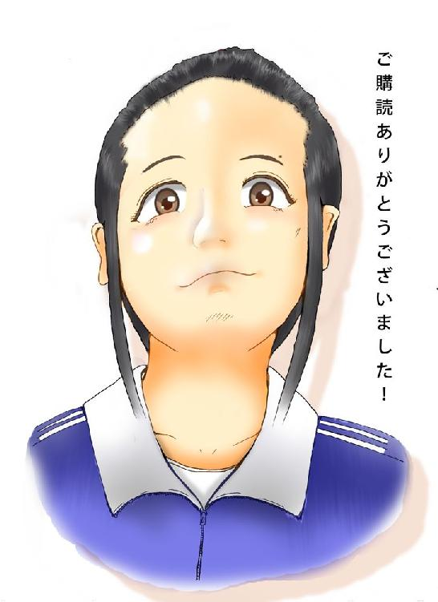

| ブレイブガールスープレックス | |
| 小林アヲイ | |
| Sakura novels (2017) | |
ブレイブガールスープレックス
著・表紙 小林アヲイ
序言
「仕事や社会に自分を掠め取られるのは嫌だけど、忙しければそれなりに甲斐を感じることもある。いろんなことが折り重なって生きている。いいことばかりじゃないけれど、ふりかえってみれば笑って言えることばかり。それでいいんじゃないのかな。不満がないのは合格じゃないけど及第点だよ」
＊
中年を過ぎると、そうやって棘が抜けてゆき、心の老いが始まるのです。いつまでも子供じゃいけないけれど、自分を誤魔化すことにかけては誰もが得意になってゆく。夢は夢のまま。
（某）
ブレイブガールスープレックス
小林アヲイ
１ 大迷惑
デスクを挟んで、俺とボンノフの視線は斜め四十五度に結ばれている。
仁王立ちする俺。
椅子に座ったままのボンノフ。
ボンノフというのは、上司のアダ名である。俺が勝手に決めた。もちろん、当の本人は知らない。四〇半ばの髪の薄いおっさんで、社長の甥だとかで管理職に収まっているが、実に冴えない男である。声が小さい、覇気が無い、動きたがらない。身内でなければ誰も雇う者などいないだろう。小太り、眼鏡、ため息屋、屁理屈好き、きっと童貞だ。
オフィスには俺とボンノフの二人しかいなかった。他の社員は、おおかた外廻りに出掛けているのだろう。事務所はテナントビルの一室で、デスクが五つ、壁際にガタガタのロッカーや棚があるだけの、小さなワンフロアである。ブラインドから差し込む光の筋が、薄暗い部屋にほのかに明るさを与えている。じぃっと埃が漂っている。空気は蒸すようで、黴臭い。壁掛け時計が十二時を指そうとしている。
俺は内ポケットから一通の封書を取り出し、ボンノフのデスクに置いた。
ボンノフはそれをしばらく見つめていた。俺の位置から奴の頭頂部の脂ぎった頭皮が見えた。背後の窓の熱を受け、臭気を発していた。
「あの、甲斐くん」ボンノフは細い目を上目にして俺に向けた。「『辞表』というのは、役職を退く人がしたためるものだよ。きみのようにヒラの場合は『退職願』と書くのが常識だね」
「ああ、そうっすか」俺は吐き捨てるように言った。「じゃあアイツも退職願と書いて出してたんですね？」
「アイツ？」
「そう、アイツですよ」
ボンノフは怪訝な表情を浮かべた。
俺は即座に理解した。
――ははぁん。さては東平の奴、社長に直に提出したのか？ コイツがあまりに頼りないからって！
俺は内心嘲りに満ちて、ボンノフのうっすい生え際をガン見した。
ボンノフは封書を脇にやり
「これは預かっておく。それと、甲斐くん。キミは社会人になって何年経つの？」
知っているくせにイチイチ癇に障る言い方だ。俺のどこをどう見ても、新卒には見えないだろう。三十三だ。入社してもう十年以上経っている。
「辞めたかろうがどうしようが、キミは我が社の社員なんだ。時計を見たまえ。完全に遅刻だ。服務規程違反だ」
俺は奥歯を噛みしめた。
何も言えない。
よりによって退職願を出す日に遅刻しちまうとは。
もっとも、これがもし俺個人の都合の退職なら、午後に出すとか日延べするとか、タイミングを変更しただろう。でも今回は、東平と一緒に、今日この日に出すと約束していたのだ――朝礼後すぐ、上司の気の緩んでいる時に出す――と。単純な俺はここ二、三日興奮しっぱなしで、頭ン中ではずっと「すぐ出す」「バンと出す」とイメージトレーニングを繰り返していた。結果、その通りに実行した、いや、してしまった。遅刻したら、気の緩みもヘッタクレもない。
俺はボンノフの前を引き下り、少し離れた自分のデスクに座った。ボンノフはこちらの様子を伺っていたが、俺がノートＰＣを起動させたのを見ると、自分の仕事に戻った。その時一瞬見せた目つきのいやらしいこと。「なんだ、お前は出掛けないのか」と言わんばかりだ。
そもそも俺が会社を辞めようと思ったきっかけは、一週間くらい前に社長が発したひと言
「制作部は生産性が悪いから、営業二部に変更ね」
これに尽きる。
俺の勤めている会社は、フキタエージェンシーという小さな広告代理店だ。代理店と言っても、媒体売り以外に、創立時の名残で制作部が残っている。つまり広告そのものの制作もやるのである。だが、実情は乏しく、社内で制作するのはコンペの企画書、ラジオＣＭ原稿、あとはチラシや新聞広告のコピーライティングが限界。ちょっと大きな案件は全部外注である。会社の収益の大部分は媒体売り部隊があげていた。制作部は粗利は大きいけど仕事そのものが少なく、正直会社のお荷物になっていた。社長が制作部を潰して営業にシフトさせたくなる気持ちも分からなくはない。
だが俺は嫌なのだ。
そして、嫌だと主張する権利があると思っている。
さかのぼること、いまから十年前――。
俺はまだ大学生で、留年して二度目の四年生をやっていた。文芸サークル員だった俺は、小説家になりたいという夢だけで生きていて、毎日無駄に文字ばかり綴り、就職活動ひとつしていなかった。それどころか、バイトで金を貯めこんでそれなりの持ち分があったので、大学卒業後は働かず、貯金を切り崩して小説に一極集中、三年間やって芽が出なかったら潔く就職しようと考えていた。実に青臭い、馬鹿げた野心である。
そんなわけで、俺は毎朝部室にこもって小説を書いていた。単位はほとんど取得済みで、出なければならない講義は週に一つか二つ。午前中、他の部員共は皆講義に出ていたから、部室は静かで集中できた。
ある朝、俺がいつものように部室で独り文章を綴っていると、トントンとノックして勝手に扉を開けた人物があった。四〇くらいの中年男で、眼鏡掛けの短髪。痩せた身体にピッチリとしたスーツ。彼は室内に入るなり、黒々とした瞳を輝かせ、部室をくまなく見渡した。俺が何かを言おうとすると、それをさえぎり
「ここ、文芸部ですよね」
不気味に瑞々しく、耳障りな早口だった。
「はい、そうですけど」俺はペンを置いた。
「四年生はいらっしゃいます？」
「はあ......ぼくが、そうですが」
「え！ そうなんですか！」
男はわざとらしく目を丸くして甲高い声を絞り出した。そして俺に颯爽と名刺を差し出した。
広告総合 フキタエージェンシー
代表 吹田万里
「つまりね」
男の口調はいきなりタメ口に変わった。
「私の会社では広告を作っている。実に忙しい......それでね、即戦力となるコピーライターを採用したいと思っている。コピーライターって分かるかね？ きみ」
「はい......広告の文章書きですよね？」
「大体正解！」男は目の端を光らせた。「時にきみは、文芸部ということは、文章を書くのに興味があるんだよね？ その力をぜひ、我が社で活かしてみたいとは思わないか？」
「あのう。そういう話は大学の就職課を通していただいた方が」
以前、この男同様、部室棟に潜りこんで採用募集に及んだ企業があり、全学的な問題になったことがあった。俺の大事な文芸部に面倒を持ち込まれては困る。
ところが
「世の中にはコピーライターを経て文才を開花させた作家もたくさんいる！」
俺の言葉など聞いちゃいない。吹田は嬉々として続けた。
「我が社としては、とにかく優秀な人がほしい。即戦力という意味ですよ。それについちゃ、文芸部は打ってつけでしょう？」
俺は繰り返した。
「そういう話は大学の事務方に持っていってください」
吹田は含み笑いを浮かべ、首を横に振り
「広告代理店ってのは、大学就職課や就職情報誌に募集を掛けると、妙に意識の高い奴ばかり集まりって困るのよ。広告ってスマートそうでいて、案外ドブ臭い仕事なんだ。意識高い奴は、すぐ辞めちゃう」
どうやら俺はあんまり意識が高く見えないらしい。そのくせ俺の事を即戦力的な人材であると思っているようだ。
「あの」俺は半端な興味から質問してみた。「でも、小説の文章とコピーライターの文章は全然違うものだって、何かの雑誌で読みましたが」
「問題なッし！」吹田は派手に両腕を挙げて吠えた。「言葉を愛していれば、小説にせよ、コピーにせよ、いずれの道も拓けます。私はきみに、我が社への就職・二大メリットを説きますよ......一つは、文章を書いてお金を貰えます。これはつまり、物書きのプロになるってことだよ。どうだね？」
「はあ」
俺は曖昧に返事した。が、実は胸にグサッときた。俺の紡いだ言葉が金になる――そんなことって、ありえるのか？
「そしてもう一つ」
吹田は俺の目を見て手応えを覚えたらしい。
「コピーライターの仕事を通じて、小説家への道のバックアップしよう。広告業は印刷や出版とのつながりもできる。文学賞分析や投稿サイトのマーケティングもできる。それに、コピーを書き続けることで言葉の修練になる。消費者が読者だと思えば、顧客の売上変動を通じて毎回シビアなレスポンスを得られる。どうだ！」
吹田は勝ち誇ったように言った。それだけ俺の顔に希望がきらきら光ってしまっていたわけだ。自分の文章が金になり、仕事しながら勉強になり、小説制作のマーケもできる......これ以上完璧な職業があるだろうか。
俺は卒業後三年間の小説一極集中を取りやめ、フキタエージェンシーに就職することにした。遠方の親に連絡をすると、安堵したようだった。それはそうだろう。フリーターして小説を書くと言っていた息子が、まっとうに就職しようというのだから。
その後吹田社長と数度会った。彼が「二人くらい採用したい」と言うので、文芸部でもう一人俺のように小説まっしぐらな奴を紹介した。それがトンペイ、本名・東平牧、今回一緒に退職願を出そうと約束した同僚である。
そんな経緯で俺はフキタエージェンシーに入社し、予定通り制作部のコピーライターに配属された。正直、広告代理店と言うから、はじめは電〇とか博〇堂みたいに大きな企業かと思ったら、俺と東平を合わせて五人程度の零細企業。そこのところは少しガッカリ感があった。だが、以来十年、なんとかやってこれたので、さしたる不満も無かった――。
ところが、だ。
入社から十年が経ち、いきなり吹田社長が制作部を廃止して営業二部とすると発表した。
俺の胸に怒りがこみあげてきた。
あのオッサン、俺の小説家への道をとことんバックアップするようなことを言っておきながら、一体どういうつもりなんだ？ 約束は何一つ履行されていない。出版社とのコネクションも、投稿サイトのなんちゃらも、白紙のままだ。しかも、部を廃止するという重大なことを、所属しているスタッフに相談一つ無く、一方的に決定するとはどういうことなのか！
俺はこの怒りを東平に伝えた。奴だって同じ気持ちのはずだ。ここで東平の事を少し紹介しておくと――、背は俺と同じくらいだが、頭が大きくて肩から下は俺よりチビ。全体にぽっちゃりしていて色白く、いつもメガネを掛けている。言っちゃあ悪いが、醜男だ。だが頭の回転が速く、コミュニケーション力が高いから、結婚して子供もいる。まあそんな奴である。
東平は俺の話を聞き、俺同様義憤に駆られ
「そいつは許せんね。社長は十年前、僕らの夢を手玉に取ったってわけか。そもそもロジックアートたる文芸を、商業主義的コピーライティングに近寄せて僕らに甘い言葉を掛けるあたりが、若者を愚弄し、文芸を愚弄し、かつ、」
「ああ、もういい」
俺はとにかく東平と同じ気持ちであることを確認し、今後どうするかを話し合った。それで決まったのが「二人で退職願を出そう」という、今日の顛末だ。小さな会社の事、いきなり二人も辞めると言い出したら、社長だって考え直すだろう。一種の労働争議的なやり口なのである。これを考え出したのは東平だ。やはりあいつは頭がいい。
◆
昼前になってボンノフが何も言わずにオフィスを出て行った。たぶんメシだろう。俺は部屋に一人になり、閉じ込めていた好奇心を解き放った。ボンノフのデスクに近づく。俺が出した「辞表」と書かれた退職願は、ノートＰＣとペン立ての間に立てられていた。まだ封は切られていない。それ以外は――どこを見渡しても、東平の退職願は見当たらない。もしや、別のファイルに挟んだのか、それとも引き出しか。まさかひっくり返して調べるわけにもいかない。と、そこまで考えて、先刻のボンノフの反応を思い出した。
――そうだ、「アイツの退職願も受け取ったのか」と訊いたら「アイツ？」と返してきたんだった。
奴が受け取ったのは俺のものだけ。その時俺は、東平は社長に直接に出したのだろうと思った。俺の記憶は怪しくなっている。動揺しているのか。
でも、よく考えたら、社長に出したとしても、直の上司のボンノフが昼前にもなってそれを知らないというのはおかしい。
俺は席に戻った。退職願を出すタイミングを狂わせたのも、同じ事を繰り返し考えてしまう馬鹿さ加減も、どこか動揺している俺に原因がある。そしてその原因は......そう、遅刻だ。
言っておこう、今朝遅刻をしたのは、寝坊をしたとか、途中で忘れ物を取りに戻ったとか、四つに這って出社したとか、俺の至らなさが理由ではない。駅で遭ったあの女の所為だ。
俺は今朝の顛末を思い返した――。
九時半始業のフキタエージェンシーは、通勤ラッシュのピークをやや過ぎた時間に出社できるので、そこがいいところだと思っていた。だが、電車の座席に座るのはやはり不可能で、俺は毎朝つり革を掴んで電車に乗っていた。
今朝もそうだった。俺は鞄に退職願を忍ばせている分、いつになく気が立っていた。降りる駅に達し、電車の扉が開く。ここから会社まで徒歩五分。俺は自ら将来を変える誇らしい覚悟を胸に、電車からホームへ足を下ろした。
突然、脇から人がぶつかってきた。俺は不意を喰らって前のめりに倒れ、その拍子に鞄の中身をホームにぶちまけてしまった。
「いっててて」
「すみません......」
女の声。目の前に白い手が差し出された。
「あ、あの、お怪我はありませんか」
俺は顔を上げて相手の顔を見た。目に映ったのは――黒眼鏡のひっつめ髪、色は抜けるように白くって、目の上に小さいがはっきりとしたホクロがある。どこかおどおどした地味な女だった。妙に鄙びた感がすると思ったら、上下紺色のジャージ姿。地味が地味を着てますます地味に埋没しているような、そんな佇まいである。見た限りそう年でもあるまいに、よくもまあ街中をこんな野暮な格好で歩けるものだ。
俺は腰を上げ、
「大丈夫です」
相手の手を制した。だが、
「お荷物が散らばっちゃって、あの、拾います、拾いますから！」
女はこちらに背中を向けて腰を屈め、散乱したノートや書類を拾いはじめた。ジャージの上下の隙間にわずかに白い素肌が覗き見えた。周りには駅の利用者が大勢いる。
「俺、自分で拾いますんで」
「だって、わたしがいけないんですもん」
「結構です、大事なものもあるから」
それでも女は拾い続け、次々に鞄に放りこんでいく。ふと一通の封書を手にし、動きが止まった。彼女が見ていたもの、それは『辞表』だ。
「ほらほら、もういいから！」
俺はそれを無造作に取り上げ、ジャケットの内ポケットに滑りこませた。女は見てはいけない物を見て叱られような、落ち込んだ顔を向け、
「すみませんですから、すみませんですから」
意味不明の詫びを続けた。
すると、背後から、
「おいきみ、ちょっと来たまえ！」
突然野太い男の声がした。振り返ると、体格のいい男性駅員が二人。俺のことをおっかない目で睨みつけ
「さあ、事情を説明してもらおうか」
俺の両腕を掴んでどこかへ連行しようとした。
「ちょ、どういうことだ？ 放せ」
抵抗虚しく引きずられる俺。その後を、例の女が「あの、もし、ちょと、あの」と、ついてくる。
それから約三十分、俺は駅の事務所であらぬ疑いを弁明するのに無駄な時間を費やされた。どうやら俺と例の女がぶつかって鞄の中身を拾っているのを、周りにいた誰かが「女性に言いがかりをつけている人がいる」と、駅員に訴えに及んだらしい。俺と女が繰り返し事情を説明し、駅員らはようやく勘違いだと気付いた。駅員らは手の平を返したように平謝り。
「ったく。気を付けてくださいよ」
俺はいそいそと駅事務所を出た。時計を見る。完全に遅刻だ。すでに走る気力も無く、とぼとぼと駅舎を出ようとした。
「あのう」
振り返る――あの女だ。俺はうんざりし
「なんです？ もう用は済んだでしょう？ 俺、急いでいるんで」
「私、今日街に初めて出てきたもので、道が分からなくて」
「そんならさっきの駅員に訊けばいいでしょう？」
「だってあの人たち、最後は何だか気の毒そうで、声、掛けられませんでした」
「はあ......さっきの状況だと俺が一番気の毒な人だと思うんですが」
「すみませんですから」
そう言って彼女は身体をくの字に折り曲げた。俺は「もういいです」と踵を返して女と反対の方向へ歩きはじめた。
ところが女は素早く回り込み
「ここなんですけど」
いきなりポケットから紙を取り出し、広げて見せた。
――なんて図々しい女だ！
しかしこの瞬間、俺はいろいろ考えるのが面倒臭くなってしまった。田舎のお上りさんめ、仕方ねえな――。決して親切心じゃない。なんというか......調和の破壊だ。あるいは現実逃避、あるいは傲慢。あるいは......。
俺は紙を見た。それは手書きの地図で、線の意味する位置情報は全く理解不能だった。けれども行く先の名称が紙の縁に書いてあった。ここから三ブロック程北に行ったところのスポーツジムだった。割と有名なジムで、確かどこかの格闘技団体が経営している本格志向だったはず。俺は通り向こうを指差し、「あっちへ五分くらいひたすら真っ直ぐ」と教えてやった。だが女は「えと、あの」と覚束ない。ただ真っ直ぐ行くだけなのに、なぜこうも要領を得ないのか。俺はイライラして、必要も無いのに一緒に横断歩道を渡り、さらに次の交差点まで越えてやり、
「ほらあそこに赤い看板があるでしょ」
「ありがとうございました！ このご恩は一生――」
女は嬉々として看板の建物へ消えていった。一生？ とんでもない。こっちから願い下げだ――。
というのが今朝の遅刻の理由である。
――それにしても。
俺は椅子にふんぞり返って何気に思った。
――あのジムに何の用だったんだろう。たぶん年は俺と同じくらいだろうから......もしかして女子プロレスに娘でもいるんだろうか。
◆
「何だって？ 出さなかった？」
オフィスの階段の踊り場で、俺はもう少しで東平の胸倉を掴みそうになった。
「おっと、穏やかに頼むよ」
東平は頬肉を眼鏡の縁に当てるほど無理な笑顔で誤魔化そうとした。
昼下り。東平は打ち合わせで午前中顧客を回り、昼飯に帰ってきた。愛妻弁当なのだ。俺はそれを待ち構えて、自分は喰うものも喰わず――もっとも空腹でも無かったが――ようやく顔を見せた東平を階段の踊り場に呼び出し、退職願を出した顛末を訊いたところだった。
「何だって出さなかったんだ」
「落ち着け」東平は人差し指を唇に当てた。「オレだって書くには書いたさ。でもな、ほら、娘が今年から私立の小学校に入んだよ。妻は腹ん中に二人目がいるし、オレが今仕事を辞めたら家族はどうなる？」
「お前が言い出したことだろうが」
「そいつも承知だ。退職願を書いてたら嫁に見つかってさ。泣かれたよ。アタシに何の話も無しにって。よく考えたらそうだよなあ。んで謝ったんだが、泣きやまなくて。大体アイツが泣くの、オレ久しぶりに見てさ、そしたらだんだんいとおしくなって、それで、まあその、お腹にいるけど、つい」
「大馬鹿野郎！」
罵声は階段にこだました。握り拳を振り上げると、東平はとっさに両腕で顔を覆った。左手の腕時計の革ベルトがかなり擦り切れているのが見えた。
――確かに、そうかもな......。
俺が東平でも、やっぱり出さなかっただろう。妻も子もあれば、人間固くならざるを得ない。その点俺は独り者。自由気ままなのはいいことだけど、ある程度の年端になって自由なままなのは、何だか大人になりきれないようで、いじらしい。
俺は振り上げた拳を下ろすことができなかった。そのまま中空でグーをパーにし、自分の脳天に乗せ、ぼりぼりと頭を掻いた。東平は面を覆った腕の隙間から、俺の顔を伺っていた。確かにコイツは妻も子もあり、少なくとも俺よりは社会的進歩者かもしれない。けれど、コイツの了見は腐っている。だって、昨晩出さないと決めたのなら、なぜそれを昨日のうちに連絡してくれなかったのか。
――もしや、俺にだけ出させようとしたのか？ 俺はコイツの術中にはまったのか？
俺のはらわたは、また沸々と煮えくり返ってきた。
「翔ちゃん」
東平は唇をなめなめ言った。
「オレが昨日お前と共有した思いは一緒だぜ。大学生だったオレたちを、吹田社長は夢で釣った。その十年後、制作部は営業二部に転換――結論から言えば、裏切られたような格好だよ。だけどさ、オレたち夢を見させてもらったくせに、何も結果を残せていないじゃないか。これじゃ、制作部はお取り潰しになっても何も言えないさ」
「俺らは与えられたタスクをこなしてきた。それ以上は経営の方に問題があるんじゃないか？」
「オレらもう十年目だよ。いつまでも雇われ根性じゃ、しょうがないよ」
チッ。意識の高いサラリーマンみたいなことを抜かしやがって。しかも、瞬間的に一分の理を認めてしまった。俺はますますイラついた。
東平は入社以来、俺と違って小説を書く頻度をかなり減らしたが、逆に広告ビジネスについて建設的に興味を持って臨んでいた。俺はそんな東平を嘲笑ったものだ。
――こいつの小説家への意志、もう揺らいでやんの。
ところが今はどうだ。奴のひたむきさと意識の高さは、確実に彼を企業人に変えている（良いかどうかは別にして）。かたや俺は、昔の夢にしがみついたきり、企業人にもなれず、結婚もできず、意識は学生の頃のまんま。小説だけはコツコツ続け、毎年少なくとも一本は仕上げて投稿している――それらが全部没なのは、不徳の致すところだが。
「ショウちゃん」
東平は心配そうな瞳を俺に向けた。
「なんだよ」
「今なら間に合う。引っ込めたら？」
「......いい」
「どうして？ これからどうすんだよ」
「これからのことなんて考えてねえよ。それに、引っ込めてもいいかなと思ってたんだけど、今お前に言われたからもうゼッタイ嫌だ」
「んな子供みたいなことを言うなよ」
「どうせ子供だ」
「実際、ショウちゃんがいなくなったら会社回んないよ。コピーライターの腕、会社一じゃないか」
「ふん」俺はますます苛立った。「ライターがお前と俺のふたりきりで、会社一も何もないだろ。それに、業績が良ければ制作部が残ってしかるべきなんだ。業績不振で部署再編なら、俺なんかいなくなった方が好都合なんじゃねえの？」
「ショウちゃん、やけっぱちになってるね。オレ、社長に慰留するように言っとくから」
「勝手にしろ。情けなんか掛けんなよ」
「この頑固者！」
頑固者なら頑固者でも結構だ。俺が頑固者なら、お前は意思の弱い奴。――そんなふうに思ったけれど、心のどこかで自分がヤセ我慢をしているような、惨めな気もした。
好きにしろ。もう、どうでもいい。
ボンノフは俺の退職願をキチンと社長に通したようだ。
その日の夜七時頃、俺は吹田社長の行きつけの居酒屋に向かってひた走っていた。
『業務が終わったらサシで話をしようや』
知らぬまに入っていた留守電には、社長の声で簡単なメッセージと場所と時間が伝えられていた。その日、社長は出ずっぱりで、オフィスで一度も会わなかった。ということは、ボンノフは電話口で俺の退職の意向を伝えたのだろうか。あるいは、東平が画策した慰留工作なのかもしれない。
そんなことより、また遅刻だ。
約束の時間は六時半。すでに三十分遅れている。いくら辞めるといっても、慰留の呼び出しを遅刻するくらいバツの悪いことは無い。俺は街路をひた走りつつ、ついさっき起きたばかりの出来事を呪った。
まさかあの眼鏡の女が、一日に二度も俺の前に立ち塞がろうとは。
◆
今から三十分くらい前のことだ。会社から居酒屋への道すがら、あの女は曲がり角からふわりと現れた。黒眼鏡のひっつめ髪、全身紺ジャージの野暮ったさは相変わらずで、違うといえば、焦燥と憔悴が増しに増していた。俺はたちまち嫌な予感に襲われた。決して目を合わせてはいけない、しかし女は俺を見つけると、ものすごい勢いで駆け寄って
「あの、あの、ＡＢＣレスリングのジムをご存知ありませんか」
おどおどした目で懇願する。
俺は急いでいる旨を伝えてその場を立ち去ろうとしたが、女は追いすがり
「あなたしか頼れる人がいないんです！」
そんな仰々しいセリフ、完全無視してもよかった。だがその声があまりにも大きく、周りの注目を集めてしまったので、俺は足を止め、女の差し出した地図に視線を落としてやらざるを得なかった。またしても手書きだ。汚い＆分かりにくい。今度の場所はさっきよりも少し遠かった。俺は一番近い地下鉄の入り口に彼女を誘い、乗り継ぎ駅を教え、後は分からなかったら交番で尋ねろと言った。それにしてもなぜこの女はレスリングのジムばかり訪ねていくんだろう。女は疲れ切って見えたが、目は真剣だった。眼鏡の奥に光る瞳は、思いのほかあどけなくも見えた。
「どうも、ありがとう、ございます」
女はたどたどしく礼を言った。俺は時計を見た。やばい、時間が無い。俺は別れの言葉すら告げずその場を立ち去ろうとした。すると女はまたもや追いすがり、あろうことかこんなことを言った。
「あの、辞表は、出されたんですか」
「あんたには関係無いでしょう！」俺は語気を荒らげた。
「そ、そそ、そんなつもりじゃ......」
女は今にも泣きそうな顔で何度も何度も俺に詫びた。その謝る声がまた大きいので、周囲の耳目を集めてしまう。俺はどうすることもできず、何とかなだめすかせてその場を逃げるように走り去った。そんなこんなで、三十分も時間をロスしてしまったのだ。
◆
居酒屋のサッシをおずおずと開く。
店中の全てが黒ずみ、脂ぎっている中、客は一人きり。カウンターの奥に吹田社長の姿があった。カウンターの中に大将がいた。彼は俺を見ると、一寸ニヤリとして奥に引っ込んだ。いつもなら野太い声で「らっしゃい」とか、今日みたいに遅れたりすると「社長を待たせて何事か！」と声を張ることもある人だ。あの顔だと、すでにいろいろ聞かされているのだろう。
俺はカウンターの社長に歩み寄った。社長は顔を向け、
「ショウちゃん、これは『小次郎待たせたな』作戦かい？」
俺は素直に詫びた。こういう厭味を浴びせられることもあるから、絶対に遅れたくなかったのだ。遅刻は相手にイニシアティブを与えてしまう。
しかしその後、社長はそれっきり遅刻の話を持ち出さなかった。それどころか、これまでに無かったような親密な態度、ともすると弱さを明かすような心情の吐露を見せてきた。なるほどこれが慰留というものか。俺は決して覆らないぞ――膝の上に拳を握る。
この世知辛い社会で、いかに零細といえど社長業を為す人は、大なり小なりタヌキだと思う。あるいは演出家、あるいは俳優だ。そうして他人だけでなく、自分の意識まで形作っていく。そうでなければ世間の荒波に小舟一層で漕ぎ出す蛮勇など保ちえない。フキタエージェンシーなんて、風車の化け物に突っ込むドン・キ・ホーテさながらの弱小企業だ。それを思うと、今俺の隣で平社員のコップにぐいぐい瓶ビールを注ぐ社長が、滑稽のような、崇高なような、とにかく愛すべき存在に見えてきた。やばい、ビールが効いている。俺はもう一度心の中で繰り返した――決して覆らないぞ。
吹田社長は俺を向き、興味ありげに訊いた。
「いまでも小説書いてるの？」
「いや、今は」
「じゃあ、小説書くために会社辞めるわけじゃないんだね」
「さすがにそんなイタイこと考える年じゃありません」
「そう？ それ、イタイかな。私はカッコイイと思うが」
考えようによっては、無力な零細企業が世間に掉さすのも、脱サラして小説家を目指すファンキードリーマーも、同じくらいリスキーで、カッコイイかもしれない。
「とにかくさ」社長は目をトロンとさせている。「別に今小説書いてないんだったら、制作部を営業にしてもよくない？」
「どういうことです？」
「十年前にきみらを文芸部からスカウトした時、私は約束した。作家になるサポートをするって。その約束については永遠に履行していきたいと思ってる。だけど、当のきみが今小説を書いていないんなら、会社の業績も左前なことだし、夢は少し遠回りをしてもらって、ちょっと会社の経営に協力してくれないかな、と」
「はあ......」
「それ、何のため息？」
「制作部に俺と東平がいながら、どうして当の俺らにひと言の相談も無く決めちゃうんです」
「盆野ちゃんには伝えたよ」
「俺、聞いていません」
「そう？ そもそも制作を営業にしようって案は、ボンちゃんから出たんだよ？」
は？ 俺ははらわたが煮えくりかえりそうになった。ボンノフの奴、ブッ殺したい。百回殺したい！
どうやら社長はそんな俺の怒気を察したようだ。
「まあ、盆野は盆野なりに会社のことを考えたんだろうね。ちょっと分かりづらい奴だけど、ま、これからも立ててやってくれよ」
「俺、辞めるのにどうして立てなきゃいけないんですか？」
「おやおや、ドサクサに紛れて退職願の撤回を図ったのに、仕損じたわい」
そう言ってカラカラ笑い、ビールを手酌して飲んだ。
「そういやあ、キミの相方も最初は不服そうだったけど、終いにはノリノリだったよ」
「相方？」
「トンペイちゃんだよ。今日は彼と一緒にいくつか新規を回ったんだ。新しい名刺を持たせてね」
「そうですか」
俺は、実はあいつと辞表を出す計画だったんですよと言いかけ、止めた。あいつの方が俺の数千倍卑劣だと思うが、いまそれをここで言うのはまるで告げ口みたいで、こちらが卑劣になってしまう気がした。
だが、湧き立つ不快感から憎まれ口を抑えきれなかった。
「東平はもともと営業向きだと思いますよ。コピーライターより、お客さんの宴会で幇間をやる方が上手かったですし」
「そうなのよ」社長はパンと手を鳴らした。「いやあ、それにしても、『幇間』なんて言葉をキミの口から聞くとは思わなかったなあ。あれね、今日本に五人もいないんだって。かたや、コピーライターって日本に何人いると思う？ まともな奴が何人かというのはさておいて、職業としてさ」
「知りませんね」
「そりゃもう莫大だよ。つまりね、幇間の方がコピーライターより貴重ってこと。トンペイちゃんは、広告という職業を通じて、希少価値のある第二形態に覚醒したんだね」
「じゃあ俺はますますこの会社に不要でしょう。お客のご機嫌を伺うなんて、そんな技量はありません」
「そのセリフ、おかしいねえ。コピーライターは文章で消費者のキモチを刺激する。ある意味幇間だ」
「広告会社の社長にあるまじき極論です」
「ショウちゃんは真面目だね。この世はいつも極論に流れてゆく。緻密さも、正しさも、こだわり過ぎるのも、あんまり意味は無い。昔はあったよ。でも今は、うつろうスピードが速すぎる」
「東平がやる気なら、それで結構じゃないですか。とにかく俺は、会社を辞めさせていただきます。今までお世話になりました」
「ううむ」社長はようやく困った顔を見せた。「今日はきみと話してみて、どうやらきみの辞める理由が、部署のことや、ボンちゃんのことや、職業的なことだけじゃない気がしたよ」
俺には社長の言っている意味が分からなかった。
「ま、あと何回か話する機会をくれ」
「何回話しても、俺は辞めますよ」
「はいはい......でもほら、退職届というのは提出・受理されてから一か月は残務整理に掛かってもらわないと。これは就労規則にあることだから」
「分かってます。残務整理って、挨拶回りとかでしょう？」
「会社の人事は機密事項だよ。外部に漏らさないでよね」
「でも、俺のことでしょう？」
「そういっても辞めるまでは社員じゃん」
「勘弁してください」
それからはただダラダラとビールを飲み交わした。社長はどこか諦めた様子だったし、俺の心も最後まで折れることはなかった。十一時を回った頃、居酒屋の前で解散した。
別れ際、
「小説、書きなよ」
社長はそう言ってこちらに背を向け、うらびれた街路に消えた。
こういうキザを平気で言ってのけるのが吹田社長という人物だ。俺は彼のせいでハードボイルドが気に喰わなくなり、以来小説がはかどらなくなったというのに。
社長と別れてから独りでもう一軒バーに入った。が、ハードリカーでもとんと酔わない。仕方が無い。今夜はそういう日なのだ。疲れた。俺はコンビニで第二でも第三でもない正真正銘のビールを買い、家で飲むことにした。その道々、俺は脳内で愚痴を垂れ流していた。
――なぁにが「小説、書きなよ」だ。
俺はあの一言に先回りされたような気がした。だが、夜道を歩いて脳が冷やされていくうちに、あの言葉をそんな風にとる俺の方こそ、心を拗らせているように思えてきた。
自分のどこかで、小説を書くという行為を、まるで何かの免罪符のように考えてはいないか。
東平が結婚してから小説を書いたとか読んだという話を聞かない。アイツはもう小説を書く喜びも小説家になろうという夢も、打ち捨てたのだろう。全てのポテンシャルをフキタエージェンシーに売った。妻と子に明け渡した。幇間になって上手に太鼓を叩くために。
そんな東平のことを、俺は心ひそかに嗤う。
嗤う。
けれど――俺には何にもできない。
そう。俺には何もできない。コピーライターの仕事もできなければ、小説も満足に書けない。東平のように太鼓も叩けなければ、社長のようにキザにもなれない。
いつの間にか、夢を見続けることすらできなくなっている。意地ばかり張って、書きなよと言われれば不愉快になり、生活を考えれば撤回した方がいいはずの退職願も取り下げられない。
一体俺は、どういう状態なのだろう。
どうなりたいのだろう。
これはもう、これはもう――、
これはもう――
これはもう、小説を書くしかない。
またしても免罪か。
夢の再燃？
現実逃避？
無論、こんな動機で書き出した小説は、これまで一度も脱稿に達したことはない。当たり前だ。そもそも構成すら無いのだ。ゴールも無ければプランも無い。まるでだらしの無い人生だ。
帰宅したのは午前〇時を過ぎた頃だった。
俺の住まいはアパートの二階。表通りから中に一本入った筋に面している。家賃の割に広めのベランダがある。畳二帖くらいはあろうか。街の裏道にそんなものを張り出させて、一体大家はどういう考えの持ち主なのだろう。そんな疑問が浮かぶが、俺はそのベランダがそこそこ気に入っている。
筋向こうの表通りは片側二車線の幹線道路で、夜中でも車の音が聞こえてくる。
ベランダからの景色は、正直言ってよろしくない。アパートの前は人通りも路駐の車も無い。ただ退屈な黒い道だ。道を挟んで似たようなアパートが連なっている。点々と並ぶＬＥＤの白い街灯。闇を鮮やかに丸く切り抜いている。
俺はベランダに小卓と折り畳み椅子を引っ張り出し、卓にビールを置き、ノートを置き、無駄に上等な万年筆を置き、全ての準備を整えた。
「......かんぱい」
独り寂しく、乾杯の音頭を囁く。
俺はビールのプルタブを引き、ぐっとあおった。そして万年筆を引っつかみ、いきなりノートに書きつけはじめた。ほんのり盛り上がる酔いに任せて、カリカリカリカリ。時折ビールに口をつける。だんだんテンションが上がってきた。カリカリカリ。何でもいいから唄いたいくらいだ。知らぬ間に足がパッタパッタとリズムを取る。ううむ。あっという間にノートが一ページ埋まる。といっても、行なんか無視した巨大な文字だから、文字数にして百五十文字も無いだろう。内容も全くの酔狂だ。決して読み返さない。まえへーッ、進めッ！
だがそんな書き方で先を綴れるわけも無く、まもなく筆が止まった。寂しい乾杯からまだ十分も経っていない。まさに完敗である。
やれやれ。
俺はビールの最後の一滴を飲み干し、缶を置き、立ち上がった。そして夜風に誘われるように、ベランダの桟へ歩み寄り、下の通りに目を遣った。
「？」
アパートから百メートルくらい離れたところに、黒い人影が見えた。影は右へ左へふらついて、こちらに向って歩いてくる。酔っ払いか？ それにしては大きな荷物を抱えて、一体こんな時間にどこに行くんだろう。俺は物珍しさに人影を見つめていた。黒い影はゆらりゆらり、もう少しでＬＥＤ街灯の光の輪に入る。そしたらどんな間抜けヅラが夜道を徘徊しているのか、顔を拝める。
あと少し、あと五歩――。
（あッ！）
俺はこぼれ出そうになる声をギリギリで飲みこんだ。人影の正体はまさしくあの女、俺を一日二回も遅刻に引きずり込んだ、黒眼鏡ひっつめ髪の地味女である。
――アイツ、あんな大きな荷物を持っていたっけ？
俺は黙って女の様子を眺めていた。彼女はふわふわ漂うように歩を進めると、ふと立ち止まり、なにやら手元を見た。そして頭を上げ、右左を見て――首を傾げる。
「......んあ～」
か細く間抜けな声を上げ、また歩き出す。二歩、三歩、立ち止まる、地図を見る、また傾げる。この繰り返し。
――また何か迷ってるんだな？
女はヘビが蛇行するように、のろのろくねくね歩き、ようやく俺のベランダの下まで来た。そこに至るまで、女はパターン化されたように数歩進んでは立ち止まり、息を付いていたが、あろうことか俺の下でその原則を破り、「はー」と息を吐いて天を仰いだ。
（げッ......）
俺の視線は彼女の瞳に真っ直ぐ結ばれた。しかし、彼女の位置から見た俺は、部屋の明かりが逆光になって真っ黒にしか見えないはず。俺はじっと動かず闇になりすました。
「あのぉ」
間違いない、あの女の声だ。
「そこの、ベランダの方ぁ、」
沈黙。
「ちょっと、道をお尋ねしたいんですがぁ」
俺はオブジェだ、黒いオブジェだ。
「あれぇ。......あの影、ヒトじゃないのかなぁ」
そうだよ。人じゃないよ。
「あのぉ、あのぉ」
俺は微動だにせず、意地で影を貫き通そうとした。
女はしばらく俺のことを見上げていたが、やがて頭を戻した。そのまま深いため息をついて道路にへたり込んだ。
「あっ」
さすがに声が出た。今のは絶対に聞こえたはず。だが女はへたり込んだまま顔を上げようとしない。これはもしかしたら、本当に倒れたのかもしれない。
俺は部屋を出て外階段を駆け降り、道路に飛び出した。女は道路にペタンと尻をついたまま、脇から勢いよくあらわれた俺をぼんやりと見ていた。
俺は駆け寄って
「大丈夫ですか？ どこか具合悪い？」
と尋ねた。
「大丈夫です。今日は歩き過ぎて、ちょっと疲れました」案外大丈夫そうだ。女は苦しげに笑みを浮かべ「あなたは朝と夕方に道を教えてくれた人ですよね。わたしのこと、覚えてます？」
「そりゃもう」俺は大仰にうなずいた。「なんせ、あんたのせいで一日に二度も遅刻をしてしまいましたからね」
女は小刻みに唇を震わせ「すみません、すみません」と繰り返す。
「済んだことです。いいですよ」
「あの、でしたら、済んだことついでに、もう一件道を教えてくださいませんか？」
「は？」
俺は首を傾げ
「今から？ もう一時を回ってますよ。今度はどこのジムに行こうっていうんです？」
「今度はジムじゃないです」女は顔をほんのり赤らめた。「実はわたし、今夜はゲストハウスを予約してまして......ゲストハウスってご存知ですか？」
「ええ、外国人バックパッカーなんかがよく使うやつでしょ」
「そう。とっても安いんですよ。その予約したゲストハウスの場所が、分からなくってですね」
「その場所を知りたいと」
「ええ、そうです。ちなみに」女は肩からぶら下げている大きなスポーツバックを軽く叩き「このバックですが、朝も夕方も持っていなかったでしょう？」
「ええ、そうですね」
「これ、駅のコインロッカーに預けていたんです。縦長のロッカーに」
「はあ」
「よく入ったと思いません？」
「......そうですね」
「預けた後、あちこち行ったんですが――その途中であなたに二回も道を尋ねたんです――、その後、荷物をどこの駅のロッカーに入れたか分からなくなって。散々尋ね回ってやっと辿り着いて」
「はあ」
「そうしてようやく、今からゲストハウスに行くんです」
「それでこんなに遅くなったってわけですか」
俺はため息をついた。
「ゲストハウスの地図はもっていないんですか？」
「これです」
また手書きだ。道が線で記されているが、起点となる目印が何も無い。俺は地図を返して
「何というゲストハウスなんですか？」
「ええと、『パンクラチオン』」
「聞いたことないなぁ」
「インターネットで調べたりできませんかね？」
「ウチ、パソコンが無いんですよ。物を書くにも手書き」
「物を書く？ 家でそんなに書き物をすること、あります？」
「人それぞれでしょ」
「それぞれ、ですね。すみません」
なんて面倒な女だ。俺は胸糞が悪くなってきた。時間もだいぶ遅い。早くこの場を切り抜けないと、延々とこの女に付き合わされることになる。
「じゃあ、えっと」
「あの、わたし、二宮といいます」
女は背筋を伸ばした――腰から下は道路に座り込んだまま。
「ニノミヤさん、ね」俺は顔をしかめた。「俺もその場所分からないから、交番で訊きましょう」
「えっ？ 交番？」
二宮の顔が歪んだ。
「交番はイヤです。あの、悪いことはしていませんけど、交番だけはダメなんです」
「でも、他に方法が無いでしょう。交番はそう遠くないから、俺が案内しましょう」
「あの、あの、度重なるご親切ですが......それだけは結構です！」
二宮はガバッと立ち上がると、バックを脇に担ぎ上げ、回れ右して猛ダッシュで闇の中へ駆けていった。先ほどまでへたり込んでいたのがまるで嘘のようだ。
夜道に残された俺は、しばらく女の消えた方を見つめていた。
「なんなんだ？ アイツ」
ホントに疫病神みたいな奴だ。俺のペースをことごとくかき乱しやがる。
２ 保証人
翌朝。
結局ほとんど酔うことができないまま寝床に就いたはずなのに、起きたら若干こめかみが痛かった。ベランダのカーテンの隙間から朝の日差しが入る。スマホの時計を見る。七時ちょい過ぎ。もう起きなきゃならない。俺は寝床の上で伸びをし、机の上に開かれっぱなしのノートを見た。書き殴られたような文字の並び。手に取って読む。
「ぐぁあああっ」
止めればよかった。俺はほとんど反射的にノートを壁に叩きつけた。腹ン中を不快感がこみあげてくる。俺はそれをゴックリと飲み下し、一つ大きく肩で息をついた。ひどい小説だ、吐き気のするような文章。あれを小説と言えるのか？ いくら即興で書いたとはいえ、日本語はめちゃくちゃ、言葉選びはちんぷんかんぷん。一人称の主体が途中で別人に入れ替わっているなど、もう読んでいて我と我が身を恥じ入るばかりだ。
――ほんっと、俺は。
とにかく目を覚まそう。キッチンに行ってコップに水を注ぐ。一口飲もうとすると......何やら臭い。水じゃない。部屋がだ。ツーンと鼻を刺す感じ。そういえば、今日は燃やせるゴミの収集日だ。俺は週に二回のこの日を、もう二週間くらいすっぽかしている。ゴミ箱の蓋がわずかに開いたまま閉まらない。今日こそ捨てなければ、部屋中が臭くなり、いずれ虫も涌くだろう。
俺はゴミ箱のゴミをポリ袋にひっくり返し、台所の生ゴミも突っこんだ。そうして袋の口を縛ると、サンダルを引っかけて表に出た。
共有の廊下は日陰で涼しく、爽やかだった。
ゴミ収集エリアはアパートの門扉の脇。鉄の外階段をカンカンと音を立てて降りてゆく。
門扉の脇の方に人が二人いて立ち話をしていた。恰幅の良いおばさんと、通称「ジジイ」だ。おばさんは一階の入り口に住んでいる大家。いつも角の窓から外を眺めている。主婦業らしいことを何一つするでもない。家賃の催促と、共有部分の掃き掃除だけが彼女のルーティンプログラムだ。旦那の姿を見たことはない。結婚しているのかどうかも怪しい。ジジイは二階の奥に住んでいる三〇くらいの男で、見た目が老けているから俺が心の中で勝手にジジイと名付けていた。実際に面と向かってそう呼んだことはない。
二人が門を塞いでいるのでゴミを出しに行けない。朝から人に話しかけるのは億劫だったが、仕方なしに挨拶をした。
「おはようございます」
「あらおはよう」
おばさんは友達にするように返事した。ジジイは無愛想に前傾五度くらいに会釈しただけだった。俺は気力を振り絞っていかにも明るく
「どうしたんです？ 朝から集まって」
「ほら」
おばさんは門扉脇の一角を指差した。そこには――
――......ッ！
俺は声を上げそうになるのをギリギリで堪えた。
「朝、表に出たら、この女の人がずっとここで寝てるのよ」
おばさんは腕組みして言った。
「そう」ジジイも腕組みした。「門柱にもたれてイビキをかいてさ。俺、今朝はそれで目が覚めたのさ」
「そ、そうですか」
俺はそっぽを向いて、素知らぬ風で傍を通り過ぎようとした。
その女――見紛うことない二宮は、地べたのセメントに尻を着き、門柱に背をもたれ、大きなバッグを抱き枕のように抱いて眠っていた。恰好は昨日のまんま、紺色のジャージだ。胸を上下させ、安らかな寝息である。彼女の顔は朝日を浴びて、白肌をますます白く見せていた。そのせいか、左目の上の小さなホクロが際立って見えた。唇の間に玉と光る唾液の溜め池が、零れそうで零れない。
「甲斐さん、この人、知ってる？」
おばさんはそう言って、俺が脇を通り抜けようとするのを身体をで妨害した。
俺は「うーん」と首を傾げ
――関わりたくない、関わりたくない......。
と、ひたすら念じた。
すると、
「ぁーああー......」
グッスリ眠っていた二宮は、上体を蠢かせ、両腕を拡げて大きく伸びをした。そしてふぅっと息を吐いて脱力すると、左手で眼鏡をチョイと上げ、右手で目を擦り、薄目して辺りを見渡した。
「おや、この子、目を覚ましたようね」
おばさんは後ずさり、俺の袖を引っ張った。
「あの、ゴミ、急ぐんで」
俺はおばさんの手を引き剥がそうと、指を絡めて必死に引っ張った。だが、どこで鍛えたのかとてつもない指力で、全く剥がれない。
すると背後から、
「あなたは昨日のお兄さんだ」
二宮の声――俺は迂闊にも振り返ってしまった。
視線の先に、黒縁眼鏡の地味女が、寝起きの緩い笑顔でこちらを見ている。ひっつめた黒髪が、ところどころ毛羽立って、ますます貧相でイタイタしい。
「あらァ、あんたたち、知り合いなの？」
おばさんは袖から手を離し、俺と二宮を代わる代わる見た。気が付けばジジイがいない。奴は状況に飽きたのか、何も言わず自室に戻っていた。
「いや、知り合いというわけでは――」
俺がそう言いかけると、
「昨夜は、勝手を言ってどうも失礼しました」
俺にペコリと頭を下げる二宮。
「昨夜？」繰り返すおばさん。
妙な沈黙。
やがておばさんは、何かを悟ったかのように、含意たっぷりの笑みを浮かべ、
「甲斐さん。アンタ、いつまでも独りやと思てたら――でも、無責任なコトしたらアカンで」
――違うぞ！ しかもあんた関西人じゃないだろ！
俺の煩悶をよそに、二宮は立ち上がって身なりをただし、
「すみませんでした」
おばさんに深々と頭を下げた。そのあと、絶妙なタイミングで俺に仔犬のような目線を送った。
――なんだよ、その目は！
「へえ、まあ、なんや？ 大人やろから、ふん、まあ......」
おばさんは完全に合点のいった顔をし、自室に戻っていった。
俺は持っていたゴミ袋を足元に取り落とした。
昨夜は結局ゲストハウスに辿り着けなかった。もう一度俺に助けを求めるべくアパートへ戻ろうとしたが、アパートの場所が分からなくなり、また彷徨うだけ彷徨った。ようやく戻ってこれたが、俺の部屋番号が分からず、困っているうちに疲れて座り込み、そのまま眠ってしまった――。
というのが、本人の告白に基づく二宮の愚行の全貌である。
目が覚めてトイレに行きたいという彼女を、まさか「アパートの敷地の隅っこの角でやれ」とも言えず、俺は仕方なく部屋に上げてやった。
このあと、俺も職場に行かなきゃならない。ならば一緒に部屋を出て、途中のコンビニで地図を立ち読みするなり店員に訊くなりして、ゲストハウスの場所を調べてやろう。
「ちょっと着替えるんで、待っててください」
二宮は部屋の中央のちゃぶ台の前にペタと座り、緊張した様子で頭を下げた。お茶も出していないが、ま、いいだろ。
俺は風呂場に着替えを持ち込み、いそいそと着替え始めた。
――まったく、とんでもない女だ。
俺には信じられなかった。若い女がたった一人で夜中に彷徨ったり、見ず知らずの人を頼ろうとしてみたり、挙句の果て、通りすがりのアパートの庭で寝てみたり。田舎者とか、ちょっと残念とか、そういうレベルの話ではない。たぶん三〇過ぎくらいだろうけど、よくまあ今まで無事に生きてこれたものだ。それに、昨日からどこぞのジムばかり探して、一体何を目的にしているのだろう。
おっと、それは俺には何の関係も無いことだ。
もっとも、二宮がすごく美人だったりしたら、俺とて悪心を起こさないでもないかもしれない。しかし現実的にそれは無い。野暮ったいし、地味だし、言ってることの意味は分からないし。色白だから七難は隠しているかもしれないけれど、隠しきれない愚かしさと面倒臭さ、大雑把さ、厚かましさ......。
俺はすっかり着替えを済まし、最後にジャケットを羽織った。癖で無意識の内にポケットを探る。指先が何かの紙の小片に触れた。取りだして広げてみると、ゆうべ吹田社長に呼び出された居酒屋の地図だった。ネットで縮小印刷したものを小さく切って持っていたのだ。結局ネットで見た記憶だけで辿り着けたので、地図は必要無かった。俺は何気にその小片を広げ、ハッとした。なんと、居酒屋の二軒隣が「ゲストハウス・パンクラチオン」だったのである。
「あの、二宮さん......」
俺はジャケットの前を留めつつ風呂場から出た。振り返る二宮。その手元にあるのは――ノートだ。小説書き殴りの、あのノート！
俺は瞬時に耳まで真っ赤になった。
「ちょ、あんたッ！」
飛び掛かってノートを奪い取り、グルグル巻いてゴミ箱にブチ込んだ。
「な、な、なんで人の物を勝手に見るんだよ！」
俺は腹の底から声を上げた。二宮は肩をすぼめて低頭し
「すみませんでした、すみませんでした......」
目の前で女性が小さくなって詫びている――そんな絵面、俺は長らく拝んでいなかった。何しろ俺は、異性に対する免疫がかなり少ない。肩が上下するくらい憤っていたのが、すぐに冷静さを取り戻してしまった。
「......ったく、人の物を勝手に見ないでくださいよ」
「すみませんでした」二宮は面を伏せたまま上目して俺を見た。「足元にあったので、これ何かなと思いまして」
「中は、見たんですか？」
「ほんの今手に取ったばかりだったから」
「ふん」
俺は腕組みして二宮を見下ろした。彼女はおどおどした様子で辺りを見回しては、肩をすぼめて自分の膝に視線を落とす。
俺はボソッと言った。
「パンクラチオンの場所が分かりましたよ」
二宮は頭を上げた。
「俺が夕べ行った場所の近くだったんです。そこなら俺も通勤ルートだから、案内できますよ」
「本当ですか？」
二宮は上体をピンと伸ばして両手の指を胸の前で組んだ。黒縁眼鏡の向こうに見える目の周りは、ほんのりと桃色がかっていた。どうやら俺は彼女を少しばかり泣かしてしまったらしい。......いやいや、悪いのはコイツだし。
「俺は着替えが済んだので、いつでも出れます。あんたも出発する用意をして」
「ありがとうございます！」
二宮は飛び上がるように立ち上がり、俺の右手を両手で握りしめた。小さな手だが、結構力が強かった。顔を見ると今にも抱き着かんばかりの喜びようだ。距離が近い。俺は苦笑いで応えつつ、飛びついて来たら即座に身をかわす態勢を整えた。
でもまあ、
――はしゃいだら普通のかわいい女の子だな――。
ほんの少し気を許しかけたのも事実だ。
しかし。
「ついでにもう一つ場所を教えていただきたんですが」
「はァ？」
俺の顔が一瞬で固まったのは、二宮にもよく分かったはずだ。こいつはすぐに調子に乗る。
「実は、今日は午前中にヒビジョにお伺いすることになってるんですけど、ヒビジョがどこだか分からないんです」
「ヒビジョ？ なんです？ それ」
「ええっ？ ご存知無いんですか？」
二宮は「信じられない！」という顔を浮かべると、バックステップで俺から離れ、厳しい眼差しを向けた。心外だ。こんなに親切にしてやってるのに、なんて自分勝手な女だ。怒りを通り越して呆れを覚える。
「そんなん知りませんよ。ヒビジョ？ 何それ？」
「ヒビジョって言ったら、響女子プロレスでしょう！」
「はァ？」朝からこんなに「はァ？」を連発する一日も無いもんだ。「昨日からジムばかり廻って、今日はヒビジョ？ 一体あんた、何がしたいんです？」
すると二宮は「その質問、待ってました」とばかりに、大袈裟な「気を付け」から右手を選手宣誓のように天に伸ばし
「わたし、プロレスラーになりたいんです！」
鉛のように重い唾が、俺の喉を通り過ぎて行く。
――ぷろれす、らー......？
通りの向こうで救急車のサイレンが聞こえ、遠のいた。
「プロレスラー、ですか？」
「はい」
「あんたが？」
「ええ、そうですよ！」
「なりたい......って、二宮さんが？」
「だから、そうですって！」
「娘さんとかじゃなくて？」
「失礼ですね」二宮は腰に両手を当てて唇を尖らせた。「わたし、独身なんですけど」
「重ね重ね失礼ですが」俺は額を拭った。「二宮さんって幾つなの？」
「その質問のどこが失礼なんです？」
二宮には既成概念は通用しないようだ。
「わたしは二十九です。まだ三〇にもなってません！」
「えっ？ 俺より年上かと思った」
「お、お兄さんはいくつなんです？」
「俺、三十三」
さすがに二宮もカチンと来たようだ。
「わたしがプロレスラーになったら、承知しませんからね」
「いや、ごめん」俺は彼女がファイティングポーズでスゴむのを制し、「でも、プロレスラーって、十代後半とか、せめて二〇代前半からはじめるものじゃないんですか？ あ、もしかしてレスリングか何かやってたとか？」
「何ッにもやってません！」
二宮は両手に腰のポーズに戻り、やってないことを堂々とアピールしてみせた。
「わたし、夢を追っかけてるだけです。その時が来たから行動している。それだけです！」
「夢」
俺はそれだけ繰り返し、二宮の顔をじっと見た。眼鏡の向こうのいかにも強がった目、天を指す鼻ッ先、ピーッと結ばれた唇。
何だか子供じみていて、俺は吹き出してしまった。
「わ。失礼！」
「いや、だって」俺は口元を袖で拭った。「気持ちは分かりますけど、なんだか突拍子も無くって」
「突拍子も無いなんてことないです！ わたし、この日のことを五年くらい前からずっと計画してきたんですから」
「そんなに計画して、昨日ずっとジムにすら辿り着けないなんて......プッ」
また吹いた。
「もう！ 笑わないでください！ 道なんか親切な人に訊けば済むことです。大事なのは、夢を持ち続けることです」
彼女は少し声のトーンを落とし、ボヤくように続けた。
「そりゃあ、このくらいの歳になって夢とか言ってるの、ちょっと風変わりなことくらい分かりますよ。でも、筋から言ったら逆なんです。
わたしの育った田舎だと、同じくらいの歳の人たちは――といっても自分の女友達くらいしか知りませんけど――、卒業して就職し、結婚して子供ができて、幸せそうにやってます。みんな『幸せだ～、幸せだ～』って口々に言ってますよ。
でもその子たちみんな、中学高校の時は、アイドルになるだの、美容師になるだの、デザイナーになるだの、瞳輝かせて夢語ってたんです。わたしも一緒に自分の夢を語ってたんです。プロレスラーになるんだーって。
そしたら、今じゃみんな、夢なんて全ッ部忘れて家庭に入り、たまに会ってはダンナの愚痴とか言って盛り上がってる。信じられません。あの時語り合った中で本気だったの、わたし独りだったんですよ！」
「みんな大人になったってことなんでしょうね」
「じゃあ何？ 大人って、夢とか捨てちゃうこと？」
「そうじゃないでしょうけど......」
俺はまだ顔の筋肉が緩んだままだった。
「二宮さんは、ずっとプロレスラーに憧れてたの？」
「そうです！ わたし、中学の頃からプロレスラーになる事しか考えてこなかったから、プロレスラーになるしかないんです」
「そ、そうですか......」
俺は吹き出さないように注意しながら、改めて二宮を見た。
白肌に血の気が差し、瞳は凛と光を湛え、美しくすら見えた。気持ちがノってる人間は、活き活きと良い顔をするものだ。俺は彼女の言っていることが心底本気なのだと思った。
「夢か......」
口から自然と言葉が零れた。苦笑交じり、吐息と共に。どうやら俺は二宮にアテられたのかもしれない。好意を持ったとか惚れたというのではなく、なんだかちょっと応援してやりたくなったのだ。
ところが、こいつはまたブチ壊す。
「お......、お兄さんだって、夢、あるじゃないですか！」
二宮は俺を真っ向から指差した。俺は顔の前で手をひらひらさせ、
「無い無い。俺はしがないサラリーマンです」
「嘘です。だってほら、小説書いてた！」
彼女はゴミ箱に駆け寄り、丸められたノートを取り出した。
「わたし、さっきちょっと読んだだけで、この小説がすっごい熱を持ってるのに気付いたんですよ。そりゃあ、一度読んだだけですから、何のことだかさっぱり分かりませんでした。けど、この字体を見てくださいよ。ところどころノートが破けそうになってる。これってすっごいエネルギーですよ――って、あれ？ お、お兄さん？」
二宮は俺の豹変した顔に絶句した。俺はこめかみをピクつかせ
「あんた、さっき読んでないって言ったよね？」
「すっ、すみませんでしたッ」
ガバリと身を伏せ、床板に叩頭して土下座する二宮。彼女は伏せたので気付かなかったが、俺は怒りよりも「何のことだかさっぱり分かりませんでした」と言われたことが惨めで、顔が泣きそうに歪みまくっていた。
部屋で馬鹿なことを言い合っていても仕方が無い。
俺は二宮を連れ、アパートを出た。電車を二駅乗り、パンクラチオンなるゲストハウスに到着した。古くてほっそい三階建てのビルだった。二軒隣の昨夜訪れた居酒屋は、暖簾を入れて締め切られている。時刻は午前九時。水商売はご就寝の時間帯である。周りのバーやクラブなど、どこの軒先にも昨夜の喧騒の痕を伺わせるゴミ袋が並んでいる。朝露を受けて白々と光を返している。この通りは歓楽街で、夜は賑やかだが陽の射すうちは静まり返っている。通勤路でもないので人通りも無い。そんな二面性を持つ場所に、パンクラチオンはあった。
アルミのサッシを開いて中に入ると、薄ら髭の若い兄ちゃんが出てきた。いろいろ説明する。兄ちゃんは二宮をちらりと見遣り「ああ、アンタが昨夜来なかった人ね」と言い、奥に何やら異国の言葉を飛ばした。すると向こうの扉から若い外国人女性が出てきて、二宮を中へ誘った。俺はその間、兄ちゃんにヒビジョの場所を訊いた。兄ちゃんはニヤリとし、地図を開いて場所を示してくれた。すぐ脇の通りを真っ直ぐ行くだけだったが、八〇〇メートルも先だった。案外遠い。俺は嫌になった。きっと「真っ直ぐ道なりだ」と言っても、二宮は「分からない」と言うんだろう。
やがて二宮が身一つで出てきた。紺のジャージ姿は変わらない。ゆうべは野宿をしたというのに、着替えようともしないとは、一体どんな了見なのだろう。普通、女性なら「汗かいたから」とか何とか言って、どんなに時間が無くっても、人を待たせていようとも、無理して着替えそうなものなのに。そうだ、こいつには乙女らしさがまるっきりない。だからさっきから俺はピクリとも男性的な好奇心を煽られずにいるのだ。
いや、もしかしたら俺が、彼女にそう思わせるほど異性的でないのかもしれん――ああ、どうでもいい、どうでもいい。
八〇〇メートルの道中、俺の足取りは重たかったが、二宮は荷物を預けて身軽になった。その分口も軽くなっていた。
「お兄さん、『甲斐さん』って言うんですよね？」
「どうして俺の名を？」
「今朝起きた時、あの太ったおばさんが一瞬呼んだから」
「太ったとか言ったら怒られますよ」
「言いませんよ。言うわけないでしょ」
「まあ、もうウチに来ることも無いでしょうけどね」
「それより、ちゃんとジャケット着て、どこに行くんです？」
「あんたをヒビジョに送ったら、そのまま仕事に行くんです」
「仕事？」
「そう」
「でも、昨日は辞表を持ってましたよね」
ケロッとしてるわりに、何でも覚えてやがる。
「あれはもう昨日出しました」
「辞めたのに、どうして仕事に行くんです？」
「二宮さん、勤めたことないの？ 普通退職願を出した後も、引継ぎとかで、すぐには縁を切れないんです」
「そうなんですか？」二宮は目を細め、「わたしの場合、いくつか勤めたことありますけど、いっつも『明日から来るな』って感じで、引継ぎも何も、引き継がれる前に辞めてることが多かったから」
「そう、ですか」
「ねえ、甲斐さん？」
「なんです？」
「あなたが次に何をするのか、当ててみせましょっか？」
うざッ。
「さて、なんですかね？」
「ずばり、小説家でしょう？」
俺はかなりイラっとした。が、
「まさか。無名なのに、どうやって食っていくんです？ それに、小説家なんて、まともな仕事じゃありませんよ」
「そうですかね？」二宮は首を傾げ「わたし、小説とか好きだけどな――読まないけど」
「読まないのに好きとか、意味分かんないね」
「それより甲斐さん、『無名なのに』って言いながら、小説家だということは否定しないんですね」
俺は何も答えなかった。耳がジンジンした。
いつの間にか二宮が先に立って歩いていた。こんなことなら俺の案内なんか要らないんじゃないか。
「甲斐さん、ヒビジョ、まだ先ですかね？」
彼女はリズムの外れかけたスキップで俺を振り返る。
「もう少しでしょ」目も合わせないで答える。
「ああ、楽しみだなぁ」
「二宮さんは、どうしてプロレスラーになりたいの？ 夢だからとか抜きに、具体的な理由を教えてくださいよ」
「理由、ですか？」
彼女はしばらく考え
「うーん。好きになったきっかけは......何かあったんでしょうけど、夢にして長く経ったら忘れてしまいました」
「なんだそれ？」
「思い出したらまた教えますね」
「はいはい」
「なんかそっちから訊いといて、連れない態度ですね」
「おや、あれじゃない？」
百メートルばかり先、通りの左側、グレーの倉庫のような建物。その壁に、毒々しい色合いのポップ体で「ヒビジョ」と大書されているのが見えた。
「おおー」
二宮は低めに感激の声を上げ、歩く速度を速めた。つられて足早になる俺。しかし、ヒビジョが近くなるにつれ、聞こえてくる異様な声と音に、俺の足取りはいちいちビクつくのだった。
『うぉおらあぁああーッ！』
『でぇええりゃぁああーッ！』
『ぐはッ！』
『イダダダッ！』
雄叫びと悲鳴。ドスン、バタンと腹の底に響く重低音。
確かにここはプロレスの道場らしい――本モノの。
二宮の顔を見る。目は興奮に輝いて、今にも駆け出さんばかりにキラキラしていた。
＊
ここでヒビジョについて少し説明をしておこう。
ヒビジョとは、前に二宮が説明した通り、響女子プロレスリングの略称である。新興の団体で、全国的な知名度はあまり無い。こうして街の中に本拠を構え、一般向けスポーツジムとして営業しながら、プロレスリングの興行も行っている。俺も何度かこの前を通ったことはあったが、パンクラチオンの兄ちゃんに尋ねて「ああ、あそこか」と気付くまで、その存在を気にも留めていなかった。あの変な看板をもってしても、目立っていなかったのだ。
と、ここまでが俺がもともと知っていたヒビジョについての概要だ――ほとんど無いに等しいが。
ここから先は、後から仕入れた情報である。
ヒビジョは既存のプロレス団体と一線を画する興行形態をとっている。通常、プロレス団体は、売り興行で日本一円をドサ廻りをしたり、大規模会場を借りて大々的に興行を打って収益を得る。メジャー団体の場合、テレビの放映権料もある。それに対しヒビジョは、道場に設置されたリングで常設の興行を行う。客席は二百程度。入場料は地域密着のお手軽価格で、誰でも気軽に見に来れる。まるで格闘技の寄席小屋だ。このやり方は、もともとアイドル商法からヒントを得ていた。つまり某秋葉原系的な「逢いに行ける女子プロレス」を標榜しているのだった。それ以外に、ごくたまに郊外を巡業したり、インターネットＴＶで放映されたりしているが、いずれも大した稼ぎにはならない。むしろ赤字のことが多く、常設興行の集客のために広告宣伝としてやっているようなものだった。
プロレスをよく知らない人々は、このような興行形式を持つヒビジョのプロレスを「低俗なキャットファイト」「ストリップもどきの半端見世物」あるいは「アイドル崩れの自己満足」「所詮マイナー団体のプロレスごっこ」と、推測のうちに揶揄していた。だが、ヒビジョのプロレスは格闘技ファンの間ではなかなか評価が高かった。団体の社長はユリエ☆ドーパミンといい、代表選手も兼ねている。元はメジャー団体のエース選手。豪快な投げ技とキレのある蹴りに定評がある。得意技のドーパミンバスターは、往年の名レスラー、ジョージ・ゴーディエンコを髣髴とさせる反りの利いたブロックバスター。これでシングルとタッグの両チャンピオンに輝いた。ヒビジョの道場ではその彼女が自ら練習生を鍛えていたので、リング上のパフォーマンスはレベルが高かった。また、ユリエ☆ドーパミンのハキハキした人柄はプロレスファン以外にも親しまれ、ＴＶのバラエティ番組などにも出演していたので、知名度は全国的に高かった。
彼女がヒビジョを立ち上げたのは今から三年前。独自のプロレス観と起業家魂により、二十九才で旗揚げした。彼女は経営者としても優れていた。アイドル商法を真似た興行形態を権利商品化し、その権益のほとんどを古巣の団体に還元させることを条件に、きわめて円満な退社・独立を実現した。この時結んだ古巣との絆こそ、現在のヒビジョの生命線である。ユリエ☆ドーパミンは、日頃は自分のリングに上がっているが、時折メジャーのリングに復帰参戦してファイトマネーを自社にもたらした。また、ヒビジョに古巣の選手を招いて興行的な成功を図ったりもした。
しかし困難は多かった。ハイクオリティのレスリング・パフォーマンスを維持しようとすると、かなり厳しい訓練を要する。練習についていける人材はなかなか集まらない。くわえて「逢いに行ける女子プロレス」を標榜するとなると、レスラーのルックスにもそれなりのレベルを求めねばならず、人材確保は困難である。また、道場兼常設リングである今の施設は、やりたい事に対して手狭な割に、街中なので家賃が高い。収容人数は折りたたみ椅子をぎっちり敷き詰めて二百二十が限界。収入は入場料がほとんどで、これ以上増やしようがないのが現状である（しかもいつも満員になるとは限らない）。照明代、コスチューム費、保険料、道場の維持費など、経費はかさむ。選手のグッズ販売もそれなりに収益になるが、損益分岐を出すと二百二十の席数ではグッズの制作費を賄いきれず、なかなか製造に踏み切れない。
少しでも利益を上げなければ、団体の存続が危うい――そこでユリエは、興行の無い日の道場を開放し、一般向けのスポーツジムとして営業しはじめた。本物のプロレスラーがみっちり鍛えてくれるハードな道場として思いのほかニッチなニーズがあった。また、地域の高校の柔道部やレスリング部が特訓に利用してくれたりもした。現在は、定休の日曜、興行日の土曜以外、一般向けジムとして、コアな市民が熱い汗を流している。
「アンタ、ホントに来たのかい？」
高めのハスキーボイス。ゴールドの短髪から汗を滴らせるユリエ☆ドーパミンは、少年のようにくりくりした目を訝しげに二宮に注いだ。二宮は「はいっ」と、首が折れんばかりに頭を垂れた。ユリエは呆れた目でやり過ごし、今度は俺の方にムッとした目を向けた。
「えと、俺はこの人にこの場所を教えただけで......」
しかしユリエの目は全ッ然信じていないのをモロにあらわしていた。
ヒビジョの道場はセメントの打ちっぱなしで湿度が高く、何もしないでも首筋に汗が滲んだ。広さは学校の教室二つ分くらい。天井だけバカ高い。真ん中にリングがある。およそ六メートル四方の裸のリングは全体的にグレーで素っ気無い。周りにマットレスが敷かれている。その他、ベンチプレスの機材、ダンベル、鉄アレイ、ストレッチボールなどが点々と置かれている。どれもだいぶ使い込まれていて、傷とクスミが激しい。
俺と二宮がやってきたのは、ちょうど練習中のようだった。俺たちが開け放たれたままの道場の戸口に立つと、ユリエは汗も拭かずに出てきた。俺は顔にこそ出さなかったが、ユリエの姿を見て、「ホンモノだ」と、ちょっとミーハーな気分になったことは認めよう。
道場ではユリエの他、三人のレスラーが黙々と練習をしていた。一人はリング下でロープスキッピング、一人は寝そべってストレッチ、もう一人はリング上でダミー人形を抱えて投げたり抱き起したりしていた。俺と二宮、ユリエが話をしている間にも、ドスンバタンと激しい音がした。
ユリエは俺らに椅子も勧めず、立ったまま応対した。二宮の「入門させてください」、ユリエの「ダメだよ帰んな」のやり取りが、かれこれ二十往復はしたと思う。俺はずっと黙っていた。
「だからさあ......こう言っちゃ悪いけど、アンタ年齢的に難しいんだよ」
「大丈夫です！ 精神年齢は低いって言われますから！」
「そうじゃなくってさ」
ユリエの言い方から察するに、今日二宮が来ることは知っていたようだ。それが電話か手紙か、電子メールなのかは分からない。年齢についても聞いていたのだろう。おそらくこの手の入門希望者はいくらでもいるに違いない。ユリエはジャージ姿の二宮を頭の先からつま先までじっと見つめ
「身長も無いし、筋肉も......アンタ、スポーツ経験、無いでしょう？」
「ありません。でも畑仕事をしてました！」
「ウチは畑じゃないからね」
「筋肉は無いけど、身体は結構柔らかいですよ。ほら」
そう言って膝を伸ばしたまま床に指先を付けた。一瞬、チョン、と。ユリエは面倒臭そうに首を横に振った。そして厳しい目で二宮を見据え
「ハッキリ言う。向いてない。ていうか、怪我するよ。プロレスはね、夢とか精神論だけじゃできない。プロはプロでもエキスパートのプロなの。普通の人にはできない。諦めな」
「そんなあ」二宮は食らいつく。「昨日からもう四軒も回ってるんです。どこも断られちゃって。わたし、プロレスラーになるまで家に帰れません。お願いします」
「ダ、メ！」
ユリエは一音ずつ区切って言った。
「ウチはね、十六歳から二十二歳のスポーツ経験のある人間しか採らないんだ。別に選り好みしてるんじゃない。そういう人材じゃ無きゃ、後々泣きを見るのは選手の方だからだよ。いいかい？ プロレスは身体で覚えるものなんだ。年を取ってからはじめても、大して伸びない。この伸びしろってのが大事でね。伸びる期間が長いほど、選手生命も長くなる。これが年寄だと、伸びしろが短く、すぐに引退だ。ウチは零細団体だから退職金なんて微々たるもの。現役時代に貯金しとかないと、引退後の生活は苦しいぞ。怪我で辞めたら再就職だって難しい」
俺はよっぽど感心した。プロレスもマネジメントすると大変なようだ。二宮は真剣そうに聞いているが、たぶん呑み込めていないだろう。瞳は無垢そのもの。右の耳から左の耳に突き抜けている。
「――と言うわけだから、入門はお断りする。分かったな」
ユリエはひとしきり喋って締め括った。
しかし
「ヤです！ 帰りません！」
大きな声が道場に響いた。
「ダメだ。帰れ」
「ヤです」
「か・え・れ！」
「ヤ・で・す！」
頭に来たユリエは、ついにマイクパフォーマンスばりの巻き舌で
「テメェ、いい加減にしろよ、このヤロウッ！」
と凄んだ。しかし二宮には通用しなかった。彼女はユリエの向こうで練習する三人に興味を移し、すでにそちらに釘付けになっていた。
「はあ」
ユリエはため息を付いて俺の方を向いた。
「アンタ、この人に道を教えただけって言ってたけど、ホントにそうなの？」
「そうですよ」
「怪しいな。アンタ、実はヤクザで、この人を売りとばしに来たんじゃないの？」
「とんでもない」俺は首を横にブンブン振った。「俺はまっとうなサラリーマンですよ。それに、売るんならもっと商品を厳選するし、売る先だって考えますよ」
「何ッ？ ここはゴミ捨て場かよ。アンタ、プロレス舐めてんの？」
「そんなことはありません。とにかく、俺は二宮さんとはアカの他人です」
「んじゃあ、アカの他人のアンタに訊くよ」
「なんです？」
「この人、プロレスに向いていると思う？」
「到底思えませんね」
「だろ。到底思えないそのアンタが、道場の中まで入ってきて妙な談判に付き合ってるんだよ。普通、アカの他人がそこまでするか？ コッチの立場からそれが信じられると思うかい？」
「......無理でしょうね」
「だろ？」
「ユリエさん。甲斐さんはホントにアカの他人なんですよ」
二宮が割りこんだ。
「この人甲斐さんっていうの？」
「そうです。昨日からいろいろご協力を頂いて、昨夜もお宅に一晩......」
そこまで言って二宮は頬を薄く赤らめた。
「おい、言葉を抜かすな！ お宅『の前』に一晩だろ！」
ユリエは悪意のある笑みを浮かべ
「甲斐さん。オンナを家に入れといて、他人ヅラは無いぜ」
「ちょ、信じないでくださいよ」
トンだやり取りだ。
この後、再びユリエと二宮の押し問答になった。十分くらい繰り返されただろうか。ウンザリの極みだ。ついにユリエは根負けし、ちょっと違う言い回しをした――というより、してしまった。
「二宮さん。言っとくけどね、そもそもウチじゃ選手を預かる時に、保証人がいないとダメなんだよ」
「保証人？」
「ああ、これはルールだ」
「ルール......」
二宮の目元が暗くなる。普通、保証人と言うと、親兄弟だ。しかし二宮は、昨夜警察に道を尋ねるのも嫌ったくらいである。きっと親に黙って出てきているに違いない。つまりこれは彼女にとって手痛い通告だったはず。
二宮はしばらく悶々としていたが、やがて観念した様子で
「分かりました、保証人を探してきま――」
そこまで言いかけた時、ユリエは何を思ったか、にわかに俺の腕を掴み
「甲斐さん、アンタ保証人になりなよ」
「はァ？」俺は度肝を抜かれた。「ちょ、俺は関係無いでしょ」
すると、ユリエは俺の耳元に口をのばし
（心配すんな。カッコだけだよ。今日一日入門させて、ちょっと絞ったら絶対グウの音を上げて辞めるに決まってるから）
俺も小声で返す。
（今、二宮さん諦めそうになったじゃないですか。それをわざわざ、どうして掘り返すようなことを言うんです？）
（こういう奴はしつこいから、何度でもやってくる。だったら今のうちに潰しといた方が楽でしょ）
（まあ、そうかもしれないけど、しかし......）
俺は戸惑った。が、いずれにせよ、今さら俺が何を言っても手遅れだ。すでに二宮はユリエの提案に歓喜の様子である。
「ユリエさん、それ名案です！ 甲斐さん、ありがとうございます」
「俺まだ保証人になるって言ってないぞ！」
「ありがとうございます、ありがとうございます！」
ああ、やれやれ。何を言っても聞いていない目をしている。俺は忌々しげにユリエを見た。なんていい加減なことを言う奴だ。文句の一つも言いたいけど、相手は女子プロレスラー。身体は岩石のようにごつごつしている。怖くて何も言えやしない。
ユリエは一旦奥に引っ込んで、一枚の紙を持ってきた。
「さ、書いて頂戴」
傍らの長机に一本のボールペンごと置いて、俺に促す。
紙は片方の辺がぎざぎざしていて、今しがた大学ノートを一枚破ってきたのが丸分かりだ。一番上の行に、ボールペンでデカデカと【保証人】としてある。その下に、氏名、電話番号とあり、それぞれその横の空白箇所にアンダーラインが引かれている。ここに記入せよということらしい。俺はしぶしぶ書き入れてユリエに渡した。
「二宮さんも、甲斐さんの下でいいから名前とケータイ」
「はいっ」
二宮は目を輝かせて書きにかかる。俺の下のところに【二宮しはる】と書いた。何で下なんだ？ これじゃまるで俺が入門者で保証人が二宮みたいだ。普通、逆じゃないか？
あと、コイツ【しはる】っていうのか。
「わあ」二宮は俺を振り返り「こうして並べて書くと婚姻届みたいですね」
「やめてください」
「私、保証人になってもらったご恩、一生忘れません」
「早くちゃんとした人を見つけて、変わってもらって」
「きっとスターになって、いっぱい稼いでお返しします」
「ああ、はいはい」
何とでも夢を語れ。こいつは間もなくユリエにしばかれ、一日でグウの根を上げてクニに帰らされる運命なのだ。クニがどこなのかは分からないけど、そんなことはどうでもいい。それがコイツのためだし、そうじゃなければ俺もユリエ☆ドーパミンも迷惑なのである。
「じゃ、俺、行きますんで」
「おや、どこへ？」
ユリエが困った顔で尋ねる。
「どこって、俺、今から仕事なんですよ」
「え？ あんたホントにアカの他人なんだ」
「あなたもなかなか疑り深いですね」
「マジかよ。一体どんだけお人好しなんだ？」
俺もそれには同感だ。全くどうかしている。
会社に着いたのは十時半ごろだった。大遅刻である。オフィスには社長もボンノフもトンペイもいた。トンペイはちょうどどこかに出掛けるところだった。スマホで何やら賑々しく話している。俺とは入り口ですれ違い、ちょっと目を合わせただけ。電話は取引先らしく、口調は幇間そのものだ。それでよかった。いろいろ喋るのは面倒である。ボンノフは昨日と全く同じ姿勢で自分のデスクに着いている。部屋に入ってきた俺を一瞬チラリと見て、それっきりだ。「何で遅れた」「社会人が云々」といった小言は無い。おそらく、奴にとって、退職する俺の存在はもはや無に等しいのだろう。それはこっちだって同じだ。ただ、自分が辞めて去る側なのが、何だか敗兵みたいで悔しい。
正直、「どうして遅れた」と訊かれたら何と答えるべきか迷っていた。「見ず知らずの女性をヒビジョに連れていきました」なんて言ったところで、変な顔をされるに決まってる。かといって嘘をつくのも癪だ。俺は何にも悪くないのに、どうしてそんな面倒を負わなきゃいけないのか。全部二宮しはるが悪いのに。
まあ、訊かれなかったからいいんだが。
だが、面倒な人がもう一人......吹田社長である。いつもは朝礼が済んだら即座に外を回りに出る男が、今日に限っていつまでもいる。しかもハイテンションで俺に絡んでくる――遅刻については一言も触れずに。
「ショウちゃん、おはよう！ 見た？ 今の見た？」
「何をです？」
「今すれ違ったじゃん。トンペイちゃんだよ」
「アイツがどうかしたんですか？ いつもどおりでしたが」
「あれをいつもどおりって言うようじゃ、きみたちの長年の友情もメッキが剥がれてきたかな？」
ひどいことを言いやがる。が、事実である。俺が何も言わずにいると、
「トンペイちゃんの目、ものすごく輝いていると思わなかったかい？」
「さあ？ どうでしたかね」
「やれやれ」社長は眉を八の字にして言った。「トンペイちゃんは、今や我が社のキーマンなんだよ。なんたってアカツキ飲料とつなぎをつけて、でっかいキャンペーン企画をブチ上げているんだからね。大したもんだよ」
「はあ、そうですか」
「なんだい？ そのため息は」
アカツキ飲料は誰もが知る大企業だ。だが俺の中では――いや、広告業界全般において、最低最悪で名高い。高額な制作費をちらつかせ、各社をコンペティションに招いておいて、全社落選にし、後で企画のいいトコ取りをして子会社に実現させるという、悪質な会社だった。おそらく広告会社なんてゴミクズくらいにしか思っていないのだろう。かつて一度たまりかねたデザイン会社が訴えに及んだ。裁判では言い分が認められ、デザイン会社は勝訴したが、賠償請求できたのはコンペに出た際の実経費分の約二十万円のみ。しかもその後、アカツキ飲料は飲料業界全体に圧力をかけ、そのデザイン会社をハブらせた。デザイン会社はまもなく廃業した。涙無くして語れない悲劇である。
「社長、辞めていく俺が言うのもなんですがね」俺は淡々と言った。「アカツキ飲料にはウチもだいぶひどい目に遭わされてきたじゃないですか。きっと今度も一緒ですよ。そんなところと付き合っていたら、制作部どころか他のセクションも潰さなきゃならなくなりますよ」
社長、目も口も歪め、
「嫌味なことを言うね。聞いたか？ 盆野ちゃん」
ボンノフはうなずき
「リスクを避けていたら、広告はやっていけませんからね」
「そう！ そのとおり！」
俺の瞼はひとりでにヒクヒクした。こいつがこれまで一体どんなリスクを負ってきたというのか。俺やトンペイがまだペーペーの頃、嫌な仕事がくると全部押し付けてたくせに。やがて俺らが職能でボンノフを凌駕すると、今度は実力差が明らかにならないように大きな仕事を避けるようになりやがった。仕事をしないお前に、リスクを語る資格など無い。
「んじゃ、私はもう行くから」
社長はジャケットを羽織った。
「今からアカツキ飲料の専務とミーティングでね。トンペイちゃんがアポ取ったんだよ。アカツキさんの対外折衝って、大概営業部長どまりなんだが、今回は専務さんってことでね。ヨソの企画屋や代理店は、内心驚いてんのさ。『フキタさん、抜け駆けだね』なんて。いやあ、トンちゃんサマサマだ。彼にはフキタの株式をいくらか融通しようかなあ」
何が株式だ。聞こえよがしに言っているのは丸分かり。俺が無反応を決め込んでいると
「ショウちゃん、一緒に行く？」
「勘弁してください」
社長はカラカラ笑って部屋から出ていった。
部屋は俺とボンノフの二人きりになった。
「甲斐くん」
ボンノフが口を開いた。
「社長は東平くんと一緒に出発する予定だったんだが、きみがちょうど出社したものだから、下に彼を待たせてきみと話をしたんだ」
「そうっすか」俺は相手を見もせず答えた。
「きみ、社長のキモチ、分からないのか？」
俺は黙っていた。なんだこいつ。これじゃまるで俺が聞き分けの無い奴みたいじゃないか。要所々々攻めどころを見つけてチクチク突いてくるボンノフに、俺の苛立ちは募った。
その日は、もう何をする気にもなれず、会社を後にした。まだ十一時にもなっていなかった。気持ちの底に苛立ちが沈殿し、俺は神経が昂ったままだった。こういう時は、妙に頭が冴える。俺はふと閃き、その足で職安に向かうことにした。
徒歩で十五分程度。
職安は、街の中心部に位置する市営公園に隣接した建物である。建物の周辺は人だかりができていて、あふれた人が公園でブラブラしていた。平日なのに盛況だと感心したが、よく考えたら仕事の無い連中ばかりだ。
人を掻き分け建物に入った。入り口にいた女性が「受付はこちらです」と話しかけてきたが、案内を断った。俺はまだ完全に離職していない。今日は様子見だ。一階の大フロアに入った。そこにはスタンディングデスクに置かれたパソコンが、まるで図書館の本棚のように、ずっと向こうまで何列も並べられていた。求人検索システムである。俺は空いていた一台の前に立ち、タッチパネルの「開始」を押した。年齢や保有資格、職能、希望する年収、職種、地域を入力。最後に「正社員／パートタイマー」の別を正社員にし、「検索開始」をクリックした。
――お探しの求人情報は０件です――
「なん......だと......」
声が漏れた。希望地域が狭すぎたのかもしれない。職能も少しサバを読んで、あと、希望職種も裾野を広げよう。「広告企画」プラス「広告営業」も含めて――おっと、これじゃトンペイと同じだ。しかし俺はその条件で検索を続けた。
それでも求人情報はゼロ。
最後の妥協で、希望年収も下げてみた。が、結果は同じだった。思い切って三分の二くらいまで下げてようやく一件。どこかの葬儀屋の礼状書き。しかも主業務は葬儀の進行全般となっていた。
俺は呆然として建物を出た。
三〇代半ばなら再就職の口はいくらでもあると思っていた。しかし、世間の景気は思いのほか冷え切っているようだ。職業選択の自由を行使しようにも、選択肢が無い。努力して何とかなるって情況じゃないのである。公園にあふれてブラブラしている連中の闇が知れた気がした。
――もしかして、フキタを辞めるのは失敗だった......のでは？
いや、今さら退職を撤回なんて。ボンノフやトンペイと再び交わる事はできない。社長は俺が戻ると言ったら許すだろうけど、大きな貸しができそうで嫌だ。
ああ、どうしてこうも、俺は自尊心が高いのか。
もっと楽に生きればいいのに。
その日はさっさと部屋に帰り、日の高いうちはボーっと壁のシミを見つめていた。夕方になって、腹が減っていることに気付いた。そういえば昼飯も喰っていない。カップめんで適当に誤魔化すと、ぬるい水道水を飲みながら小説を書き始めた。もう質素倹約体制が敷かれていた。
書き出した小説というのは、昨日の夜、酔いしれて書いたアレだ。今朝二宮に見られてゴミ箱に放った奴。あれを引っ張り出して、続きを模索する。が、筋を考えようとしたらすぐに脱線し、悲観的な将来ばかり思い描いてしまう。
――このまま仕事が見つからなかったらどうしよう。
そこから先は空想劇である。あの公園の風景が、全世界の景観になったら......。失業者たちが飢えて相食むようになる。犯罪者とホームレスは政府に隔離され、処分される......。
希望が無いと、馬鹿げたことでも怖くなる。
結局、小説どころじゃ無い。紙は真っ白なまま、夜が更けていった。現実逃避すらままならない。
こうなりゃあ、遅まきにでもプロレスラーを志す二宮しはるの方がよっぽど健全じゃないか。
３ ヒビジョ
皮肉であれ、あんまり二宮のことを正当化するもんじゃない。
というのも、もしかしたらあの人は、たとえ遠距離でも人間の些細な意識を感知し、本人は無自覚のままに、周囲に影響する魔力を持っているのかもしれないからだ。
まさか、また巻き込まれるとは。
翌朝――といっても十時くらいだが――、俺はスマホの音に起された。布団の中で電話を掴み、眠い目を擦って画面を見る。番号の羅列が目に入った。登録してない相手だ。これが会社だとか社長だとか明確に分かれば、平然とスルーするのだが、分からないとなるとかえって不安になる。
しかも、この番号、なかなか電話を切らない。延々三十秒くらい、呼び出しを続けている。
俺は恐る恐る電話に出た。
「......もしもし」
『あ、甲斐さんですか？』
低いが、やや甲走ったハスキーボイス。男とも女とも取れない。どこかで聞いた声のような気もしたが、思い出せなかった。起き抜けの朦朧で、しばらく口が利けずにいると
『昨日会った、ヒビジョのユリエ☆ドーパミンです』
あ、そうか。
「ああ、どうも甲斐です。おはようございます」
『挨拶どころじゃ無いよ。あのね、二宮が今朝の練習でひっくり返って、いま病院に運ばれてったんですよ』
「え？」――と、俺は驚いてみせた。
一応。
ひっくり返ったとあれば、もちろん同情はする。でも、本音を言えば「俺に何の関係がある」。現実に、俺は彼女の親戚でも恋人でも友人でも無い。単なるアカの他人だ。
俺が何も言わずにいると、ユリエは続けた。
『とにかく、アンタ保証人なんだから、後を引き取ってもらいたいんだけど』
「おいおい！」俺はいっぺんに目が覚めた。「保証人の件は、昨日そっちが格好だけって言ったからなったんじゃないか！ 俺に何の関係があるって言うんです？」
『保証人なんて、簡単に引き受けるもんじゃないよ』
「こら！」
『病院はヒビジョのジムの最寄りの〇〇病院だから。受付で二宮って言えば分かる。とにかく行って治療費払ってよ』
「なんで俺がッ？」
『保証人だからだよ。じゃあ』
電話はブチッと切れた。
朝から何なんだ！ こいつは！
三十分後、俺は言われた病院にいた。古いビルの、昔からある町医者である。総合とか市立といった立派なところではない。
受付で二宮の知り合いだと告げると、すぐさま理解して「掛けてお待ちください」とのこと。たぶんユリエが「こういう感じの奴が来るから」と伝えておいたのだろう。
俺は待合室のソファに掛け、マガジンラックの古い女性誌をパラパラめくった。内容は全く頭に入ってこなかった。
俺は悶々としていた。俺が病院に来る必要は無いはずだ。何しろ俺はアカの他人。絶対に来る必要は無い。無い無い無い！ だが来てしまった。「保証人」という言葉に脅されて。ユリエに一杯喰わされた。気を付けないと、どこで足元をすくわれるか分かったもんじゃない。お人好しも程々にしよう。
二〇分ほど経って、奥からパタパタとスリッパの音が聞こえ、ジャージ姿の女性が二人あらわれた。一人は二宮しはる。昨日と同じ紺のジャージ。黒縁眼鏡。苦笑いを浮かべ、つんのめるように廊下を歩いてくる。傍らには背の高い長髪ストレートの女性。この人の姿は、昨日ヒビジョのジムで遠目に見て覚えていた。目元口元にクールな知性が漂い、「どうしてプロレスラーに？」と疑うほどの器量好しである。きっと心根も優しいのだろう。心配そうに二宮の足取りを見守っている。さすがのユリエも人を付き添わせたということだ。
「あ、甲斐さんだ」二宮が俺を見つけて走り出した。
「こぉら、走らない！」
クール美人が口を尖らせて制する。二宮はバツの悪い顔をして足取りを抑えた。俺はソファから立ち上がり、二、三歩歩み出て二人を迎えた。
「なんか、大変だったみたい......ですね」
「そうなんですよ」二宮は顔をしかめた。「今朝、練習の時に、ユリエさんが『リングに上がってみな』っておっしゃるから、私、もう舞い上がっちゃって、リングに足を掛けて上がろうとしたんですけど、滑って床で頭ゴンって」
あちゃあ、リングにすら上がれなかったか。
「それで気を失っちゃってですね。ここにいる凛さんに病院に連れてきてもらったんです」
クール美人は凛さんっていうのか。
凛さんは俺に目を遣り、
「ゴッツンって、すごい音がして――。私、リングのちょうど反対側でストレッチをしていたんですけど、ビックリしまして。私だけじゃなく、ユリエさんもかなり驚かれて。で、病院は目と鼻の先だから、救急車を呼ぶより担いで運んだ方が早いと、私、二宮さんをおぶってきたんです」
頭を打ってるんだったら、動かしちゃいけないんじゃないかな。
「先生がおっしゃるには、レントゲンもＭＲＩも問題無いと。とにかく石頭だから、床は大丈夫かとジョークを言われて」
凛さんはホホホと笑った。ユリエと違って言葉も丁寧だし、安心して接していられる。彼女はひと通り話し終えると、
「それでは、甲斐さん、二宮さん。私は一足先にジムに戻ってユリエさんに報告しますから、お先に失礼します」
「はい、ご苦労様でした」
俺は彼女の丁寧さに乗せられ、背中を見送ってしまった。
あっ。支払い、やっぱり俺かよ。
幸い二宮は国民健康保険に加入していた。幸いっていうか、当然そうあるべきだが。治療費はレントゲン代などでそこそこの額だったが、とりあえず俺の持ち合わせで足りた。二宮は担ぎ込まれたので財布も何も持っていなかったが、ジムに戻ればあるという。
「後でちゃんと払いますね！」
それは俺にジムに来いということなのか。こいつはそういう我儘を、我儘だと思わずに言っているのか、分かって言っているのか。たぶん前者なのだろうけど、彼女が黒縁眼鏡越しに見せる笑顔は、あざとくも他人に対し「仕方がない」と思わせる不思議な力を持っていた。
なんというか、手応え不明なのである。
何か得体の知れないことがあると、どうにか辻褄をつけてしまわねば前に進めない。俺はそういう性格だ。だからこんな些細なことでも、一度気になったらなかなか拭い去れない。とはいえ、いつまで経っても足踏みじゃ、人生は前に進めない。
解除法はただ一つ。
戦略的撤退だ。
「治療費は、明日ジムに受け取りにいきます。それじゃ俺はこれで」
「どこへ行くんです？」
「会社です」
「まだ辞めてないんですか？」
「関係無いでしょ」
「ところで」二宮は小首を傾げ「今、何時でしょうか」
俺は病院の壁に目を遣り
「ほら、あそこに時計がある。十一時半」
「十一時半、ですか」
二宮は俺の目の奥を見つめ、
「お腹空きません？」
「空かない」
「わたし、朝からジムで運動してたんですよ。だからお腹空きました」
「俺はぐっすり寝てたんです。そこを電話で起こされました」
「じゃあ、お腹」
「空いてねえって」
「......ぅえ」年甲斐も無く泣きまねを試みる二宮。
その時、運悪く俺の胃袋のあたりが鳴きやがった。
確かに俺も空腹だった。
朝ユリエにバタバタ起こされて、よく考えたら水一滴飲んでいない。
十分後、俺と二宮は病院の向かい側のファミレスにいた。
正午前のファミレスは空いていた。俺と二宮は最安値のランチを注文した。立て替え額が増える分に、ファミレスの食事程度じゃいくらも違うまい。俺はもう何もかも億劫になっていた。
食べている間、二宮は喋りっぱなしだった。
「プロレスのリングって、実はマットが敷いてあるんですよ。わたし、ベニヤ板が張ってあるだけかと思ってました！」
そんなのも知らずに入ったのかよ。
「ユリエさんの必殺技、生で見たんですよ！ 知ってます？ ドーパミンバスター。相手を両手で横に抱えて、後ろに反ってバンって！ すっごい音ですよ。テレビで見るよりライブでした」
そりゃ、目の前だからな。
「しかもその技を、凛さんが練習台で喰らったんですけど、凛さん全然平気なんですよ！」
ん？
「凛さんって、さっき一緒にいた人？」
「そうです。超クールに見えて、すごく優しんですよ。リングネームはですね、アドレナ凛」
「はあ、」
「ユリエ☆ドーパミンとアドレナ凛ですよ。もう興奮しっぱなしになるでしょ、ホルモン的に！」
「よく分からないけど、あの人は練習生......ではないんだね？」
「もちろんですよ！」
二宮は鼻息を荒くした。俺の皿に載っていたクレソンがぴゅうと飛んだ。
「凛さんはヒビジョのナンバー２レスラーです。そんなことを言ったら、あとでひどい目に遭わされますよ」
ううむ。人は見かけに寄らないな。
「ところで、ヒビジョって何人選手がいるんです？」
「わたしを入れてですか？」
「あんた、まだ選手じゃ無いでしょ」
二宮はぷっと膨れ、
「じゃあ四人です」
俺は机の端にひっかかったクレソンを摘み、脇の使っていない灰皿に入れた。
「ユリエさんと凛さんの他にあと二人か。タッグマッチを組んだら一試合しかできないですね」
「詳しいことは分かりませんが、ユリエさんがヨソの団体から連れてきたりするそうです。あの方有名人ですから。それより、わたしまだ会ってないんですけど、現役高校生の選手がいるんですって」
「現役高校生？ いいのかな、プロレスなんかやって」
「高校生でもアルバイトやったりとか、普通じゃないですか」
「確かに」
「会ってみたいなあ」二宮はウットリと言った。
「どうして？」
「だって、高校生でしょ？ わたしでも勝てるんじゃないかなって」
「高校生っていったらもう大人でしょ」
「でも、頭の中は子供でしょう？ わたしはほら、だいぶ大人だし」
「ですかね？」
「何てこというんです」
「食べ終わりました？ 俺、もう行きますよ」
「あ、待って」
二宮は平皿のところどころに残った米粒を丁寧にフォークでこさぎとって口に運んだ。
「ごちそうさまでした」
俺たちは表に出た。
左に行ったらヒビジョ、右は駅。その駅から俺は会社に行ける。
「じゃ、俺はこれで」
「どこ行くんです？」
「どこって、会社です」
「治療費は？ いまの御食事代は？」
「さっき言いましたよね。明日ジムに取りに行くって」
「そうですか......」
二宮は暗い顔を浮かべた。そして、
「あの、今からジムに来てくださらないかなぁ......って」
そう言っておずおずと俺の顔を見上げた。
「二宮さん」俺は、ふうと息をついて言った。「どうしてそんなに、俺を巻き込もうとするんです？」
二宮の表情が固まった。みるみる顔が赤らんでいく。恥と誤解と、少しの怒りが入り混じった、そんな様子だ。やがて彼女は口を尖らせ、
「巻き込むなんて、そんな。わたしはただ、こっちに全然知り合いがいなくて、ただ、ただ......」
声は呟くように細くなる。
俺はいたたまれなくなり
「あの、二宮さん。あの――」
何か言おうとした。が、適当な言葉が見つからなかった。
そりゃそうだ。実際問題、俺には言うべきことなど一つも無い。ただ、彼女が俺に対し何を思い、何を望んでいるか、それを聞かない限り、俺はこれ以上彼女に時間を取られることに、不気味さを感じざるを得なかったのだ。俺は常に理由を欲する。それが面倒な性格なのは分かっている。俺には昔から人間不信の側面がある。だからこそ焼けるお節介もあるし、ここまで彼女の我儘に付き合いもした。
本当に人間を大事にする人間なら、いたずらに人と関わったり、手を差し伸べたりはしないものだ――と考えて、俺はひとしきり俺の汚さを味わう。
そんなことが、今目の前にいる黒縁眼鏡は分かっているのだろうか。
「すみませんでした」
突然、二宮は俺の前でぺこりと頭を下げた。
俺はまじまじと彼女の頭頂部を見つめた。二宮は頭を上げた。彼女は、もう目すら合わさず、俺の前から走り去った。泣いてはいなかった、と思う。ただ、一瞬だけ見えたのだが、唇をかみしめていたと思う。強く噛みしめて、そのために顔中が歪んでいた、ように見えた。
遠回りして会社に着いたのは、午後二時くらいだった。
トンペイもボンノフもいなかった。なぜか吹田社長だけがいた。そうか、月末か。社長は青い顔をして帳面を手繰っている。この時期、社長の傍にいてロクなことはない。
俺が自分のデスクにつくと、社長は頭を上げて言った。
「ショウちゃん、キミまだ正規雇用なんだからね」
彼は悶々とした気分を抑えがたそうに、
「他にも従業員がいるんだ。キミの行動は勝手だが、他の人間に悪影響を及ぼすなら、キミは我が社に営業妨害を仕掛けているも同然だぞ。そこまでする権利がキミには、」
「すみませんでした」
俺はハッキリした声で丁寧に頭を下げた。
顔を上げ、社長を見た。さっきまでのカリカリした表情が嘘のようだった。といっても、にこやか・朗らかというのではなく、キツネにつままれたような、そんな顔だった。俺は何か、気まずい思いがした。
翌日、翌々日と、ヒビジョへは行かなかった。治療費もファミレス代も惜しくはあったが、二宮やユリエ☆ドーパミンに会うのは嫌だった。それに俺は忙しくなっていた。本格的に残務整理を始めたのである。
定時に出社し、午前中はＰＣのデータ整理、午後はお世話になったクライアントへお別れの挨拶回り。どちらも傍目に残務整理には見えない。ＰＣ内のデータ整理はパソコンに向かって普通に作業をしているようだし、クライアント回りは営業活動に見える。しかも後者にいたっては、こちらの別れの挨拶と替わり合いに、「ああ、そう言えば、アレを作ってほしくてさ......」と新規の案件を持ち帰らせる有難い客もいた。まさか断ったり黙殺するわけにもいかないので、帰社したらボンノフに報告する――が、この男が仕事をするとも思えない。それを分かって放置すれば、困るのは顧客だ。それは忍びない。で、俺がやる羽目になる――なんてこともあった。不本意だが、仕方が無い。俺だって綺麗にスパっと辞めたいのだ。辞めた後に連絡がきていろいろさせられるよりは、正規雇用の間に全てを済ましてしまいたい。
三日ほどでデータ整理が終わると（といっても外付けＨＤＤにデータをぶちこんだだけだが）、今度は机まわりの整理を始めた。段ボールに私物を詰めたり、様々なファイルを整理して後の人が使いやすいように仕分けをしたり。
さすがにこの様子は誰の目にも残務整理である。
「ちょ、ショウちゃん。ホントに辞めるわけ？」
社長は眉を八の字にして俺の傍にやってきた。月末の帳面付けを乗り切って、いつもどおりの飄々とした態度に戻っている。
「俺の意志は何にも変わってないですよ」
「でも、近頃は外回りしてるじゃない。ボンちゃんからも聞いてるよ。最近お客さんから直接仕事を持ってくるって」
「退職の挨拶に行ったらはなむけにくれるんですよ」
「そんな挨拶、勝手にしないでよ」
「しないで辞めて困るのは、会社ですよ」
「そうだけどさあ」
俺はウンザリした。辞めることは何度も言ってきたはずだ。社長は自分の都合の悪い話は耳に入らないかのようだ。ボンノフもタチが悪い。自分では仕事をしない癖に、今ごろになって俺の評価を上げるような報告をしやがる。
「とにかく」俺は作業の手を止めて言った。「俺は退職届を出した一か月後に辞めますから」
「もう何を言ってもダメかな」
「今までお世話になりました」
「よせよ。そらぞらしい」
「絵ソラ事を言ってるわけじゃないですよ」
「キミがいないと、我が社はどうなるんだい？」
「そちらもソラゾラしいですね。お荷物だから制作部を潰したんでしょ？ どうなるんだいも何もないじゃないですか。それに、今のエースは東平なんですよね。彼がいるなら、俺なんかいなくても大丈夫ですよ」
「ほんっと、キミも嫌な性格をしていること」
社長は両方の手の平を上に向け、肩の横で広げて見せた。外国人が呆れた時にやるような、あの仕草だ。こういうオーバーな所作が彼の特徴的な部分であることは、前々から分かっていたが、今日はいつもより十割増しでムカついた。
一週間が経過した。顧客回りが終わり、次いで関係先回りを始めた。デザイン事務所やポストプロダクションへの暇乞いである。こちらはそんなに数が無い。あっという間に済んでしまって、やることはほとんどなくなった。日がな自分のデスクにボーっと座って、ネットで職探しをしたり、遺書代わりに仕事の段取りを表に書き出してみたり。なぜか小説だけは書こうとしなかった。
ある朝。俺はいつものように十一時頃に出社した。社長もトンペイもいなかった。ボンノフが一人いて、俺に言った。
「退職願、受理されたよ」
「そうですか」
俺はボソッとこたえた。淡白を装ったが、心の中で万歳を決めていた。あるかと思った慰留も、例の居酒屋が一回きり。次の就職が決まっていないのは暗澹たる部分だが、とにかく今は、しばしの自由を謳歌しても良いだろう。長い人生、どうせほとんど働かなければならないのだ。いっそどこかへ旅に出ようか。
と、心が大きくなっているところに、社長と東平がワアワア言いながらオフィスに帰ってきた。
「ボンちゃん、聞いて！」社長は歓喜を撒き散らす。「ついに決まったよ、アカツキ飲料の番組企画！」
「それはそれは......おめでとうございます」
ボンノフは立ち上がって笑顔を見せた。汚えツラだ。社長は揚々と手を腰に当て
「凄いねえ。全てトンペイちゃんの手柄だよ。......おや、ショウちゃん。いたんだ」
俺は座ったままぺこりと頭を下げた。
「ボンちゃんから聞いた？ アレ、受理したよ」
「はい」
「で、」社長は回れ右してボンノフを振り返り、本日の成果を披歴した。俺のことはもう完全に過ぎたことのようだ。つい昨日までこちらが意地を張っていられたくらいなのに、いざゾンザイな態度を取られると、薄情に思えてくる。
「今度の番組企画についちゃ、ボンちゃん、アンタもぜひ企画書を読んでおいてほしいんだ。というのはね、これは全社挙げてのイベントになる。場合によっては増員もしなきゃなんないね。それくらい、我が社にとってかつて無い規模ですよ、ええ」
嬉々として弁ずる社長。その脇に目下の実力者トンペイが悠然と控えている。心なしか奴は少し太って見えた。奴は俺に目を遣った。チラリと、流し見るように。
俺は――目を逸らしてしまった。
何か瞬間的に勝負をつけられた気がした。気を取り直し、もう一度俺が視線を向けた時、奴はもう俺の方を見ていなかった。目を爛々と輝かせ、社長の話を傾聴するボンノフを見ている。俺はトンペイがあの目をする時を知っている。奴は今の一瞬で、何もかもを導き出した。俺のことは、たぶん友情ごと消去されたに違いない。
と、その時。
机上の俺のスマホがブゥブゥと音を立てた。ディスプレイを見る。ショートメールだ。送信は電話番号から。誰だ？ 広告メールか？
件名：二宮しはるです。
本文：デビュウー戦決まりました。
「何ッ？」
俺は声を上げた。社長・トンペイ・ボンノフの視線が一気にこちらに集中する。俺は彼らから目を逸らし、スマホをポケットにねじ込む。
――デビューって、プロレスのだよな？
――ほんの一週間程度の入門で試合に出れるのか？
――どうして俺の電話番号を？ ......保証人のアレか。個人情報もヘッタクレも無いな。
二宮とはファミレスでランチしたきり、会っていない。治療費もランチ代も、それっきりだ。何だか変な別れ方をしてしまって気が引けていたこともあるが、俺が何かやらかしたわけじゃないし、負い目に思わなきゃならないことも何一つ無い。むしろあっちこそ、俺に負い目があるはずだ。あの日、我儘に走り去ったのも二宮の方。金も借りっぱなしで、気まずさは大のはず。けど、デビューが決まった嬉しさで、思わずメールしてしまったのだろう。
――トンペイも二宮も、人生上手くいってやがる。
癪だ。とりわけトンペイは。二宮の方は、どうしてだろう、あまりに奇想天外でむしろ関心が湧く。
またメールがきた。
件名：二宮しはるです。
本文：すみません。嬉しさで、つい送ってしまいました。怒ってますね。すみません。
やっぱり。
いかんなあ。つい俺も返してしまった。
件名：Re：二宮しはるです。
本文：いいですよ。別に
その晩、俺は駅前の焼き鳥屋で――といっても、会社に近い駅前でなく、自宅に近い方の駅だ――瓶ビールとホルモン串をやっていた。脂ぎったカウンターの向こうに大将がいて、地デジチューナ付の古いテレビを見上げている。こちら側にいるのは俺と二宮しはる。他に客はいない。
二宮は酒を飲まず、梅こぶ茶で過ごしている。だが、コイツの方がよほど酔っぱらいのように、グダグダ口を動かしている。
「デビューが決まってお祝いの一席なんて、甲斐さんもなかなか意気なところがありますね」
「言ったでしょ。俺は会社でヤな気分になったから飲んでるんです」
「それならわたしを呼ぶことないじゃないですか」
「まあ、独りで飲むよりは、話し相手がいた方がいいかなって」
「素直じゃないですね。まもなくプロのレスラーになるわたしに、会ってみたかったんでしょう」
俺は手酌でビールを注いだ。
人選をミスったかもしれない。
午後の会社はトンペイの話題で持ち切りで、俺の不快指数は上がる一方だった。辞める会社のことだから、ことさらに思う必要はない。にもかかわらず、どこか胸の奥がムカムカする自分がいて、そのことが今の俺を苦しめていた。やはりまだ俺の中にわだかまっていることがあるのだろう。
とにかく今日はさっさと会社を出て一杯やろう――そう思った時、ふと二宮を誘おうと思った。デビューのことがどうこうではない。無邪気で真っ直ぐ物事にブチ当ろうとする彼女のスタンスが、何か非常にいいもののように思えたからだ。要するに、気分的にあやかろうと思ったのである。
だけど、やっぱり眼前に置くと、面倒な奴だ。とりわけ今夜はデビューが決まってハイになっている。自分が呼ばれたのもお祝いだと思ってはばからない。本当にお祝いだと思うなら、どうしてこの場末の小汚いホルモン串屋で感激できるのか。ちょっとは場所を考えてくださいよ～となじって然るべき場所設定だと、俺は思う。もっとも、二宮のいつもと変わらぬ紺のジャージに黒縁眼鏡、ひっつめ髪のナリじゃ、あまりそういう発想はないのかもしれない。
いや、むしろそういうところが、気分的にあやかりたいと思うところかもしれない。考えない、感じない。ついこの間までそんな生き方は不毛だと思っていた。でも、ある程度の年端に達したら、むしろ才能といっていい。
現に俺は今、顔を歪めたりしかめたりして物思いに耽っているのだが、彼女はそんなことお構いなしに自分の話をまくしたてている。
「入門してわずか十日くらいなのにもうデビューなんて、わたし、よっぽど才能があるんですよね。自分でも気付かないチカラが宿っていたんですよ。それをユリエさんはすぐに見抜いた。さすがカリスマレスラーです。目がいいんですね。わたし、今まで人からほめられたことが無いんですよ。小さい頃からボンヤリ症で、人から小突かれてばかりいましたから。ですから今回のことでは、いろんな過去を思い出して......やっと自分の輝ける場所を見つけられたって......グス......すいません。湿っぽい話をしちゃって」
二宮は眼鏡を上げて目を拭った。
――どこが湿っぽいんだよ。
俺はコップを置いて言った。
「どう考えても、デビューが早過ぎる気がしますけどね。何かの間違いじゃないんですか」
二宮は目元を険しくし、
「何を言うんですか。人の喜びに油を注して」
水だろ、水。
「わたしが勝手にデビューするって言ってるんじゃありません。プロの中のプロであるユリエ☆ドーパミンが決定したんです。ヒビジョの社長が決めたことです。苦情ならそちらに持っていってほしいですね」
「あ、そうか。これ、ヒビジョの人事なんだ。勝手な勘繰りをしてすみません」
俺は素直に詫びた。
「ところで、デビュー戦の相手は、誰なんですか？」
「まだ決まってません」
「デビューのこと、故郷の親御さんには伝えたんですか？」
二宮の顔色がサッと青ざめる。
「い、言えるわけないじゃないですか。迎えに来られてしまいます」
「ホントに全部黙ってきたの？」
「黙ってじゃないですよ。就職が決まったので、行ってきますって言って」
「ウソついたんですか」
「確かに、行くときはウソでした。けど、実際にデビューが決まったんだったら、就職が決まったのと同じじゃないですか？ わたし、職種までは伝えずに出てきたんで」
「そういえば、二宮さんは正式に所属選手に、つまり、ヒビジョの正社員になったんですか？」
「えと、それは......どうなんでしょう」
二宮はうつむいて考えこんだ。
俺はそれを眺めつつ、ホルモン串を横にくわえ、串を引き抜いた。
二宮の顔が徐々に暗くなる。
やがて
「甲斐さん、わたし今、一体どういう立場なんでしょう？」
「俺が知るわけないでしょう」
「そんなあ。保証人でしょう？」
「それまだ続いているのかよ」
「だって、だって......」
俺は串立てに空串を放り
「まあ、デビューしたらファイトマネーくらい出るんじゃないですか？ たぶん特殊な業界でしょうから、社員とかバイトとかいう枠組みじゃないのかも。弟子入りしたと思って耐えるしかないですね」
「そうですね！」二宮の顔がパッと明るくなった。「弟子かあ！ 教えていただいてありがとうございます」
「俺の勝手な推測ですよ」
「ところで甲斐さん」
急にしおらしい目付きになった。
「デビュー戦、観に来てくださいますよね」
「どこでやるんです？」
「常設リングですよ。ヒビジョの」
「ああ、そういう興行スタイルでしたね。で、いつなんです？」
「はっきり決まってないんですけど、一か月後くらいだということです」
「相手も日付も決まってないなんて」
「ええ、何でもスポンサーとの絡みがどうとかで」
「スポンサー？」
「はい。やっぱ、小さな団体ですからね。タニマチって言うんですか？ そういうのがいないと、たぶん回らないんですよ」
いつもはボンヤリしたことばかり言う割に、時々こういう分かったようなセリフを口にする。ホントに分かっているのかどうだか。
「友達にチケット送って、呼んだらいいじゃないですか」
「嫌ですよ。前にも言ったじゃないですか。わたしの友達は、夢を裏切った人たちばかりです。それに、友達経由で親にバレてもたまりませんし」
まるでセクシー女優だな。
「ま、いずれにせよ甲斐さんは」
二宮は俺の皿から鳥皮串を一本つまみ取った。この店自慢のカリカリ塩ダレ鳥皮串。一本二四〇円もする。
「会社を辞めてヒマ人になるので、観戦可能ですよね」
俺は串を奪い返し
「そんな言い方されたら、行く気なくなりますね」
「駄目ですよ、こなきゃ。ユリエさんが甲斐さんに来てもらうように言ってるんですよ」
「どうして？」
「だって、保証人じゃないですか」
「まだそれ続いてるのかよ」
「それじゃなくても、一度ジムに来てほしいそうです。例の治療費、お昼代、ヒビジョで持ってくださるそうですよ」
二宮は腕を伸ばして串を奪還し、横にして一口で全部平らげた。
「そう言えば、そんな貸しもあったね」俺はモグモグ動く二宮の口元を恨めしげに睨みつけて言った。「まあ、二宮さんの言う通り、ヒマになるのは確かです。実は今日、やっと退職願が受理されたんです」
「え、やっとですか？ 出したのいつですか？」
「十日くらい前かな」
ということは、駅で初めて二宮と会って約十日ということか。
二宮はいつまでも噛みきれない鳥皮を口の中でクチャクチャやりながら、
「随分焦らすんですね。よっぽど必要な人間だったんで、長く引きとめられてたってわけですか」
「そうじゃない。そういう仕組みなんですよ、小さな会社だし」
「じゃあ、もうこうなったら小説家になるしかありませんね」
「またそれを言う。無理無理。再就職を探します」
「つかぬ事をお伺いしますが」
二宮はしらじらしく前置きして尋ねた。
「甲斐さんは結婚されてるんですか？」
「してませんよ......って、部屋に一回来たよね」
「単身赴任の可能性もありますし、まあ、人にはいろいろ事情がありますからね」
「そっちは......あ、前に独身って言ってましたね」
「わたし、プロレスと結婚します」
「はいはい」
「あーあ。あの小説の続き、読んでみたいな」
二宮は空串を串立てに入れた。俺は彼女の横顔を見つめていた。他意の無い目が、カウンターの大将の視ているテレビ画面に注がれている。社交辞令を口にするなら、もっとそれらしい表情で言ってほしいものだ。
俺はビール瓶を傾けた。ビールはコップを満たし、瓶は空になった。二宮は俺に視線を向け
「とにかく、ユリエさんが呼んでいるんで、近々道場に来てください」
「そうする。金のことより、保証人のことが気になるから」
俺はコップを手に取り、グッとあおって喉を鳴らした。
翌日。土曜日。
この日は会社も無いので、ヒビジョに行ってみることにした。貸しをはやばやと受け取って、この件を片付けてしまおうと思ったのである。しかし、よくよく考えてみると、なぜ貸した側がご足労に及ばにゃならんのか。借りた側が頭を下げて持ってくるのが筋じゃないのか。
まあいい。そこは百歩譲って集金に行ってやる。それより肝心なのは、保証人の解除だ。あんなひ弱そうな二宮をデビューさせるなんて、ありえない。保証人なんか続けていたら、どれだけ火の粉が掛かることか、たまったもんじゃない。
「おはようございます......」
午前十時頃、俺はヒビジョのアルミサッシを開けた。
中からムワっとした空気が流れ出した。見渡すと、数名の女性が、リング上でストレッチをしたり、下のマットレスで腹筋や腕立て伏せをしている。俺の声が小さかったのか、誰もこっちを向かなかった。
「あ、甲斐さん！」
リングの脇から二宮が顔を出した。汗みずくだ。こいつ、フツーに練習してやがる。ユリエは絞って追い出すとか言っていたが、結局うまくやれなかった。それどころかデビューまでさせるとは。
と思ったが、そんなことはオクビにも出さず、
「昨日ユリエさんが呼んでるって言ってたから来ましたよ。ユリエさんは？」
「いませんよ」
「へ？」
「今日は、次の興行の打ち合わせだとかで、ジムにはいらっしゃらないんです」
そう言って朗らかな笑みを浮かべた。
「何時に帰ってくるんです」
「さあ、分かりません」
俺は顔を近づけトーンを落とし、
「あんたが『近々来い』って言ったから、わざわざ来たんだよ。電話して呼び出してください」
「そんなこと、できるわけないでしょ」
「あら、あなたは――」
端から澄んだ声がして、俺は反射的に振り返った。
そこにいたのは、例のクール系美人、アドレナ凛だった。彼女も練習中だったようで、この間病院で会った時と違い、肌が汗を弾き、顔は上気して赤い。美しさに妖艶さが加わっている。
「ちょ、何を見惚れてるんです？」
二宮が俺の脇腹を突いた。アドレナ凛は二宮をたしなめ
「はやく練習に戻って。デビューするんでしょ？」
「はぁい」二宮はヘコヘコとリングに戻っていった。まるで子供のようだ。
アドレナ凛との立ち話は一分も掛からなかった。
「ユリエさんはいつお戻りですか」
「正午くらいと聞いています」
「待たせていただいていいですか？」
「どうぞ。練習を見学していってください」
それだけ。俺はリングからちょっと離れたところのパイプ椅子に掛け、黙って彼女らの練習を眺めていることにした。ちょうどその位置が窓から風が入り、心地よかったのである。それ以外の場所は湿気と汗の匂いと高温で、とても居られたものじゃない。
練習していたのは二宮を入れて四人。二宮以外の三人について、ここでちょっと紹介しよう。もっとも、この時は名前は分からなかった。後から聞いてくっつけた記憶である。
まず最初はアドレナ凛。道場で最も背の高い長髪のクール系美女だ。彼女はコーチ役を務めているらしく、リングの上下を行ったり来たりして、選手たちに指示を与えている。見た目はクール系だが一番声を飛ばしている。実は一番熱い人なんじゃないか。
リング上には、ガタイがよく面構えも男前で、いかにもプロレスラーという感じの選手がいた。リングネーム【世路トニン】である。短髪で目元が厳しく、雰囲気はユリエ☆ドーパミンに似ている。赤茶色のレスリングタイツ姿で、実践さながらの練習に励んでいた。凛と組んでロープワークを確認したり、グラウンドのスパーリングを行ったり。時に、どちらともなく投げを打ち、ジム内に大きな音を轟かせた。そのたんびにリング下で二宮が「わッ！」と驚いて声を上げ、いちいちたしなめられた。
世路トニンは、ガタイの割にスピードのあるレスラーだ。バック転や前宙は体操選手のように美しい。ロープワークは思い切りがよく素早いし、何よりリープ・フロッグが異常に高い。リープ・フロッグというのはプロレスの一つの定型ムーブで、ロープに振って帰ってきた相手を、ノーハンドの開脚ジャンプでやり過ごす、というテクニックである（これは後から得た知識だ。練習を見学していた時点で俺はプロレスに全く無知である）。
逆にアドレナ凛は、細い割に力のこもった技が多い。ボディスラムや、滞空時間が長いブレーンバスター、相手を逆さに抱えてリングに脳天を突き刺すパイルドライバーなど、むしろ怪力派だ。
リング下に目を遣ると、二宮ともう一人、非常に線の細い選手がいた。マットレスに一八〇度開脚して入念にストレッチを行っている。彼女のリングネームは【遠藤ルフィン】。現役女子高生レスラーである。一見すると、プロレスどころかスポーツにすら縁の無さそうな、色白の華奢な女の子だ。ところが実際は三歳から空手道を続けているバッキバキの打撃少女だった。体重が軽いのでロープの反動を使った跳び技やコーナーポストからのダイブ技も得意。ただし、筋力が無いので投げ技が打てず、グラウンドの展開では上から潰されるとどうしようもない――とのことだった（ユリエ談）。ストレートの黒髪、切れ長の目、薄い唇、シャープな輪郭......黙っていても見栄えがして、美少女と言っておかしくない。だが、現代っ子ってそういうものなのか、基本無表情で愛想が無い。アドレナ凛をクール系と呼ぶなら、遠藤ルフィンはフローズン系だ。
彼女は入門してまだ一年足らずだが、人気ではユリエの次に付けていた。評価基準は「アイドル」である。オタク的な男どもがファンの大部分を占めている。本人はそれがあまり気に入らないらしかったが、ヒビジョ的にはレインメーカー、すなわち、経営に貢献する高校生レスラーなのだった。現役高校生だからもちろん未成年である。だからヒビジョでは彼女に参戦してもらうために、土曜の早い時間に興行を組むほどである。
とまあ、この三人にユリエ☆ドーパミン、二宮しはるを加えた五人が、ヒビジョの所属選手である。
二宮を除いた三人の練習中の表情は真剣そのもの、さすがプロである。リング上でのスパーリングは圧巻だった。分かりやすいところでは技のスピードや思い切りのよさ、細かいところではグラウンドでの手足の取り合い、ポジショニングなど、素人の俺でも目を見張るシーンが続いた。かたや、二宮は周りが実戦練習をしている間中、下のマットレスでずっと後ろ受け身の練習をしている。フエーフエーと息を上げてばかり。
――ホントにヒビジョは二宮をデビューさせる気......なのか？
俺は合点がいかなかった。
「はい、みんな水分補給して」
アドレナ凛の号令で休憩に入った。みんなタオルで汗を拭き、ジムの隅の長机に置かれた給水器のコックを捻って水分を摂り始めた。選手たちに笑顔が浮かんだ。
俺はその様子をパイプ椅子に座ったままボンヤリと眺めていた。二宮は下っ端らしくコップに水を注いだり、先輩方のタオルを取り替えたり甲斐甲斐しくしている。アドレナ凛が遠藤に何やら耳打ちした。遠藤は一瞬渋い顔をし、新しい紙コップに冷水を注いだ。そしてそれを持って、俺の方に近づいてきた。
俺は椅子から立ち上がり、会釈して手を差し伸ばした。遠藤は紙コップを手渡すにはちょっと遠い距離で足を止め、細い腕をグーンと伸ばし、
「......どうぞ」
不快さのモロに滲み出た低い声。表情は不機嫌に歪みきっている。肌も目元も唇も、汗を弾いてつやつやで、瑞々しく可愛らしい。けれども目と口角には、棘と毒気がプンプンしている。
あまりにあからさまなので、俺は直截に尋ねた。
「あの、俺、何かきみに失礼なことでも言ったかな？ 確か、初対面のはずだけど」
「いや、別に」
遠藤はさらに腕をグイと伸ばす。受け取らない俺。
「じゃあ、無関係者が道場にいることが不満？」
「話はユリエさんから聞いてるから、無関係じゃないことは知ってます」
「もしかして生理的に受け付けないとか？」
俺はジョークのつもりで尋ねた。
「そんなところ......ですかね」
俺の黒目から色が抜けた。
「あの、これ、早く取ってください」
彼女がグイとコップを押し出すのを、俺は無意識に受け取った。
「後学のために聞いとくけど」俺は朦朧としていた。「例えば、俺のどういうところが、生理的にダメなのかな」
「生理的なことに『例えば』も何もないでしょう」遠藤は短くため息した。「私、二宮さんから聞いたんですけど、あなた小説を書いているんだとか。私、作家病の人、初めて見ました」
――作家病だと？
二宮に視線を飛ばす。彼女は忙しそうにして、こちらに気付く様子は無い。
俺が悶々としているのを、遠藤はまるで汚物でも見るように目を細め、
「いい年をした男の人が、会社を辞めて小説を書くとか、すでに売れてるならともかく、どうかと思うんですよ。甘いと思うんですよ。おかしいと思うんですよ」
畳み掛ける遠藤。――って、二宮は俺が会社を辞めるってことまで言いふらしてるのか？
「言っときますけど、ヒビジョの人たち、みんな命懸けでプロレスやってるんです」
「それは、練習見てたから、分かるよ」俺は喘ぐようにこたえた。
「だから、あなたみたいに甘い考えの人を見てると、私、虫唾が走るというか」
遠藤は苛立ちを隠さず俺から目を逸らした。小刻みに震えているのは怒りを噛み殺しているからか。俺はどう答えていいのか分からず、悶々としていた。
すると遠藤は突然まなじりを険しくし、
「今、私のことをガキのクセに生意気だと思ったでしょう？」
「お、思ってないよ」本当に思っていない。首をブンブン横に振る。
「いいえ、分かってます」押さえた声の末尾が、苛立ちに跳ね返った。「高校生のクセに、大人に向かって甘いとか、何様だって思ったでしょう。いいえ、目が言ってますよ。みんなそうなんです！ 私のことを子供扱いしているんです！」
「いや、その」
「私だって、若いなりにいろいろ考えてるんですよ。女子プロレスでずっと生きていくのは、やっぱりどうかと思います。怪我のリスクはあるし、現役の時間は有限です。人生は長い。だから今は学業を優先し、受験して大学進学して、資格を取って、留学もして。さらにＭＢＡを取って、若いうちから投資信託と個人年金に加入して......」
そうして彼女は念仏するように将来設計を語り始めた。ひと言ひと言、自分で確かめるように言葉を費やす。その横顔は真剣で、練習後の赤ら顔にあいまって、苦しげにすら見えた。ちょっと神経質でズケズケ言うけど、根は真面目な子のようだ。俺はその健気さに免じて、この生意気な娘の暴言の数々を許せそうな気がした。
「......と、そういうわけですから、馬鹿にしないでください」
遠藤はひと通り言い終わって、キッと俺を睨みつけた。
俺は首を横に振り、無理に笑顔をこさえ、言葉を捻りだした。
「馬鹿になんかしてないよ」
「笑わないでください！ 顔、キモいですッ！」
そう言ってプイィッとそっぽを向いた。
――キモい。
人生で初めて言われた。まさか初対面の女子高生に言われるとは。精神的な衝撃で、手にした紙コップが指の間をすり抜け、乾いた床に落ちた。水が飛び散る。キャッと遠藤の声。それを聞いた二宮が、遠くから声を飛ばす。何にも考えて無さそうな、ポカンとした声だった。
「あー、甲斐さん。わたし思ったんですけどぉ、プロレスの小説、書きませんか？ いいと思いますよー。他の人もいいんじゃないかって言ってます―。あ、過半数越えたので、可決ですねー」
無垢な瞳を光らせて手を振っている。ジム内に湧き起こる中途半端な失笑。確かに聞こえた女子高生の舌打ち。俺の耳に、心に刺さる。
――もう、どうでもいい。
結局その日、ユリエは帰ってこなかった。
４ 不確定要素
時間の経つペースが、厭わしいほどゆっくりしている。晩夏と初秋の境目。晴れた日が、日々を単純に消化するように続いた。
俺は毎日機械的に通勤した。退職届は受理されたが、退職日はまだ決まっていなかった。こちらから一方的に宣言してもよいのだろうが、小さな会社のこと。経理の都合もある。退職日の決定は会社に一任した。だが、最低でも一か月以内にしてくれるように申し入れた。
会社へは昼から通った。最後の給料はその分減るだろう。まあ、多少の蓄えはある。あまりアテにはできないが退職金も出るはず。十年も在籍したのだから、ゼロってことは無いはずだ。辞めた後も、職安に失業給付金を申請すれば、半年くらいは飢えずに済むと思う。
午前中は完全に自分の時間だ。職安に行ったり、読書をしたり。ほんの少しだが小説を書いたりもした。小説は、いつぞやの晩のように、勢いで書きつけて翌朝廃棄が続いた。まるで自己嫌悪のための儀式である。以前ほど落ち込まないのは、書きつける段階で、作品に自己を投影できていないからだろう。早い話が、今の俺は小説を書くに相応しい高みまで登りつめていない。心にも頭にも、何の準備も無いのだ。今行われている執筆は、単に「俺は小説を書くことを自らに課した人間だ」と確認するための儀礼行為に過ぎない。こうして考えると、遠藤の指摘した作家病は正確な診断かもしれない。
そういえば、俺の日常に、ちょっとした変化が生まれた。書店やネットで、プロレス関係のトピックがあると、つい目が行くようになったのである。
もともと関心が無いので、そこから大した学びは無い。おおまかには、リングの大きさが約六メートル四方だとか、勝負の付き方が、相手の肩を付けてのワン・ツー・スリーとギブアップ以外にも、テンカウントＫＯやリングアウト（場外に出て二十秒以上）があるとか、その程度だ。それ以上は、ちょっとでもコアな本を開くと、意味の解らない単語がいっぱい出てくる。アングル？ ブック？ ジュース？ ジョバー？ 速やかに本を閉じる。あんまり詳しくなる必要は無い。なんせ、俺はプロレスラーじゃないのだから。
あれから後も、二宮からはたびたびメールが来た。
『ユリエさん道場に来てますけど。今日は来ませんか』
貸しのことはほぼ諦めていた。それに、唐突に言われても、コッチだって都合がある。
『甲斐さんがプロレスの小説を書いたら検閲したいと言っている人がいます』
誰だそれは。あの女子高生か？ 絶対見せん。その前に書かん。
『今日ヘッドロックを習ったんです。知ってました？ あれ、左腕でやらなきゃいけないんですよ』
デビュー戦が決まってからヘッドロック習うって、大丈夫なのか？
『凛さんが、スパーリングとか試合の時は眼鏡を外せって言うんです』
凛さんの呆れる顔が目に浮かぶ。
......と、こんな感じで、少なくとも日に一本は来た。スルーはしないけど、内容があまりに下らなかったり呆れた時は、後から返信しようと思って、そのまま忘れたりした。でもそれで非難めいたメールが返ってくることはなかったから、おそらく二宮も、送ったことを忘れているのだろう。ちなみにこちらから送ったことは一度も無い。
ところがある日――土曜日だった。
俺が会社でボンヤリしていると、おったまげるようなメールが届いた。
『デビュー戦の相手が決まりました。ユリエさんです』
午後一時過ぎだった。事務所には俺とボンノフの二人しかいなかった。俺はメールを見るなり、
「嘘だろッ！」
声を上げて立ち上がった。コースター付きの椅子が大きな音を立てて倒れた。さすがのボンノフも驚いて顔を上げた。
「どうしたの」
「あ、何でも、ありません」
細い声で否定し、椅子を起こす。
すると、もう一通着信。
『ついては保証人の件があるので道場に来ていただきたいと、ユリエさんがお呼びです』
保証人の件はまだ生きていたのか？ 二宮があのザマでデビューして、しかもエースのユリエ☆ドーパミンと戦ったら、保証人の出る幕だらけに決まってる。俺はそそくさと指を動かし、今日の夕方に道場に行く旨を送った。
「あ、そうだ。甲斐君」
ボンノフが思い出したように声を発した。
「キミの退職日が決まったよ」
思わず頬肉が上がる。
「一週間後の土曜日だ。ちょうど締日でしょ？ 給料の計算がしやすい」
「分かりました」
俺はいかにも感慨深そうに言葉を溜めて言ったが、心の中で万歳を唱えた。
――やっと自由だ！
「言っとくが、残務整理が済んでなかったら、それ以降も来てもらう。その時は無給だよ」
こういう奴は、何か一言でもいいから、人のココロにムカつきの種を播かなければ話ができんのだろう。まあいい、コイツともあと一週間でお別れ。残務整理なんてとっくに済んでいるし、何なら明日から来なくてもいいくらいだ。
会社を早々に切り上げて、ヒビジョのジムに行った。午後五時頃だ。サッシを開けると中の熱気がドロリと流れ出した。奥で選手たちが水分補給の休憩を取っている。その脇に三人の男の姿があった。カメラに三脚、レフ版にバッテリーライトなど、ものものしく撮影機材を担いでいる。俺も広告業界の片隅にいたので、彼らが何者であるかすぐにピンときた。一般的なテレビ取材というより、低予算の撮影クルーである。
彼らは荷物をまとめて立ち去るところだった。俺は身を翻してジムの外に出てた。広告業界は狭い。もし向こうがこちらの顔をどこかで見知っていて、「フキタの甲斐さんですよね？」みたいなことになったら面倒だ。
クルーは表へ出て、通りの向こうへ歩いていった。俺はそれを見届けてから、改めてジムに入った。
「何でわざわざ外に出たんだ？」
待ち構えていたユリエがなじった。
「お客さんだと思ったから敢えて引いたんですよ。撮影クルーなんか入れて、宣伝ビデオでも作るんですか？」
「まさか。そんな予算はないよ。ただ、ちょっとありがたいスポンサーがあって」
ユリエは言葉尻を濁した。俺は立ったまま尋ねた。
「二宮のデビュー戦の相手、ユリエさんなんですって？」
「あれ？ もう言っちゃったんだ。アイツ」
「こないだここに来た時に――あなたはいなかったけど――、二宮の練習をちょっと見たんですが、どう考えてもデビューが早過ぎやしませんか」
「アンタが何と言おうと、こっちはプロの仕事だよ。ビジネスとして成立しないことはしない」
「いきなりエース級のあなたが相手って」
「むしろ安心じゃないか？」
俺は目を細めてユリエを見た。
「とにかく、保証人の件は解除してほしい」
「甲斐さん、その件なんだが」ユリエは思いつめた目で言った。「絶対にそっちに迷惑が掛からないようにするから、もう少し続けてほしい」
「はあ？ 迷惑って、一度病院送りになったじゃないか」
「あれは悪かった。治療費も、何なら迷惑料も払うよ。とにかく、二宮のデビュー戦が終わるまでは、このまま保証人でいてほしいんだ」
「どうして？」
「ぶっちゃけた話、実はアイツのデビュー戦に、ヒビジョの社運が掛かってるんだ」ユリエは俺の顔色を見ながら続けた。「詳しい話はできない。ただ一つ言えるのは、二宮に社運が掛かってるのはアタシの一存では無いってこと。いろいろ事情があってね。とにかく絶対に失敗できない。だからこそ、アタシが対戦相手になってる。
でも、二宮はメンタルが弱いから、デビュー戦前に保証人からそっぽを向かれたらヘコむ。そうなると、アイツのパフォーマンスはガタ落ちになって、デビュー戦がしょっぱい試合になるのは目に見えてる。これじゃ何もかも台無しになる。
頼みます。ヒビジョのためにも、もうしばらく二宮の保証人でいてください！」
彼女は頭を下げた。
俺はユリエの分厚い肩を見つめていた。百戦錬磨のレスラーでベンチャー起業家のユリエ。その肩や背が、目に見えない重みを支えていると思うと、こちらも容易に言葉を発せられない気がしてくる。
――やれやれ。
「デビュー戦って、いつなんです？」
「ありがとう！ 恩に着る！」
ユリエは俺の右手を掴み、両手で握りしめた。凄い力だ。
「イタタッ。まだやるとは言ってないでしょ」
「あ、悪ィ」ユリエは慌てて俺の手を離した。
「ったく。......で、いつなんです？」
「一週間後の土曜日。会場はここ。午後七時ゴング」
ちょうど俺の退職日だ。
「絶対に観に来てくださいよ。保証人の義務です」
「またそれを言う。だから俺は、」
「どうせ最後の義務じゃないそう言ってユリエはほほ笑んだ。
俺は口を歪め
「ったく。あなたには二度も嵌められた気がする」
その後しばらくヒビジョの練習を眺めていた。
リング上で主力選手が激しいスパーリングをしている中、下っ端の二宮は休憩スペースの片付けをしていた。俺が近づくと笑顔を見せたが、ひどく強張っていた。メールでは感じなかったが、本人はデビュー戦を控えかなり緊張しているようだ。
俺はジムの壁際を歩いた。長机にポスターやチラシが束になって置かれていた。端っこに一枚だけ残っていたチラシは、四日後の水曜日に行われる興行の告知だった。土曜日が興行日と聞いていたが、例外もあるようだ。場所はヒビジョの常設リングとなっている。そう言えば、ヒビジョと絡むようになったものの、一度も興行を観たことが無い。
他のチラシは、来月、再来月の告知だった。常設リング以外にも、郊外のパチンコ屋の駐車場や、アリーナ施設でもやるようだ。どのチラシもユリエ☆ドーパミンがデカデカと載っている。太い腕を胸の前で組んで、力道山を髣髴とさせる。その一段下に、アドレナ凛が鋭い眼差しでこちらを見ている。彼女は写真映りも良いようだ。本物と全く同じ。加工された様子はひとつもない。世路トニンはファイティングポーズで映っている。地味だが、チラシのレイアウト上重要なスペースを抑えている点は、広告会社に長年勤務していた俺が保証する。にっくき遠藤ルフィンは丸枠抜きで完全に別扱い。試合終了後、歌を披露と書かれている。まるっきりアイドルだ。だから生意気になってるのじゃなかろうか。
この時、俺は不思議なことに気付いた。
二宮のデビューする土曜日の興行のチラシが一つもない。もしかして、全部配り終えて一枚も無いのだろうか。いや、そうではないはずだ――というのも、他のどのチラシも、下部に「シリーズ全日程」として近日中に行われる全ての興行が掲載されているのだが、土曜日の興行日程だけ載っていないのである。
――無観客試合？
まさか。それじゃデビュー戦とは呼べない。
「甲斐さん」
振り返ると、片付けを済ませた二宮の姿があった。
「今日は来てくださってありがとうございます」
俺はチラシのことを一旦忘れ去り、
「保証人の件、ユリエさんに延長を頼まれましたよ」
「本当にありがとうございます」
「ほんのしばらく延長するだけです。デビュー後は自分で誰か見つけて立ててください」
「はい」
「それより、デビュー戦、大丈夫なんですか？ 入門してまだ一か月も経たないのに。受け身とか取れるの？」
「大丈夫です。投げられなければいいんです」
「ユリエさんのあの太い腕に掛かったら、逃げられないでしょう」
「その前に思いっきり攻撃します」
「技、あるの？」
「チョップと、ヘッドロックと、あと何か」
「何かって、何？」
「逆に甲斐さん、何やってほしいですか？」
「逆にって。どうでもいいけど、保証人の出る幕だけはつくらないでくださいよ」
「わたし、たぶん大丈夫です」
「その自信、どこから湧いてくるの？」
「周りの期待から察するに、です」
「よく分からないな」
「さっき、カメラの人たちが来てたの見ました？」
「ええ。いましたね」
「あの人たち、毎日やってきて、わたしのこと録って帰るんです」
「選手全員を録ってるんじゃないの？」
「基本わたしです。毎日インタビューがあります。意気込みとか、夢とか語るんです。他の人にもマイクが向けられるんですけど、わたしがどんな風かってことを、答えているんです」
さっぱり解らん。さっきユリエが言っていたヒビジョの社運と関係があるのだろうか？
「甲斐さん」
「なんです？」
「わたし、技、何やってほしいですか？」
「何そのカタコト。っていうか、言ったものができるわけじゃないでしょ？ 試合では持てる技で精一杯戦ってくださいよ」
「それはもちろんそうですけど、なんていうのかなあ......、デビュー戦に限らず、今後、こういう技をわたしがやったらいいなって思うのを、言ってください」
「なにそれ？ 質問の意味が分からない」
「分からない？ 読解力ないなあ。よく小説なんか書けますね。遠藤ちゃんが呆れるのも分かりますよ」
それは読解力の問題じゃないだろ。
「じゃあ」
俺はプロレス技に関するなけなしの知識で言った。
「ジャーマン・スープレックス、とか？」
「え、ジャーマン？」二宮の目が丸くなる。
「こないだ本屋でプロレスの雑誌を少し立ち読みしたら、載ってたんで。できなければ別に、」
「わぁ！ 甲斐さんはやっぱりスゴイです！ 目の付け所が違う！」
二宮は笑顔をはちきらせて言った。
「ジャーマン・スープレックス・ホールド。バックからシンプルにグリップしてブリッヂし、そのままフォールする......今でこそ当たり前の技ですが、最初にこの技が披露された時の衝撃といったら！ それまでプロレスの試合の流れといえば、ドカンと大きな見せ場の後、ほんのわずかなペーソスを挟んで、体固めか片エビ固め――というのが主流でした。それを、初来日のカール・クラウザーが、従来のプロレス的な一切をスッとばし、技・即・フォールという芸術的かつ合理的な――つまり戦いにおける新たな美学を示したんですよ！ ご存知ですか？ 国際のリングでモンスター・ロシモフを」
「おおい、二宮！ うるせえぞ！」
リングからユリエの声が飛んできた。
「すみませんッ！」二宮はリングへガバッと頭を下げた。
「サッサとこっちに来て、前転受け身の練習をしろ！」
「はいっ！」
リング上、再びドタンバタンとスパーリングが始まる。
「......怒られちゃいました」
二宮は照れて見せた。
「あれだけ熱弁を奮えば、普通に近所迷惑でしょう」
「ご助言、ありがとうございます」
「ジャーマンやるわけ？ 無理だろ」
たぶん、聴こえなかった。二宮はうれしそうにリングへ駆けていった後だった。
５ エキシビジョン
一週間後、晴れて無職になる。自分の人生を振り返るに、高校・大学は受験にしくじらずに進んできた。就職もフキタエージェンシーに部室でスカウトされ、そのままずっと勤めてきた。俺の人生で初めて肩書の無いシーズンが始まろうとしている。本や映画の世界に登場する天涯孤独の風来坊は、人生はどこ吹く風と、ニヒルでカッコよくも思えるが、いざ自分の人生に置き換えたら、こんなに不安なことはない。自分で選んだ道とはいえ、はやいところ次の仕事を選ぶ必要がある。
そう思った俺は、フキタ在籍残り六日の状態で、就職活動に入った。
もう職安は諦めていた。求人検索でピックアップされるのはどれもピンと来なかった。そもそも時期が悪い。秋の中盤は、夏のボーナスを貰って辞めた連中が再就職でほうぼうに落ち着いた頃で、企業の求人が冷え込んでいる。窓口はまだ完全に退職していないので、使えない。
こうなりゃ一本釣りだ。
俺は早く再就職を決めたかったので、即戦力になりうる広告業界とその裾野にターゲットを絞り、縁故を訪ねて回った。履歴書と職務経歴書を携えて面接詣りだ。
だが、結果はさんざんだった。
「フキタさんを敵に回したくないからねえ」
「辞めてすぐ採ったら、ヘッドハントしたみたいに思われるじゃないか」
「うーん。吹田社長に勘繰られたくないからな......」
吹田社長がこんなにも業界に根を下ろしているとは知らなかった。また、これはとある映像制作会社の社長だが
「甲斐君、我々は情報産業的側面もあるのだよ。この業界で再就職するのなら、最低三年は別業界に身を置きたまえ」
驚いた。確かに、外国ではノンコンピート・アグリーメントといって、研究開発系の職種の人間は退職後数年間同業界に勤めてはいけないという契約を結んだりするというが、同じようなことが我が身に振り掛かろうとは。
業界は狭い。たった一日で、知っている関係各位を全部回って断られた。思いのほか俺は知り合いが少なかった。もともと外回りを好まなかったのがアダになった。トンペイなら俺の少なくとも三倍は関係先があるんだろう。
こうなりゃ今度はかつての顧客を回ろうか。顧客のビジネスに就職するのではなく、広告専任スタッフに志願する。そういうセクションがない会社なら、設立企画を持ち込む――これは面白いかもしれない。俺は自分の顧客をあれこれ思い浮かべてみた。あまり大きな会社は無い。広告部門を持っている会社はゼロ。設立企画を持ち込むとなると、企画書を作らねばならず、そうなると即採用は難しい。それに、先方が広告部門を持ちたいと思っているか分からない。生産性の無い広告部門を自社に持つ余裕のある会社は無いように思えた。
さあ、どうする？
退職五日前のその晩、部屋で悶々としていた。この部屋の家賃すら、俺に重たくのしかかるだろう。現実社会は金がかかってしょうがない。就職する前に、とりあえず糊口をしのぐためにバイトをする必要があるかもしれない。いくらか蓄えがあるとはいえ微々たるもので、手を出すのは危険なように思われた。
テーブルの上には、空の弁当容器、発泡酒の缶、スマートフォン、大学ノート。あと、皺だらけのレシートやら、飴の袋やら、ゴミが点々。どこにもニヒルの欠片はない。大学ノートをめくった。この間二宮に読まれた小説が、半ページ程度の書きかけで終わっている。
「小説家、か......」
声に出して呟く。プッと吹き出す。後が続かず笑えない。心の中が時化ている。書いても書かなくても俺はキモイのかもしれない。
と、スマートフォンが振動した。着信を見る。ユリエ☆ドーパミンだった。また二宮が何かやらかしたか。俺はウンザリして出るのをためらったが、なんとなく電話に出た。
「はい。甲斐です」
『ちょっと、アンタ！』
ドスの利いた太い声。慌ててスマホを顔から離す。
「なんです？ そんな大きな声で。聞こえてますよ」
『アンタみたいな人には大きな声で言わないと分からんと思ったんだよ！ ったく。人の好さそうなカオをして』
「何か文句があるようですね」
『あるもある、大アリよ。アンタ、しはるに変なコト言ったでしょう？』
「変なコト？ 思い当たる節はありませんが」
『嘘をつけ。デビュー戦でジャーマンスープレックスをやれって言っただろ』
言うには言った。覚えている。思わず舌がペロリと出る。
「誤解がありますね。ジャーマンスープレックスって単語は言ったけど、デビュー戦でとは言っていないです。『やれ』なんて命令もしていない。『何かやってほしい技がありますか』と言われたから、知っている技の名前をちょっと言っただけで」
『アイツの頭は勝手に物事を短縮しちゃうんだよ。アンタ、アイツの脳みその構造をよく分かっているだろ』
「分かりませんよ」
『はあ。無責任な男だな。ヒビジョじゃ道場キャリアが三年以下の選手には反り投げ禁止しているの。首の筋肉が鍛えきれてないから』
「そんなこと、知りません」
『知らなくっても、ドン臭い二宮にブリッヂができるわけないでしょ』
「ブリッヂすらできないのに、デビュー戦なんてありえますかね」
『それはヒビジョへの内政干渉だよ。何か言うなら株を買ってからにしな。とにかくね、二宮のプロレスに関することに、口出ししないでくれ。......あ、いやいや、周辺はサポートしてもいい。保証人の件も、お願いした通りだ。そうじゃないと、アイツ、何をしでかすか分からない。リング上は危険なんだ。アイツ一人が怪我するならまだマシで、他の選手やお客さんに被害が掛かっちゃマズイから、そこは頼む』
ユリエは息を飲むような早口でまくしたてた。
「分かりました」俺はもううんざりしていた。「用件はそれだけですか。じゃ、切りますよ」
『待って。もう一つ話があって』
「なんです？」
『明後日の水曜日、ヒビジョの常設リングで興行があるんだけど、そこで二宮のエキシビジョンマッチをやる』
「エキシビジョン？」
『デビュー前に、お客のいるリングで一度やらせるってことよ。デビュー戦でガチガチのままやらせると怪我することがあるからね。リング勘を体験させるのが目的。公開スパーリングみたいなものさ。世路トニンと五分一本勝負を組んでる』
「そうですか。頑張るように伝えてください」
『何言ってんだよ。アンタ絶対観に来いよ』
「いや、俺、面接とか」
『面接なんて、長い人生何度でもできるだろ』
翌々日。俺は初めてヒビジョの興行に訪れた。
午後五時。裏町のヒビジョの地味な建物の回りに、昼時のラーメン屋のような人の列ができていた。ざっと見た感じ男が多いが、案外女性もいる。男女比は六対四くらいか。若い人が多い。男はいかにもオタクみたいな連中ばかり。眼鏡にパーカー、首からコンデジを提げているのが基本スタイル。モテそうな奴はいない。いくらか爽やかな男は女性と連れ立っている。プロレスデートである。女性客の三分の一くらいはカップルで、それ以外は友達連れだ。制服姿は遠藤ルフィンのクラスメートだろうか。
俺は列の最後尾に並んだ。一人だけ会社帰りのスーツ姿。オタクでも、カノジョ連れでもない。いかなるクラスタにも属さない異端的な雰囲気は、浮いて見えたことだろう。そもそもプロレスファンですらない。
列はジムの入り口のアルミのサッシにつながっていた。これまで何度かくぐった入り口である。だが、雰囲気はいつもと全く違う。サッシ戸にはポスターが何枚も並べて貼られ、盛況感を醸している。おそらくアルバイトらしい俺の見たことの無い若者らが、チケット受付や列の整理をしている。立看板にマーカーで【当日券は自由席のみ、大人二〇〇〇円、中学生以下一五〇〇円】としてある。どこからかドムドムと音楽が聞こえてくる。闘いを予感させるアップテンポな曲である。受付の背後にホワイトボードが立てられている。そこに本日のマッチメークが書かれている。
- ◆第一試合 二〇分一本
- アドレナ凛 対 遠藤ルフィン
- ◆第二試合 エキシビジョンマッチ 五分一本
- 世路トニン 対 二宮しはる
- ◆第三試合 メインイベント タッグマッチ六〇分一本
- ユリエ☆ドーパミン 世路トニン 対 ブードゥーガールズ（大日本女子招待チーム）
- ※レフェリー：興人真（大日本女子）
世路トニンはダブルヘッダーのようだ。もっとも、二宮相手の第二試合など、ウォーミングアップにもならないだろう。
列は前の方からどんどん会場に入っていった。俺もあっという間に受付に達した。誰かが俺のことを聞いていて通してくれるかと思いきや、そんな様子は全く無い。ユリエから呼ばれているのだから招待客に等しいのだろうが、気が利かないのか何なのか、チケットを送ってくるでも二次元バーコードを送信してくるでも無かった。俺は渋々二千円を払い、これまで何度も入った建物内に入った。
場内の様子に俺は目を見張った。いつもなら、薄暗い室内、流れの悪い空気、汗のしみたリング、ミットやマットなど、ゴムや革の匂い――今日はそれらが掻き消えている。整った空調、天井に幾灯もぶらさがったサスペンションライト、スカイブルーのマットに覆われた清々しいリング。セメントの壁面はきれいな布で覆われ、選手の紹介パネルが掛けられている。整然と並べられたパイプ椅子。先に入場した人々が腰掛けて談笑している。どこからか、アップテンポなＢＧＭが流れていて、心地よい緊張感が漂っている。
俺は並べられたパイプ椅子の間を歩いた。自由席ならどこに座ってもいいのかと思っていたら違った。自由席は会場の壁際後方わずか三列で、リングからもっとも離れた場所だった。リングサイドやＳ席・Ａ席は、前売りやファンクラブ限定で固められているらしい。俺は壁際の一番端に座った。練習を見学していて、この辺りが一番見やすいことを知っていた。
五時半ゴングの予定で、開始十分前の客入りは七割程度。これからまだ入るのかと思って入り口に目を遣るが、受付はすでにヒマそうにしていた。興行世界の厳しさが伺い知れる。ま、これなら試合が始まったらＡ席あたりまで前進しても良さそうだ。
試合開始をボンヤリ待っていると、近くに座っていた連中の話し声が聞こえてきた。
「ヒビジョも地味にもってるよなあ」
「ニチジョのブードゥーガールズを呼ぶなんて、さすがユリエは業界のカリスマだね」
「遠藤ルフィンが新曲披露って本当？」
アイツはホントにアイドル扱いのようだ。どうりでオタク系の男が多い。
気になる奴の噂も耳に入った。
「第二試合のニノミヤシハルって、知ってる？」
「知ってるよ。ヒビジョの公式ブログに写真が出ていた。あと、ルフィンのＳＮＳにも」
「へえ？ どんな選手？」
「普通のねえさんって感じなんだけどね。具体的なデータは何も。でもデビュー前にエキシビジョンが組まれるなんて、結構売り出しじゃないかな？」
「ああ、そういえば、どっかのサイトで見たけど、近々テレビでヒビジョの特番が組まれるらしくてさ。それと関係あるんじゃね？」
「うーん。新人って言っても、写真を見る限り、年は結構いってるっぽかったけどね」
――ほーう......。
俺は我が身を呆れた。広告業界人にあるまじき情報の無さ。身近な二宮がまさかそこまで取り上げられていたとは。
しかし、あいつが未だに受け身が取れず、技もチョップとヘッドロックしかない事実は変わらない。もしかしたらこの二、三日で肘打ちか頭突きくらい覚えたかもしれない。が、所詮その程度。投げ技も飛び技もあるわけが無い。
大丈夫なのか、二宮。そしてヒビジョ。
カーン、カーン、カーン......
定刻五時半、一定間隔にゴングが鳴らされ、興行の始まりを告げた。
場内が暗くなる。突如流れるポップな旋律。コッテコテのアイドルボイスが鳴り響き、ピンスポットが走り抜ける。歓声の中、真っ白いセパレートのリングコスチュームをまとった遠藤ルフィンが駆け足でリングインした。ライトに照らされて、彼女は全身をつやつや輝かせていた。いつもはムカつく小娘だが、こうして見ると何割増しにも見えてしまう。ショーとは恐ろしいものだ。
再び場内暗転。重厚なクラシックに乗り、全身黒づくめのアドレナ凛が入場した。会場を幾筋もの赤い光線が走り抜ける。いつも天女のようなアドレナ凛が妖女のオーラを発し、遠藤ルフィンの反対側のコーナーに立った。
「第一試合、二〇分一本勝負を行います！」
リングが鮮やかに照らし出され、リングアナがコールを開始した。遠藤ルフィンとアドレナ凛。二人はまなじりを険しくして互いを睨みつけている。だが実際、両者の差は明らかだ。現実的には遠藤が凛の胸を借りるようなものである。俺はそういう状況を、練習時のスパーリングで何度も見せられていた。グラウンドでの極め合いで、アドレナ凛がタップしたのを俺は一度も見たことが無い。――って、もしかしたら俺は普通のファンよりもいろんな事情を詳しく知っているかもしれない。
リング中央でレフェリーが大きく手刀を切り、ゴングが鳴った。
遠藤ルフィンが打撃系の構えでフットワークする。カタンカタンとリングを跳ねる音が、会場にこだます。アドレナ凛は右腕を触角のように差し伸ばし、遠藤の動きに合わせて身体の角度を変える。観客は固唾を飲んでリングを見守っている。プロレス初観戦の俺も、引き込まれるようにリングに見入った。
二人の選手はリング上をくるくる廻って互いに出方を伺っていた。が、焦れた遠藤の動きで流れが変わった。遠藤の甘い上段回し蹴り。アドレナ凛はそれを余裕で見切り、横から組みつく。
一瞬の出来事だった。
アドレナ凛は遠藤の身体を真横にし、目の高さほどに抱え上げた。そして一歩踏み込んで突き立てた右膝に、彼女の背中を叩き落とした。
遠藤の身体が弓なりに撓り、膝上でバウンドしてリングに転がった。彼女は声すら上げなかった。俺は目を覆った。
――あちゃあ。もう駄目だろ......。
ところがだ。髪を掴まれて起こされた遠藤は、凛の腕を振り払うと、左右のキックを連発。アドレナ凛はコーナーに追い詰められ、両腕をトップロープにもたれてグロッキーの態。遠藤はリング中央まで引き下がると、助走を付けてアドレナ凛の腹から胸へ駆け上がり、一回転してリングに着地した。
場内、やんややんやの大喝采。
遠藤、なんて回復力だ。エグい背骨折りを喰らって、たちまち反撃に出られるとは。
それからもバチバチやりあう二人に、俺はすっかり目を奪われた。俺はいままで、プロレスを単純に嗜虐的な暴力観戦だと思っていた。特に女子に関しては、艶っぽい色眼鏡もかかっていた。しかし、もう今は違う。こうして生で観ていると、人間の限界を超えたところで魅せる何かがある。それが何なのか――。初見なのでキチンとした言葉にできない。とにかく、熱い何かだ。
精一杯のファイトを繰り広げる遠藤とアドレナ凛を観ていて、俺はリング以外の一切を忘れることができた。仕事のことも、就活のことも。
試合は一進一退。十五分を経過したところで場外乱戦となり、レフェリーが二〇カウントを数え、そのまま両者リングアウトの裁定が下った。引き分けである。試合後、アドレナ凛と遠藤ルフィンは再びリングに上がった。場内、惜しみない拍手。先輩に深々と頭を下げる遠藤。その肩をチョンと触れて引き下がるアドレナ凛。二人の顔に汗が光り、美しく輝いた。
リング上にはただ一人、遠藤ルフィンが残った。彼女は息を整えると、リング下からマイクを受け取った。ごく自然に、観客席から「おおおお」と声が上がった。
「今日はもう一息でしたね」
マイクを通した遠藤の声に拍手が起こる。
「凛さんは、蹴っても蹴っても、確かにヒットするんですけど、何か柔らかい物を蹴るようで、ダメージを与えられてる感じがしません。筋肉が吸収性の体質なんでしょうか......もっとも、普段の凛さんも、手応えの無い人なんですよ。なんだかいっつもパンばっかり食べてるし」
場内、失笑が起きる。
「でも、凛さん以外の先輩にもよく言われるんですが『イマドキの女子高生は、何考えてるか分からない、手応えがない』なんて。つまり、お互い様ってことですね」
今度はしっかりとした笑いが起こる。どこかで「ルフィンちゃーん」と声が掛かり、遠藤はその方向に手を振って返した。
「ええと、今日はクラスメートが来てくれてます。ありがとう。最初は恥ずかしかったけど、いまは応援してもらえて、うれしいです。じゃ、今日は『バイト終了』ってことで、最後に、いつものように......」
夕立のような拍手。客席の照明が落ち、リングのトップ明かり一つになった。始まる音楽。手拍子。客席を踊る幾筋ものペンライト。俺だけ置いてけぼりの状態で、遠藤のワンマンショーが始まった。
勇敢な少女のテーマは
誤魔化せない乙女の旋律
躊躇いがちな指先で
儚い夢いつまでもなぞってる
なんとまあ、いかにもな歌詞である。遠藤は恥ずかしげもなくたっぷり三番まで唄った。上手くも無ければ、下手でも無い。アイドルっぽい曲調なのに、全然振り付けがなかった。まるでカラオケである。
音楽が終わり、会場が明転した。
「ありがとうございます」
遠藤は四方を向いて拍手に応えた。
「最後にちょっとだけ言わせてください。次の試合なんですが、エキシビジョンマッチで、新人さんが登場します」
どよめく会場。リングの端に控えていたレフェリーが怪訝な顔をする。
「デビュー前の公開試合ということで、かなり緊張していると思います。どんな試合になるか分かりませんが、すごく一生懸命な人で、私、とても大好きなんです。リングでは私が先輩ですが、人生ではずっと先輩で......こんな言い方したら悪いかな？ とにかく、応援の方、よろしく――？」
レフェリーが歩み寄り遠藤に耳打ちした。遠藤は一瞬渋い顔をして、マイクを通さず彼に何か言い返した。リングサイドに目を遣り、またレフェリーを見る。そして再び客席に目を遣ると
「とにかく、この後も試合が続きますので、最後までお楽しみください」
そう言ってマイクを返し、リングを下りた。
何やら腑に落ちない。
まあいい、問題は、次の試合である。
「第二試合、エキシビジョンマッチを行います」
アナウンスと共に、場内がやや薄暗くなった。そんな中、一人の人影が青コーナーの下からエプロン（リング上、ロープの外の幅狭の場所）に上がった。上下ジャージ、ひっつめ髪にポニーテール。黒縁眼鏡こそしていなかったが、俺にはそれが二宮しはるだとすぐに分かった。おそらく観客は彼女が選手だと気付いていない。彼女はコーナーに立ったが、照明さえ当てられなかった。薄暗い中、ジャージの上下を脱いだ。一般的なアマレスのつなぎタイツ。明るめの紺地で、いかにも新人である。思いの外むっちりとした手足で、どうみてもファイターの身体つきでは無い。
突如、エレキギターの旋律が走り、会場の一隅をピンスポットが照らし出した。世路トニンの入場である。彼女のコスチュームもつなぎのレスリングタイツ。赤茶黄のストライプは、まるでドイツ国旗だ。太い腕、厚い腰回り、スパッツに包まれる張った太腿。エキシビジョンとはいえ、どうしてこんなに屈強の選手が二宮の相手に選ばれたのだろう。とても同じ霊長類とは思えない。おそらく、デビュー戦のユリエ☆ドーパミンにもっとも似ているタイプとして選ばれたに違いない。
世路トニンがリングインすると音楽がフェードアウトし、場内が明るくなった。赤コーナーにデンと構える世路トニン。青コーナーには二宮しはる。二宮は痩せ型ではないが、世路トニンと向かい合うと華奢に見える。顔を見る限り緊張している様ではないが、すでにいくらか腰が引けているようにも見える。元々猫背のきらいがあるので、いつも通りといえばいつも通りだ。
「お客様に申し上げます。本試合は参考試合です。赤コーナー・世路トニンに対し、青コーナー・ニューフェイス、二宮しはるがチャレンジマッチを行います。どうぞ温かい目でご覧ください」
リングアナのアナウンスに、パラパラと愛想程度の拍手が掛かった。二宮にプロとしてまともな試合ができるわけがないので、前もって断りをいれたというところか。いつの間にか青コーナーのリング下に遠藤ルフィンがいる。厳しい目で二宮の背中を見上げている。
甲高くゴングが鳴った。
客席はリング上に視線を注いでいたが、第一試合のような緊張感は無かった。世路トニンに対し紺地の猫背の新人がどこまでやれるか。やられっぷりを見届けるのがこの試合のポイントだ。試合時間はわずか五分。二宮にしてみれば、逃げ回れば時間切れ引き分けに持ち込めるかもしれない。彼女に救いがあるとすればそこだけだ、と、俺は思っていた。
ところが。
二宮はゴングと同時に青コーナーから真っ直ぐ対角線に突っこんだ。世路トニンは右前の低い姿勢、ガメラのような格好で数歩前に出て待ち受ける。
「でぇえりゃあああ！」
二宮は右手を大きく振り、世路トニンの胸板に張り手ともチョップともつかぬ手技を繰り出した。一発二発、三発四発......会場にパチンパチンと乾いた音が響く。世路トニンは微動だにせず二宮を見据えたまま技を喰らい続ける。
「いッたぁ......」
二宮は右の手の平をヒラヒラさせて一歩退いた。場内に失笑がおこる。世路トニンは右腕を伸ばし、リングの一辺を指差した。二宮は示された方へ駆け出した。そしてロープの反動を利用して――のつもりが、ロープは全くしならず、壁のように二宮を弾き飛ばした。二宮は顔からリングにペチャンと倒れた。客席からドッと笑いが起きた。
「こい、コラッ！」
世路トニンが声を上げる。二宮、むっくり立ち上がり、肩から勢いよく世路トニンにぶち当たった。相変わらず弾き返される二宮だったが、世路トニンも一歩下った。二宮は再度起き上がり、もう一度ぶち当ろうとした。しかし、今度は肩口と脚の間に腕を回され、身体を高く抱え上げられた。
投げ技・ボディスラムの形である。
「せーのっ」
掛け声とともに、二宮は背中から叩き付けられた。場内に大きな音が響いた。二宮は両腕を大きく開いて受け身をとった。何と親切な先輩だろう。掛け声で受け身のタイミングを教えてくれているのだ。しかしそれでも激しい叩き付け方だった。大丈夫かと息を飲んで見ていると、二宮は顔をしかめつつ、上半身を起こした。
――受け身、とれたじゃん......。
俺は人知れず感動した。あんな技、普通に喰らったら息が詰まってすぐには起き上がれない。合図のアシスト付きだったが、大きな成長だ。
ボディスラムで投げられた二宮は、低い姿勢のまま世路トニンにタックルをしかけた。肩にしっかり膝を捕えたが、世路トニンはセコイアの大木のようにビクともしない。彼女はそのまま二宮の身体を跨ぎ、リングに尻をついて二宮の背後に自分の身体を回しこんだ。そして二本の太い脚で二宮の胴を挟んだ。
すると
「ぐぇえええぇぇええ！ ぎぶぎぶぎぶ！」
会場に響き渡る二宮の声。
俺は見逃さなかった。レフェリーと世路トニンが「えっ？」という顔をしたことを。世路トニンは反射的に脚を解いた――彼女は太腿を掛けただけで、まだ締め上げていなかった。レフェリーは戸惑っていたが、会場に響き渡るギブアップに、ゴングを要請しないわけにいかなかった。
乾いたゴングの連打。どよめきとも失笑ともつかぬ客席。平静を装ったリングアナのアナウンス。
「一分十八秒、ボディーシザースで世路トニン選手の勝利です」
二宮はリング中央で身体を丸めて咳き込んでいる。見下ろすレフェリーと世路トニン。遠藤ルフィンがリングに上がり、しゃがんで二宮に声を掛けている。やがて、二宮は遠藤の肩に掴まり、何とか立ち上がったが、ぐったりした様子だった。彼女はそのまま遠藤の肩を借りて退場した――。
◆
「お腹に乗った脚が、すっごく重たかったんです......」
いつまでもぐずぐず泣いていた二宮がようやくまともな言葉を発した。
激短の第二試合のあと、場内は十五分の休憩になった。俺はその間に二宮を訪ねていた。彼女はヒビジョの奥の小キッチンの、プラスチック・ペール脇のじめじめしたところに身体を曲げて横たわり、涙にまみれ、鼻を啜っていた。俺は傍にしゃがんでそれを見下ろしていた。
見る限り怪我はおろか痛いところも無いようだ。たぶん、押しこめていた恐怖とプレッシャーが世路トニンの脚を何十倍にも重く感じさせ、つい怖くなってギブアップしたんだろう。降参というより戦意喪失である。
世路トニンが二宮の様子を見に来た。彼女は勢いよくキッチンのドアを開けたが、中にいた俺にハッとし、
「まだ締めあげてもいないのに、ギブアップされて......。小さい声で言ってくれたら、試合をコントロールできたんだが。私もレフェリーも、どうしようもなかったよ......」
世路の肩越しにユリエ☆ドーパミンが顔を覗かせた。彼女は世路の肩を叩き「ドンマイ」と声を掛け、次いで二宮に、
「しはる。負けてなかったぞ！」
二宮はぐしゃぐしゃの顔を上げ
「うッぐ。あぃがとぉ、ごじゃいますぅ」
「汚ねェな、洟ァ拭け」
会場から音楽が聞こえてきて、ユリエと世路は試合に出て行った。
「あのう」
また誰か来た。振り返ると、ジャージ姿の遠藤ルフィンだった。遠藤は俺を見て一瞬戸惑った表情を浮かべ、
「私、これからリングサイドに付かないといけないので、二宮さんのこと、見てていただけますか」
「凛さんは？」
「招待選手の打ち上げの準備に行ってます」
「そうですか。じゃあ、見ときますよ」
「あの、二宮さんにヘンなこと、」
「するわけないだろ」
「......じゃ、よろしくお願いします」
遠藤はドアを閉めて出て行った。パタパタと駆けていく音が小さくなって消えた。
キッチンは俺と二宮だけになった。
「甲斐さん」
二宮が力無く言った。「私、負けちゃいました」
「観てましたよ」俺は言葉を慎重に選んだ。「デビュー戦から勝てる選手なんて、そうザラにはいないんじゃないですか？」
「今日のはデビュー戦ではありません」
「だったらなおさら」
「みっともない試合でした」
「そうかな？」俺は正直な気持ちを言った。「そりゃ、相手はキャリアも何もかも違うけど、臆さずに突っかかっていったのは、俺、ちょっと感動しましたよ」
「甲斐さんはいい人ですねえ」二宮は真っ赤に腫らした目を俺に向けた。「私、眼鏡が無くて何も見えなくて。遮二無二前に出るしかなかったんですよ」
「そういうスタイルもアリじゃないですか？」
「そうかなあ。私が想像していたのとは、だいぶ違っている気がします」
「どんなことを想像してたんです？」
「まず、私が負けるなんて、ありえない」
どっからそんな自信が湧いてくるんだ？ 源泉があるならあやかりたい。
「もうひとつ。ジャーマンスープレックスができなかった」
「それ、禁止されませんでした？」
「知ってるんですか？」
「こないだユリエさんからお叱りの電話をもらいましたからね」
二宮はため息をつき、
「あー、プロレスって難しいなぁ」
俺は二宮の横顔を見た。目に涙を溜め、中空を見上げている。すっぴんの頬はやや赤みを帯びている。その上を、涙が一筋流れた。口元が今にも泣きそうに歪む。そんな顔の二宮は、まだ見たことは無かった。
いつの間にか俺も床に腰を下ろして座っていた。狭くてジメジメした床で、二人向かい合っている。
すると
「失礼しまーす」
背後でキッチンのドアが開き、気の抜けた男の声がした。振り返ると、見知らぬ若い男が手にハンディカメラを携えて立っている。すでにレンズの上部にＲＥＣの赤いランプを点灯させている。二宮を振り返ると、彼女は怯えたような目でカメラ男を見上げていた。
俺は立ち上がって男に向き合い、手でカメラを下に抑え
「出て行ってくれないか」低い声で凄んだ。
男は焦った様子で
「あの、ぼくは」
「さっさと消えろ」
俺は男の身体をキッチンから押し出し、ドアを閉めた。ノブを見るとロックが無い。周りを見回すが、カンヌキやつっかえ棒になりそうな物はなかった。俺は扉に背をもたれかけ、再びビデオ男が入ってこないよう、肩を突っ張らせて体重を掛けた。コンロの上の換気扇のシミが黒々と広がって見えた。
視線を下ろした。俺の足元で、脚を崩した二宮が、頬を赤らめてこちらを見上げている。彼女は小さく口を動かして何やら言ったが、小声で聞き取れなかった。
６ ブレイブ・ガール
次の日、朝からユリエに電話で叱られた。
『カメラ追い出すなんて、ありえないぞ！』
俺はその日、起き抜けから気力がカラッキシで、例えどんなおっかない人から凄まれても白目で対応できそうなくらい、世の中の全てがどうでも良かった。どうやら一晩プロレスを生観戦しただけで、現実の無味乾燥ぶりに虚無を覚えたらしい。小学校の夏キャンプから家に帰った時の空虚感に似ている。自分のことを荒んだオッサンだと思っていたが、案外初心だった。
『プロレスってのはな』ユリエは諭すように言った。『観られてなんぼ、魅せてなんぼの商売なんだよ！ 勝ってるところと同じくらい、負けたところも見せなきゃならん。ショーなんだから』
「ほんまもんのプロレスラーからそんな言葉を聞くとは思いもしませんでした」
『当たり前だ、誰が言うもんか。他ならぬアンタだから言うんだよ』
「じゃあもう、俺はヒビジョさんには近づかない方がいいですね」
『や、それは待て。この間言った通り、保証人の件は』
「昨日、俺、自腹切って観に行ったんですが」
『ああ、こりゃ気付かなかった。前の治療費も合わせて必ず払うから。だから土曜日は二宮のデビュー戦、絶対来てくれよ』
「分かりました」
『午後七時、ヒビジョだぞ！』
はいはい。電話を切る。
俺はいつものとおりスーツに着替えて会社に向かった。今日を含めてあと三日。だからといって特別にしようとは思わない。ゆうべの二宮の顛末を思い返しつつ駅まで歩く。昨日はなんとなく心を打たれた気がしたが、よくよく考えてみたら、間抜けな試合に馬鹿みたいな愁嘆場。ビビッてギブアップし、台所の隅っこで泣いているレスラーなんて、正直あんまり見られた画じゃない。あんなものをビデオに撮ろうとしたり、それを遮ったからって朝から文句を言ってきたり、一から十まで気が利いていない。
――何もかも、滑稽だ。
もっとも、こういったことはヒビジョでは日常茶飯事なのかもしれない。プロレスの世界は、いわゆる俺みたいな一般人とは一線を画した感覚に根ざしているようにも思える。常識は、アングルを変えれば滑稽だ。立ち位置ひとつで悲劇にも喜劇にもなる。例えば――今日もそうだが――俺は毎日、ほとんど無意識にプリペイドカードをかざして改札を通過し、同じ時間の同じ列車の同じドアに潜りこみ、大体いつも同じ吊革につかまって通勤する。これらも取り様によっては滑稽かもしれない。日常を、ただひたすら淡々と、なぁんにも考えず続けるなんて、まるで走性で動く虫けらの所業だ。鈍感だ。怠惰だ。人生は有限、光陰矢のごとし、若いうちは短い、今を大事に、タイムイズマネー......時の金言は数あるけれど、ほとんどの人がそれを知りながら、毎日ほっとんど自動化された生活を送って振り返りもせず時を垂れ流しにしている。かといってそれをどうすることもできないところに哀しさがある。
俺はうすうす気づいていた。二宮は、突拍子も無いし理屈もへったくれも無いけれど、自分のやりたいことを見出して、常にそれから目を離さない。彼女が物事の価値や常識を理解・解釈しているとは到底思えないが、現実に、少なくとも俺のような人間よりは、自分の人生を自分の意志で引っ張っている。
結論。「二宮の生き方は、俺にとって憧れである」。
でも......、憧れるからといって生き方を自由に方向転換できるわけではない。俺と二宮では、いろいろなものが違うのだ。いまちょうど「自由」という言葉が出てきたから、それを引き合いに出すと、例えば俺は自分の人生の諸処の局面を、自分の意志で「自由」に決めたことはこれまで無い。しかし二宮は、自分で「自由」に選択し、現にリングに上がる夢を叶えている。自由を行使するには勇気が必要だ。俺だって、人生のところどころで自由を行使するタイミングはあったと思う。受験や就職などがそれにあたる。でも実際、俺はいつだって身の丈や僥倖を判断基準におき、自分の意志や願望に従って自由に選択したことは無かった。そもそも、俺はそれぞれの局面が然るべきタイミングだったかどうかも感知できなかった。できたとしても合理性とか常識とかを引き合いに出して、結局は自分の自由を「平凡」に売り渡した違いない。
あとの人生は容易に想像がつく。残りは、自分の人生を無理矢理にでも肯定し続ける連続になるだろう。現実逃避したり、理論武装したり。だが内実は不満タラタラで、二宮のような人間に出会うと羨ましさと恨めしさで否定したり排斥したりする。「寅さんはいいなぁ」とのたまいつつ、真似をする輩がいないのと同じである。
うーん。
なんだか勢いで会社を辞めた自分を正当化しているような......。
と、そんなことを考えていたら、会社に着いた。かつてないくらい重たい気分での出社になった。
「ショウちゃん、会社、明後日までってホントかよ！」
トンペイはヘボな役者がチープな再現ビデオでやるような言い回しで言った。珍しく「二人でメシを喰おうぜ」と言うからには当然知っていたと思うのだが。
こういうところがこの男のいけすかないところだ。
二時を過ぎたうどん屋の小上がりに、客は俺とトンペイの二人だけだった。カウンター式の厨房の奥で、作務衣姿の親父が面倒臭そうにこちらを見ている。昼の閉店ギリギリに駆け込んできた俺たちは、上得意というわけでは無いがしばしば訪れる客だった。それで渋々入れてくれたってわけだ。
「そういうわけだから、さよならだな」
俺は漬物をかじりつつ、トンペイの質問に答えた。
「穏やかじゃないね」トンペイは鼻息を荒げて言った。「別に会社は辞めても友達であることは変わんないよな？」
「そりゃあ、まあ」
「たまには連絡するよ、いいよな？」
「ご勝手に」
「オレが一緒に退職願出さなかったの、まだ根に持ってるのか？」
「そういえば、そんなこともあったな」俺はズズと茶を啜り「持ってるよ」
「やっぱり。ショウちゃんは昔から根に持つタイプだよなあ」
そう言ってしわくちゃのハンカチを取り出して額を拭った。
うどんはまだ来ない。
俺は押し黙って漬物をかじり続けた。トンペイは目を落ち着きなくキョロキョロさせ、たまに俺を見ては目を逸らした。こいつは間が持たなくなるといつもこうだ。大学で文芸サークルの幹事になった時も、いつもおどおどしていたし、小説を書かせれば内容がめまぐるしくって、読み手をホトホト疲れさせた。
「な、なあショウちゃん」
「なんだよ」
「次の職場はもう決まってるの？」
「いや。就職活動はしているけど、今のところ無職だ」
「それなら、明後日ちょっと大がかりな撮影があるんだけど、最後に記念に一緒に現場に出ないかい？」
「その日はダメだ」
「何かあるの？」
「ちょっと野暮用でね。悪いが、どうしても外せない」
湯呑の底を覗く。二宮の顔が浮かぶ。
「夕方にほんの一時間くらいなんだけど」
「俺の用も夕方だ。現場ったってどうせ立会だろ。実務は映像プロダクションが入るんだろ？」
「もちろんだ。演出も外部が入る」
「そんなら別にお前一人で十分じゃないか」
「そらそうだけどさ」トンペイは鼻先を掻いた。「今回の案件は、ウチの会社の未来が掛かってて、プレッシャーなんだよ」
「そう言やあ、最近よく社長がお前のことを持ち上げまくってるよな。アカツキ飲料とのビジネスでうまくいってるって」
「ビンゴだよ。その件だ」
「社運が掛かってんなら、社長とボンノフを連れて現場に出りゃあいい」
「そう願いたいんだけど、あいにく社長はアカツキの専務とテレビ局の重役と一緒に接待なんだ」
「ボンノフは？」
「分かってるだろ。こっちから願い下げだ」
「ま、頑張れ」
「冷たいなぁ」
別にいじめるつもりはないのだが、普通に素直に答えているだけでトンペイはどんどん表情を曇らせていった。
「けど、......分かんないよ」トンペイは俯いて言った。
「何がさ」
「ショウちゃんが会社を辞める理由さ」
「それは前に言った通りだよ。社長が俺たちを無視して制作部を潰して、新たに第二営業部を、」
「それ、ホントに辞める理由なの？」
「そうだよ。社長は約束を反故にしたんだ」
「確かにその点はオレも愉快じゃいられなかった」トンペイは眉間に皺を寄せた。「だけど、それって今の生活を捨ててまで辞める理由になるかな？ オレが退職願を出さなかったと言った時、ショウちゃんはオレをひどくなじったよな。オレは、『お腹の大きいヨメがいるから辞められない』って弁明した。そしたらショウちゃんは振り上げた拳をおさめたじゃないか。それって、オレの言わんとすることを分かってくれたってことだろ？
確かに、ショウちゃんには、家族とかローンとか、そういったシガラミはないかもしれない。けど、現に次の就職も決まっていないって状況で、これから先どうやって生きていくのさ。夢じゃ腹は膨れないよ」
「馬鹿野郎」俺は呟くように言った。「夢など無い」
「ウソだね」トンペイは顔を上げ、俺を真っ直ぐに見据えた。「オレはこう思ってる。ショウちゃんは、口に出しはしないが、本気で小説家を目指して辞めるんだって。社長の判断が云々というのは、辞める理由に使っただけさ。だって、ショウちゃんはプライドが高いから、十年も勤めた会社をプイとは辞められないだろう。それっていくらか自己否定するようなものだからね。つまり、ショウちゃんはあくまでも会社のせいで辞めるって格好で、」
「もう止せ」
つい大きな声になった。
「人のことを勝手に推し量るんじゃない」
「じ、じゃあ、一つだけ教えてくれ」
「何だ」
「小説家には、なるのか？」
「ホントに馬鹿だなお前は」俺は見せつけるように嘲笑を浮かべた。「どうやったらなれるのか、知ってるなら教えてくれよ」
「......やっぱ、本気なんだ」
「お前はいつまでも俺を大学生の頃とおんなじように思ってるんだな」
「ショウちゃんだって、オレのこと、そうだろ？」
「小説は、あくまで趣味だ。そして俺はお前のことを大学生の頃と同じようには思っていない。お前はいま、どうしようもないくらい世間と相性がいい。羨ましいくらいだよ。大学生の頃のお前は、どこに出たって鈍感で不器用で頼りなかった。それに比べりゃ、目を見張る成長だよ」
「なんだいそれは。皮肉かい？」
「それを皮肉だと理解できるんなら、お前もどっか拗らせたまま、一生涯を送る覚悟ができてんだな」
トンペイは固く目をつむり
「もうやめよう。こんな話」
俺はその顔を見て、胸につかえたものがストンと胃の腑に落ちた。途端に堪らなく我が身を呪いたくなった。
――誰だって、喘ぎながら生きてるんだ。
「はい、二つね」
小上がりに膝をついて、作務衣の親父がうどんの鉢を置いた。
俺とトンペイはひと言もしゃべらず、それぞれのうどんを平らげた。
翌日、昼ごろ出社すると、社長もトンペイもいなかった。ボンノフは自分のデスクにいたが、頭を上げもしなかった。俺は、どこもかしこもいつもどおりの寒々しいオフィスを、右から左へじーっと見つめた。いつもと同じはずなのだが、心の中が、まるっきり違う。晴れ晴れとしている。たぶん、昨日トンペイとつっこんだ話をできたことが、この禍々しい空間との縁切りを鮮明にしたのかもしれない。
その日は特別何も無かった。会社のメールで一通だけ俺宛のものがあった。入社当時お世話になった他社の人が、会社を辞めて故郷に帰ることになったので明日挨拶に来るという。長く会っていなかったので存在自体を忘れていた。それにしても奇遇だ。一日ずれたら永遠に会うことも無かったろう。お待ちしていますとだけ返事した。
メールと言えば、スマホに二宮から一通来た。
『明日、死んだら骨を拾ってください』
かなり神経に来ているようだ。そりゃそうだろう。相手は百戦錬磨の団体のエースである。生きた心地はしちゃいまい。さすがに無視はできず「観に行くよ」とだけ返信した。
そして翌日、退社の日。俺は退職届を出してからほとんど昼過ぎに出社していたが、その日は定時に出勤した。最近社長に会っていなかったので、最後の日くらいはひと言挨拶をしようと、朝礼に参加するつもりでやってきた。
しかし、会社はいつも通り、ボンノフ一人がまるで留守番のようにぶっつわっているだけだった。スタッフが自分の出先を記すホワイトボードを見ると、社長とトンペイに「アカツキ・終日」と書かれている。トンペイが「大がかりな撮影がある」と言っていたのを思い出した。
――もう知らん。
俺は自分のデスクの椅子にドカッと腰を下ろして脚を組んだ。机上も抽斗もスッカラカンで、私物は全て引き払っている。俺はスマホを取り出して適当にニュースサイトを眺めていた。
すると
「おはようございます！ おお、甲斐くん！」
昨日メールを送ってきた男が、ノックも無しに事務所に入ってきた。正直、俺は彼が来ることを忘れていた。男はやけにテンションが高く
「八年前に一緒に撮影旅行に行った××のところに挨拶に行くから、付き合えよ！」
さかんに俺を外に引っ張り出そうとする。俺はそこでようやく、実は自分も退職を決めており、一応今日まで勤めなのだと説明した。男はなおさら興奮し、
「それならむしろ行くべきでしょ！」
そう言ってその場で××に電話を掛けてしまった。これだけ騒がしくしているにもかかわらず、ボンノフは何の反応も示さなかった、それどころか、珍客の到来も眼中にないようだ。俺は考えた。今日は社長に挨拶ができたらそれで終わりの予定だったが、どうやらそれもかなわなくなった。こうなりゃここにいる意味も必要性も無い。
俺はボンノフに声もかけず、男と事務所を出た。
しかしこの男がデリカシーのない奴で困った。男は行く先々で、別の「会いたい人物」に電話を掛け、今から会いに行くという約束を取り付ける。「もちろん一緒に行くよね」のひと言で、俺も同道を余儀なくされる。会社は違っても業界は男の方が先輩で、俺は断るすべを持たなかった。結局、オリエンテーリングのように一緒に方々を回らされた。会った人の中には、俺がすでに挨拶を済ませた人、敢えて挨拶をせずにおいた人など様々だった。そんなことはお構いも無しに、男は次々に面会し、「奇遇にも今日でフキタを辞める甲斐くんです」と吹聴して回った。愛想笑いに頬肉が攣りそうになった。
おまけに待ち時間も長かった。この日は土曜日だったが、連絡してすぐに会えた人はほとんどいなかった。次の人との約束まで喫茶店で一時間、ゲーセンで三〇分と、無為の時間を強いられた。そのくせ昼飯を食いそびれ、午後の四時ごろ「ここでいいよね」と牛丼屋に呼び入れられた。連れまわしておいて割り勘だった。
牛丼を喰っている時、男が言った。
「そういえば、一週間くらい前に東平ちゃんに会ったよ。元気そうだね」
「アイツはいまノリにノッてます」
「今日、何か大きな撮影があると言ってた気がする」
「らしいですね。俺は何にも知りませんが」
「同じ会社なのに？ 確か、アスリートに密着してるとか言ってたよ」
「アスリート？」
「ま、詳しくは訊かなかったけど」
飯をそそくさと喰った後も、二件ほど挨拶回りに付き合わされた。
「さあ次は〇〇だ」
「まだ行くんすか？」
ちょうど通りかかった駅前で、壁時計に目を遣ると、午後六時四十五分を指していた。もうすぐ二宮の試合が始まる。
「すみません。俺はもう行かなきゃ」
「えー。最後じゃないか。夜まで付き合えよ。一杯飲もうぜ」
「俺、次の電車で、行きますんで」
「おい、まて」
俺は男の声を最後まで聞かず駆け出した。
駅からひた走って、視界にヒビジョの入るテナントビルを捉えたのは、七時を五分ほど過ぎた頃だった。古ぼけたビルの回りには、水銀灯の街灯、路上駐車の軽トラック、急ぎ足のＯＬ、出前の自転車――いつもの夕方と何ら変わらない。おかしい。水曜日の興行の時は、列が並んだり、バイトらしい奴が案内をしたり、壁にポスターを張り巡らされたり、ＢＧＭが流れたり、賑々しくやっていた。
ヒビジョのビルのくもりガラスは、夕暮れの側道に仄白く明かりをこぼしていた。中からは、どことなくガヤついた雰囲気が伝わってきた。ドスンと大きな音が聞こえた。やっているのは間違いない。俺は建物に近づき、そっとサッシ戸を開けて中に入った。
リングはサスペンションライトの明かりに煌々と照らし出され、ほとんど真っ白に見えた。周りを埋め尽くす無数の影が息を飲んでいる。俺は壁際の暗がりを横歩きして、リング上の様子がよく見える場所まで移動した。
目が暗がりに慣れてきた。
リング上では、オレンジの派手なコスチュームのユリエ☆ドーパミンが、両手を腰にあてがい、厳しい顔で足元を見下ろしていた。やがて、観衆の頭の影に隠れていた二宮がゆっくりと起き上った。苦悶に歪んだ表情で背中をさすっている。紺色のレスリングタイツ。両肘両膝にブルーのサポーター。ひっつめ髪は後ろでポニーテールに結わえられている。
試合はとっくに始まっていたようだ。
大向こうから「しはるーっ」と声がした。俺は観客席を見渡した。そしてそこがいつもと全然違う体裁の観客席であることに気が付いた。ビッシリ満員大詰め。だが、客が入っているのはリングの四方の内三方のみ。うち一辺は照明が落とされて真っ暗である。この日は水曜日と違いリング上の照明が強く、明かりの届かないところは暗闇で見えなかった。闇の中にいくつかの人影があるのは判るのだが、どうやらそこには観客を入れていないようだった。
明るい客席に目を遣ると、全面平床にパイプ椅子ではなく、後ろの方は階段式に高くなっていた。記憶を辿っても、こないだはあんな設備は無かった。観覧者はほぼ全部若い女性で、赤や黄色や青や、分かりやすい色の服を着ている人が多い。後ろの方に横断幕を持っている女性たち。主だったのは二本。「格闘女王ユリエ☆ドーパミン」と「がんばれブレイブガール！しはる」とある。ユリエは有名人だから分かるとして、なんで本日デビューの二宮に横断幕が掛かるのか。もしや、友人にバレて応援に来られたのか。あと、ブレイブガールとはなんぞや？
「立て！」
ユリエの声が響いた。リング上では二宮が歯を食いしばって立ち上がり、ファイティングポーズをとったところだった。男のレフェリーが前に回り、二宮の眼を見る。そしてバックステップして両腕を交差させる。
「ファイッ」
試合が始まってどのくらい経過しているのか、分からなかった。二人の汗の具合から、そう時間は経っていないだろう。
二宮はフットワークしてユリエに向かい合う。ユリエは左手を前に出して低めに構え、相手の動きに合わせて体の角度を変える。睨み合いが続く。そのあいだ、なぜかユリエがいちいちリングサイドに目を遣る。はじめは気のせいかと思ったが、あんまり頻度が多い。そっちに何があるのか。俺は気になって背伸びをしてリングサイドを見ようとした。だが、そっちは例の真っ暗の一辺で、詳しく分からなかった。――と思っていたら、見ている前で一人の人影がスッとエプロンに上がり、リング下から差し出された黒いハコを受け取って肩に担いだ。
ビデオカメラマンだ。
「やぁああああ！」
エプロンのことなど気付きもせず、二宮は敢然とユリエにぶつかっていった。左右の肘打ちを何発も何発も、ユリエの肩といわず、首といわず、顔といわず、ガチガチぶつけていく。ユリエはノーガードで全てを喰らう。打てば打つほどユリエの強さが顕われる。
ユリエはされるがままに体を揺らし、一歩一歩下っていく。ついにロープ際まで追い詰められ、トップロープに背中をもたれた。二宮はポニーテールを弾ませてジャンプし、ユリエに向かって足をピンと突き出した。リングと平行に伸びる二宮。ユリエは顔面に足の裏をもろに受けて仰け反り、ロープの反動で前につんのめって倒れた。ロープが無ければ後ろに吹っ飛んだに違いない。
捨て身の技を成功させた二宮はすぐに立ち上がり、ユリエの身体を起こしにかかった。俺は目が飛び出るほど驚いた。ついこの間まで何にもできなかった二宮が、ユリエにドロップキックを喰らわすなんて。
それより驚いたのが、例のエプロンサイドのカメラマンが、いつの間にかリングに入り、至近距離で二宮を捉えていることだ。これは明らかにおかしい。だのに、レフェリーも観客も、何の反応も示さない。
もしかして、この違和感を感じているのは俺だけか？
試合は続いた。異常なほど単調だった。
二宮がチョップやキックでユリエを倒す。しばらくすると、ユリエが払い腰やボディスラムで引き倒す。で、また二宮が打撃で反撃する。その途中々々、ユリエはカメラマンに目配せする。それどころか、場合によっては位置を指差してから投げを打ったり、自ら移動して技を喰らったりする。観客の反応は二宮の時がほとんどで、まるで仕込んだように大きい。この場で真剣なのは、もしかしたら二宮ただ一人だけかもしれない。
何だか嫌な気分になりながら辛抱して見ていると、
「よしッ、っこい、しはる！」
ユリエがひときわ大きな声を上げた。
「はいっ！」
二宮の顔は何回と続く攻撃と受けの繰り返しで、苦悶に満ちていた。
正面からがっぷり組み合う二人。ユリエは二宮のうなじに腕を伸ばしヘッドロックに取ろうとした。二宮は掻い潜って背後へ回り、胴に腕を回してグリップすると
「ーっっっっ！」
思い切り背伸びして身を反らそうした。
「バカ。ダメだって言っただろ」
小さかったが確かにそんな声が俺の耳に届いた。ユリエは肘の裏で二宮の頭をゴンと突いた。二宮はふらついてグリップを解いた。客席から失笑がもれる――今日の試合でこれが唯一の観客の正直な反応だったと思う。
二宮はロープに走った。今回は前のようにロープに弾き倒されることは無かった。ロープはグーンとしなり、物理の法則に従って、二宮の身体をもと来た方向に跳ね返した。仁王立ちするユリエ☆ドーパミン。二宮の動きはあまりにも直線的だ。このままではかわされるか、カウンターを喰らうのが関の山だ。
「えいっ！」
二宮は掛け声もろともジャンプし、膝からユリエにぶちあたった。膝頭がユリエのテンプルにクリーンヒット。ユリエは大きな音を立ててリングに倒れた――そりゃ音が立つワケだ。両腕を開いてしっかり後ろ受け身を取った。おおおーっ、と客席がどよめく。倒れたユリエにすかさず覆い被さる二宮。レフェリーがマットを叩いてカウントを取る。
「ワン、ツー、スリッ！」
カンカンカン。
「え？」
何だ今のは？ 今の技一発でユリエはのびたのか？ そんなに当たり所が良かったのか？ ユリエはちゃんと受け身を取ったじゃないか。
ところが客席は何の疑いもないようで、大歓声で二宮を祝福している。アナウンスが流れる。
「八分九秒、ジャンピングニーバッドからの体固めで二宮しはる選手の勝ちです」
レフェリーは、いつまでもユリエに覆いかぶさる二宮の腕をつかみ、勝ち名乗りに応えさせようとした。二宮はレフェリーの顔をキョトンとした目で見つめ、反対の手で指三本を示し、「ホントに？ ホントに？」と繰り返している。やがて立ち上がり、両腕を上げ、ピョンピョン跳ねて喜びをあらわしはじめた。その傍らでユリエは普通に起き上がり、ケロッとした表情でリングを下りた。
俺は猛烈に腹が立った。一体どういうつもりなのか。勝てないはずの二宮を勝たせ、誰が見ても分かる滑稽劇を観衆に観せて、何が楽しい。俺は保証人権限で今すぐにでもこの場から二宮を連れだしたいと思った。
しかしその一方で、プロレスラーであるユリエ自身が、そんなことの無意味さや愚かさを知らないはずがないとも思った。なんだかんだいって二宮を引き受け、練習させ、受け身を取ったり、ドロップキックを打ったり出来るまでに育てている。ユリエにだって苦しい下積みの時代があったはずだ。
じゃあ、今のは一体何だったんだ。説明がつかない。リング上で嬉しそうにしている二宮を見て、俺はますます混乱してきた。
その時、リング上でまたおかしなことが起きた。
カメラマンの前で喜びをあらわにする二宮。その隣に、スーツ姿の小太りの男があらわれた。男はどうやらその短い脚でリングによじ登ったらしい。いつの間にかユリエもレフェリーもいなくなっていた。小太り男は二宮に小瓶を渡して何やら指示を出している。いちいちうなずく二宮。やがて、カメラを向いて満面の笑みを浮かべ、小瓶を携え大きな声でこう言った。
「女子力キレッキレ！ 働く女子のブレイブ・ガール！ 指定医薬部外品です！」
カメラマンが指でＯＫサインを出した。小太り男は二宮から小瓶を受け取り、リングを下りた。カメラマンはカメラを肩からおろし、右手でハンドバックのようにぶら下げて持った。別の若い男が、リング上から三方の客席に向かい一礼し、マイクを使ってこう言った。
「本日は撮影のご協力、まことにありがとうございました。最初のＯＡは明後日です。会場出口でアカツキ飲料の新商品『ブレイブ・ガール』をお渡ししますので、どうぞお持ち帰りください！」
その時、俺はようやく気付いた。
あの小太りの男、トンペイだ！
途端、俺の中にわだかまっていたドロドロした感情は、にわかに一つの輪郭を描き出し、俺を突き動かした。怒りというか、悔しさというか。アイツにひと言云わないと、あるいは一発お見舞いしないと、気が済まない。俺は今までアイツと同じ商売をしていたことを恥じた。何から何まで穢しつくして、それでもまだ飽き足らない資本主義の貪欲な化け物、そのエッセンスが小太りの同僚の四肢に化けているのなら、天誅を下したい。ヒビジョを手玉にし、ユリエをそそのかし、二宮を馬鹿にして――そこまでして売りたいそれは、なんなのだ？
俺は握り拳を固めて立ち上がり、リングに向かって歩きはじめた。しかし、行く手には、客席を離れて一つの出口に押し寄せる大勢の人のうねりが横たわり、流れに勝って向こうへ進むことはできなかった。うねりは絶え間ないおしゃべりに興じつつ、淀んだ川のように少しずつ出口へと流れていた。彼らはみんなＣＭ撮影のエキストラだったのだ。トンペイの奴、よくもまあこれだけ集めたものだ。感心しているうちに俺はすっかり人の波に飲み込まれた。リングに向かうどころか徐々に離れていく。気が付けば出口のそば。
「はいどうぞー」
傍らより伸びた手から、茶色の小瓶を手渡された。俺の手はそれを反射的に受け取った。ラベルに目を遣る。ブレイブ・ガール。タウリン配合。指定医薬部外品。文字を追っているうちに、身体が人の流れから解放された。そこはもう屋外だった。とっくに夜で、通りを見ると、街灯と飲食店のサインが点々と光っていた。ドリンクを受け取った人々は、三々五々、街の中に消えていった。俺は小瓶を尻ポケットにねじ込んだ。
夜風がひんやりとして、俺の気分もいささか落ち着いていた。だが、身体の奥に何かがひっかかっているのは確かだった。俺は誰も見ていない隙に、ヒビジョのビルの脇手から、自転車一台通るのが精いっぱいの裏筋に滑り込んだ。こちら側に勝手口があるのを知っていた。一日中陽が当たらずジメジメした筋の中ほどに、アルミのサッシ戸があった。鍵は掛かっていなかった。俺はそっと開けて中に足を踏み入れた。
廊下は、光の弱くなった蛍光灯にもの悲しく照らされていた。外から聞こえる賑わいのかけらが、一層空間を寒々とさせた。廊下の右手にドアがある。このドアは小キッチンの入り口である。その前にジャージ姿の遠藤ルフィンが立って、スマートフォンをいじっていた。俺は瞬間的に、キッチンに二宮が引きこもっていることを察した。
遠藤はスマートフォンをいじる指を止め、こちらを向いた。
「しはるさんに会いに来たんですか？」
「まあね」俺は淡々と答えた。「もともと観に来ると約束していたし、黙って帰ることもなかろうと」
「しはるさん、今、気が高ぶっているんです」
「勝って喜んでないの？」
「そんなわけないじゃないですか」遠藤はスマートフォンを持つ手をおろし、ため息をついた。「いくらなんでも気付きますよ。あなたが思っているほど、しはるさんは馬鹿じゃないです。全部分かっています」
「そう。じゃあ、会わない方がいいかな？」
「今はそうしてください」
「一つ訊いてもいい？ 俺、プロレスのこと、まだよく分からないんだけど、こういうことって、」
「知りません」遠藤は憮然としていた。「私、まだ高校生ですよ。大人の事情なんて、分かるわけがないじゃないですか。でも、こんなこと、絶対にあっちゃいけないんです。絶対......」
こんな時だけ高校生、か。遠藤の顔はしゃべりながら何度か歪みかけた。俺はそれを見ていない振りをし、
「ユリエさんは？」
遠藤は黙って奥を指差した。俺は遠藤の前を通って奥へ進んだ。
そう長くない廊下は建物の歪な造りに従い、先でＴ字に別れていた。左に曲がるとジム兼リング。まだざわめきが聞こえる。右は事務室と聞いていたが、入った事は無い。右手を覗き込むと、先にある半開きのドアから光が漏れていた。何やら物音がする。誰かがいる。俺は意を決し、近づいてドアを開いた。
「おい、ノックくらいしろよ」
そこには肩にタオルを掛けたユリエ☆ドーパミンの姿があった。
「すみません」俺はユリエの目を真っ直ぐ見て、抑揚のない声で言った。
ユリエもじっと俺の目を見据えた。
その部屋は、事務机が二つ、長机が一本、パイプ椅子が並べられただけの、簡易なオフィス兼打ち合わせ部屋だった。壁に造り付けの棚があり、薄いファイルが倒れ掛かって並んでいる。その横に、写真パネルが何枚も張られている。全てユリエの試合模様だ。
長机の上には一冊の簡易製本が置かれている。大きな文字で「アカツキ飲料新商品ブランディング企画」と記されている。ユリエは企画書を手に取り、背後の事務机に放った。
「あんたの言いたいことは、分かってる」ユリエは言った。「でも、あたしらの世界はこういう側面もあるんだ」
俺は無関心の態で尋ねた。
「さっきのあれが、デビュー戦なんですか？」
「まあ、そういうことだ」
「彼女は知っていたんですか？」
ユリエは少し考え――といっても、考えた振りのようにしか見えなかったが――「知らなかったさ」
「フェアじゃありませんね」
「どこが？」
「あんたは知ってて、二宮は知らなくて。戦う意味も理由も、二人の間では全く食い違っていた」
「プロレスはそんなに甘いもんじゃない」ユリエは鼻で笑い「昨日今日の人間に、他人様に見せられるような試合が出来るもんか。あたしはエースとして社長として、プロレスを通して価値を創らなきゃならいんだ」
「二宮は必死に戦っていた」
「あたしも戦ったさ」
「誰と？」
「甲斐さん。あたしらの商売も、その他のどんな商売も、極論すれば変わらないんだよ」
「そんなのは分かってる。だからって認められるか？」俺は声を尖らせた。「商売だからって、あんたに二宮のプライドをズタズタにする権利があるのか」
「ちょっと落ち着きなよ」ユリエは声を抑えて言った。「プロレスをしていて、ときどき思うことがある。戦うってことは、何かに挑むことなのか、何かを守ることなのか。あたしだって散々な目に遭ってきた。リングの上でも下でもね。そんな時は、自分が戦いについて常日頃考えてきたことが、強みになる」
「何が言いたいんだ」
「プロレスの戦いは、リングだけじゃない。プロレスラーである以上、常に戦いの中にあるんだ」
「一体なんの説明だ？」
「分かんないの？ それがプロってことだよ」
「あんたの言っていること、全然分からない！」
「だからあんたはその程度なのさ！」
その言葉に俺の身体は猛烈に熱くなった。言い返そうにも次の句が出ない。俺が歯噛みにしてユリエを睨みつけていると、
「お疲れ様っす。何を大きな声を上げてるんですか？」
汗みずくのトンペイが、資料の入った段ボール抱えて部屋に入ってきた。
「いやあ、プロレスって初めて観ましたけど、すごいなあ。いい画が撮れましたよ。アカツキさん、きっと喜びますわ」
そう言って長机に段ボールを置いた。そこではじめて俺の存在に気付いた。
「へ？ 何？ なんでショウちゃんがいるの？」
半笑いのトンペイ。口角がひくついている。俺の顔は強張ったままだった。
「え？ 二人は、知り合い？」
ユリエも目を点にしている。
俺は押し黙ったまま、尻のポケットに手をやった。ブレイブ・ガールの小瓶がある。俺はトンペイに近づき、奴の胸にそれを押しつけた。トンペイは反射的に受け取った。俺は踵を返し部屋から出て行った。
７ 思惑
日曜日は一日何もしなかった。誰にも会わなかったし、誰とも連絡を取りもしなかった。鬱々というより、虚無感が突き抜けて、世の中の全てがどうでもいいような気がした。あまりにだらけていたので、ひとつじっくり考え事でもしてみようと、昨日の試合の事を思い返してみた。が、すぐに脱線して取り留めもなくなった。当然だ。あの試合は、どこを切っても平凡さと単調さしかなかった。
ひとつ思うのは、あれだけ頑張っておきながら笑いものにされた二宮しはるが可哀想だってことだ。ユリエもひどいと思うが、もしかすると彼女も被害者の一人かもしれん。ヒビジョの経営がどんな状況なのかはよく知らないが、芳しくないのは常々感じていた。おそらくトンペイがそこに付け込んだろう。俺のいた業界は、消費のはきだめに巣食う資本主義の権化で、弱者への搾取が甚だしい。
ああ、悩ましい。俺は座布団を二つに折って枕にし、天井を見つめた。世の中は全て虚しい。現実どころか、空想すらままならない。こんな煩悶を小説にしたらいいのじゃないかと、ふと思う。小説にしなくても、随想的にまとめておけば、またあとで何か考える糧になるかもしれない。とにかくノートとペンを。書き記そう。しかし、一日だらけていた頭は呆けきって、ノートやペンを探すことすら厭うのだった。よく考えたら今日は一日中部屋の中にいる。ちょっとは外に出よう。そしたら頭がすっきりして、文章でもものそうという気が起きるかもしれない。
俺はアパートを出た。宛てのない散歩である。夜の道を行くと、遠くに深緑のネオンが見えた。アパートから一番近いコンビニだ。俺は引き寄せられるように自動ドアをくぐった。入ってすぐ左手、栄養ドリンクのコーナー。ギザギザのＰＯＰに赤文字で「女子力キレッキレ！」「新発売、ブレイブ・ガール」。２９９円。俺は手に取ってレジに運んだ。
「３２３円になります」
税別かよ。
コンビニを出て、瓶を振り、キャップを捩じ切る。おもむろにラッパ飲みする。
――超すっぺえ。
舌が縮んで捻じれたかと思った。途端に目が冴えた。酸味は身体を貫き、霧に包まれていた俺の意識は、たちどころに晴れ渡った。あんまり冴えたので、かえって落ち着きがなくなり、その日は部屋に戻っても文章を書けなかった。
結局、物事をやらない理由なんて、何でもいいのだ。
月曜日もそんな調子で何もしなかった。朝、少し遅い時間に燃えるごみを門扉脇の収集場に出した。大家のおばさんが門先で掃き掃除をしていた。彼女は怪しむような目付きで俺を追っていた。
火曜日。朝ボンノフから電話があった。退職に際し、積み立ての解約など、いくつか署名や押印が要るから会社に出て来いとのことだった。なんで今ごろなのだ。退職届を受理してから散々時間はあったはずだ。
まあ、いまさら怒ってみても仕方が無い。それに金の話だ。俺は言われるまま出社した。
昼前だった。
「おお、ショウちゃん」
トンペイが手を振った。あいつが自分の席についているのを見るのは久し振りの気がする。土曜日の撮影が終わって一息といったところだろう。
俺を呼び出した肝心のボンノフはいなかった。そのかわり、俺のデスクにいくつか書類が並べてあり、付箋が貼られていた。刺々しい文字で「それぞれ必要な個所に記名押印するように」と書かれている。雑な対応に腹立たしさを覚えたが、奴に会わずに済んだので良しとしよう。
記名押印はすぐに済んだ。トンペイがニヤニヤしながら近づいてきた。
「ねえ、土曜日なんでヒビジョにいたの？ オレ、撮影の場所とか言ってたっけ」
奴は近くから空椅子を引っ張ってきて俺の隣に座った。俺は一瞥もせず、
「聞いてないぞ」と答えた。
「じゃ、誰かに聞いた？」
「知ってたら行かなかったかもな」
「じゃあ、なんでいたの？」
「悪いか？ ファンなんだよ」
トンペイはキョトンとして
「知らなかったよ。ショウちゃんが女子プロレスのファンだなんて」
「言ったことなかったからな」
「ショウちゃんは相変わらず嘘が下手だな」
「どういうことだ」
「だって、おかしいよ」トンペイは目を細めて言った。「いくらファンだからって、バックヤードにユリエさんを訪ねていけるなんて、普通ない」
「まあね」
「ショウちゃん、オレ、いろいろ聞いたよ。ユリエさんから」
「何をだよ」
「何でもさ」
俺はトンペイから目を逸らした。
「でもさ、すごい撮影だっただろ？」トンペイは得意げに話し始めた。「ローカル広告屋のオレらに、あの規模の撮影は、五年に一度あるかないか。あれだけの趣向・エキストラ・媒体の取扱いは、天下のアカツキ飲料じゃないと不可能だね」
「媒体？」
「うん。帯の三〇秒ＣＭに昨夜の特番。これだけでウン百万だよ」
「昨夜、特番やったのか？」
「お、だんだん興味が湧いてきた？」トンペイは身を乗り出した。「土曜日の試合に出てたユリエさんじゃない方の女、憶えている？」
「まあ、うん」
「彼女を主人公にしたドキュメンタリーを放送したのさ。半月くらい密着してたんだよ。ファンなのに視てないの？ 相変わらず世情に疎いなあ。
ドキュメンタリーの主人公は、ニノミヤさんといって、一か月くらい前にヒビジョに入ったばかりの新人さんさ。アラサーで格闘技未経験。顔はそこそこ可愛いんだけど、どこかとぼけた人でね。いきなり入門してきて、ユリエさんは扱いに困ったそうだ。
ちょうどその頃、オレはアカツキ飲料に渡りを付けて、栄養ドリンクの新商品市場参入企画を提出するチャンスをもらっていた。新商品のターゲットはアラサー女子。オレはこいつを何とか物にしたいと思ってね。企画を立てるにあたり、女子が活躍する場を物色していたら、女子プロレスに行きついた。電話帳を調べたら、まさかこんな地方都市にヒビジョなるプロレス団体があるとは知らなかったよ。
その日のうちにアポ取って訪れた。そしたら例のニノミヤさんって人がいてね。俺はピンときた。この、どうしようもなくぶきっちょで先が見えないアラサー女子が頑張ってデビューするまでのストーリーを、商品のブランドイメージに転嫁したら面白かろう、と」
「ほう。面白い」
「だろ？ でも、代表のユリエさんが難色を示した。企画自体は面白いけど、入門一か月そこらのニノミヤをデビューさせるなんて無理だ、と」
「まあ、そうだな」
「でも、無理だからこそ面白いんだよね。後日この話をアカツキの専務にしたら、大ウケでさ。かつてない話だ、ＴＶを使って大々的にやろうって。俺は心の中でガッツポーズを決めたよ！ そのまま専務と二人でヒビジョに直行。専務がユリエさん拝んでね。スポンサーになるという条件を付けたら、ユリエさんは即座に承諾した。承諾するはずだよ。オレは事前に企業データバンクにリサーチをかけてたんだ。ヒビジョは実は火の車。スポンサーがついたら裸踊りでも何でもやる。オレ、そこまで見越して専務をお連れしたんだ」
「ふうん。そりゃお手柄だ」
「だろ！」トンペイは続けた。「んで、新人がデビューするまでの特番とＣＭ撮りが決定し、具体的な演出プランの会議が行われた。その時は、さすが餅は餅屋だと思った。つまりね、ユリエさんの言うことがいちいちもっともなんだ。
彼女いわく、あたしらベテランともなればリング上でいかなるパフォーマンスも出来るが、新人には到底不可能。いわんやデビュー前の二宮には『撮影です』『演技してください』なんて注文は通用しない。仮にそうさせても、へたくそな、安っぽい画にしかならない。そこで二宮には『片ガチ』でいく、と」
「片ガチ？」
「うん。ニノミヤさんには撮影とかＣＭとか一切伝えず、全部真剣に臨んでもらうことになった」
「ああ、片っ方にだけガチでやらせるってことか」
「ま、プロレスの作り方ってオレにはよく分からないけど。そういうことなのかもな。
それからというもの、毎日のようにクルーを入れて記録撮影。この間ヒビジョでの撮影はＣＭ用だ。あの日をもって撮影の全スケジュールが終了した」
俺は他愛も無く聞き流す素振りを見せたが、意識の中ではいくつかの風景が甦ってきていた。確かに何度かカメラクルーを見た記憶がある。エキシビジョンマッチの後は、キッチンに入ってきたカメラを追い出して、後からユリエに怒られたっけ。
「ただね」
トンペイは表情を曇らせた。
「土曜日に撮影終えてから――ショウちゃんが事務所を立ち去ってから――、ユリエさんに言われたんだ」
「何を？」
「こういうやり方は、いくらスポンサーがついても、もう二度とやりたくないって。
何があったのかは分からないけど、女子プロレスって文字通り女子の世界じゃん？ 人間関係とかいろいろあるのかな？ ま、特番は昨夜放送しちゃったからいいとして、ユリエさんがああいう態度のままだと、今後のＣＭが不安になる。実は肖像権やら何やら、まだ未契約なんだ」
「それはおまえが悪いだろ」
「時間がなさ過ぎてね。特にその、ニノミヤって選手とは連絡がつかなくなって」
「え？」
「ユリエさんによると、試合の晩から連絡が取れないらしいんだ」
俺はなるべく表情に出さないようにした。
トンペイは俺の顔を覗き込み、
「なあショウちゃん、連絡とってみてくれよ」
「何で俺が連絡先を知ってるんだよ」
「言っただろ？ ユリエさんからいろいろ聞いたって」
俺は椅子を蹴って立ち上がり、
「馬鹿馬鹿しい。鵜呑みにするなよ、そんなこと」
鞄を引っ掴むとそのまま会社から出て行った。
苛立ちに心をもみくちゃにされながら街中を歩きまわり、十分くらい経った。立ち止まって後ろを振り返る。平日の昼間の雑踏が、いつもと同じように映し出されている。トンペイが追っかけてくる気配は無い。
俺は街路樹の陰でスマホを取り出し、二宮にメールを送った。
『いまどこにいる？』
しばらく待ってみたが、返信は来なかった。その後、定食屋で飯を食い、本屋に行き、カフェに入り......午後の三時を過ぎても、返事は無かった。思い切って電話を掛けてみた。
【電波の届かないところか電源が入っていないため、掛かりません】
例のゲストハウス「パンクラチオン」に聞けば何か分かるかもしれない。連絡先をスマホで検索して電話を掛けてみようかと思ったが、その前に、ユリエ☆ドーパミンに掛けてみることにした。
ユリエはワンコールで出た。
『甲斐さん、ちょうどこっちから掛けようと思ってたよ。実は、しはるが』
「いないんでしょう？ さっき東平から聴きましたよ」
『そういや二人は同じ会社だってね』
「俺、土曜日で辞めたんで、もう違います」
『しっかし、二宮のやつ、どこ行ったんだろ？ アンタなら知ってるんじゃないかと思ったんだが』ユリエの声は焦りに掠れていた。『あたし、今しがたアイツが寄宿してたゲストハウスに連絡したんだが、今朝で引き払ったそうだ』
「ホントですか？」
『アイツ、これからどうするつもりなんだろ？』
「引き払ったってことは、クニに帰ったんじゃないですか？」
『デビューしたばっかりなのに？』
「あんなデビュー戦、誰でも嫌だと思いますがね」
ユリエは言葉に詰まった。俺は淡々と尋ねた。
「ユリエさん、どうしてそんなに悩んでるんです？」
『え？』
「だって、つい一か月前までいなかった、しかも興行的に戦力にならない選手が一人欠けたくらいで、何をそんなに悩むんです？」
『アンタさあ』ユリエはため息交じりにこたえた。『そんな言い方はやめろよ。あたし、なんだかんだ言ったけど、アイツを受け入れたじゃないか』
「それは分かりますけど」
『実は、二宮に絡んでもう一つ問題があってね。遠藤が辞めるって言いだしたんだ』
「どうして」
『しはるが辞めるなら自分も辞めるって』
「意味が解りませんね」
『アイツ、計算高いクセに妙に仲間意識が強くてな』
俺の脳裏に土曜日の一風景が描き出された。キッチンのドアの前に居据わる遠藤の姿。あれが二宮を守る姿だったことは、俺にも容易に分かった。二人の間にどんな信頼関係が芽生えたのか分からないが、とにかく固い仲間なのだ。
『正直言って、遠藤はヒビジョの稼ぎ頭なんだ。アイツがいないとヒビジョはダメかもしれん。いつまでもあたしやアドレナ凛の時代じゃないからね。とにかくあたしとしては、しはるにも遠藤にも残ってもらって、ヒビジョをイチからやり直したいと思ってる』
「イチから？」
『ああ。二人が望むなら、あたしは借金何億抱えてもいいから、アカツキさんの話をゼロにしてもいいと思ってる』
それは元広告屋の立場から考えてかなり難しい話だと思う。でもユリエの口調は本気だった。悲壮感すら帯びていた。
『あたし、忘れかけてたよ。自分がどうして前の団体を飛び出したかってこと』
「こっちで消息が分かったら連絡します」
『頼むよ』
そう言って電話は切れた。ユリエの様子にはさすがに同情を覚えたが、俺はこの時点でまだ二宮の音信不通をそう大きな事件としてとらえていなかった。初めて会った時のあの顛末。地図も読めないのに何軒もプロレスのジムを回り、自分が荷物を預けたロッカーの駅がどこだか分からなくなり、挙句、その日泊まるゲストハウスに辿り着けない体たらく。きっと今頃、道に迷ってこの街のどこかをさまよっているに違いない。そして今もどこかで誰かに迷惑を掛けていることだろう。
携帯にメールも着信も残っているから、気付けば返してくるだろう。俺は気持ちを切り替え、自分の行くべき場所に向かった。
職安である。
そう、俺は無職。今は求職こそ何にも代えて優先されるべき問題なのだ。
職安は入口からごった返していた。人を掻き分け建物の中に入る。中も盛況だった。求人検索パソコンは全部埋まっていた。どいつもこいつも血眼で、しばらくは空きそうもない。俺はどこかが空くまで、壁に掛かったアルバイト・パート求人のビラ紙を、壁に沿って横歩きしながら一つ一つ観ていった。
すると、掲示の中ほどで、延々と壁を見上げていつまでも動かない奴に突き当たり、先に進むことができなくなった。目を細め、そいつをよく見る。ごく若い女の子だ。不格好にでっかいハンチングを目深に被り、顔を隠しているつもりのようだが、俺にはそいつが誰だかすぐに分かった。
「遠藤さん、ここで何してるの？」
相手はハッとして振り返った。彼女は周囲を見渡して人目の無いことを確かめると、俺の手首をむんずと掴み、俺を引きずって職安の外に連れ出した。
「いッたたたた」
女子高生といってもプロレスラーだ。腕がちぎれそうに痛い。職安の裏手まできて遠藤はようやく手を離した。俺は自分の手首をひったくるように引き寄せた。もげるかと思った手首は、なんとか腕の先にぶら下がっていた。遠藤は被っていたハンチングを取り、学生カバンの中に突っ込んだ。驚いた。遠藤の格好は、この辺りでよく見る高校のブレザー姿だった。こいつは制服にそのままハンチングを被っていたのだ。
遠藤は口を尖らせそっぽを向き、こちらに目をあわせようともしない。連れ出しておいてどういうつもりなのか。
「あの」俺はたどたどしく口を開いた。「学校は？」
「終わったんです」
「退学？」
「テスト期間で早く終わったんですよ」
「なんで仕事、探してたの？」
「悪いですか？」
「悪かないけど」
俺はついさっきユリエから電話で聞いた話を思い出した。
『遠藤が辞めるって言いだして』
もしかしたら遠藤は苦学生で、授業料をプロレスで稼いでいるのかもしれない。それを辞めてしまったら学業が続かないから、仕事を探しているんだろうか？ だとしたら、こいつ、何て真面目なやつなんだろう――と思ったが、俺はおくびにも出さなかった。何を言ってもこいつには煙たがられるのは分かっている。
「ところで」
俺は話を変えた。
「どうして俺を引っ張り出したの？」
「お尋ねしたいことがありまして」
遠藤は俺ににじり寄った。そして声を殺し目を吊り上げ、
「しはるさんをどこに隠したんですか？」
「ちょっと待て」俺は一歩退いた。「ユリエさんから聞いてるよ。連絡が付かないんだろ。何で誰もかれも俺が二宮の居所を知ってると思うんだ？ 俺は何にも知らないよ」
「本当ですか？」
遠藤は腕組みして斜に構え、俺を訝しげに睨み付けた。俺を信じていないというより、信じたくない様子だった。俺は彼女の視線攻撃に対し、頑なな無表情で返した。
遠藤は口調を変えて言った。
「私、ヒビジョを辞めるかもしれません」
「それも聞いてる」
「私、ユリエさんが許せなくって」遠藤は声の調子をやや張らせて言った。「土曜日の試合、観てましたよね？ あんな試合をさせられて、一体誰が平常心でいられます？ 私、こんなに腹が立ったこと、今までありませんでした」
「まあ落ち着いて」俺は大人を装った。「遠藤さんが怒る気持ちは分かる。俺もあの試合はどうかと思って、後からユリエさんと話をした。けど、ヒビジョにもいろいろ事情があるようだし、そもそも二宮があの試合を受け入れていないとも限らない」
「そんなわけないでしょう。しはるさん泣いてましたから」
「エキシビジョンマッチの時も泣いてたよ」
「あれとは状況が違います......そんなことも分からないんですか？」
俺は口をつぐんだ。
遠藤はうつむいて続けた。
「プロレスって夢与える仕事なのに......。私、いくつになっても夢を追いかけてるしはるさんを、尊敬してます。明るくて、一生懸命で、ちょっと可笑しなところもあるけれど、絶対夢からブレなくて。私、あんなふうに純粋に生きられるかなって思うと、自信がありません。
そんなしはるさんを傷つけるプロレスなんて、あってはいけません。ヒビジョも、ユリエさんも信じられない。だから私、辞めたいんです」
遠藤は俺がしゃべり出すのを待っていた。しかし俺には何も言葉が浮かばなかった。こいつはこいつなりに自分の人生を決めている、尺度を持っている。なら、それでいいんじゃないか。
遠藤は俺が喋らないのでなおも続けた。
「私だって、プロレスが商業的なコンテンツだということは認めます。正直、ずっと空手をやってきて、プロレスが真に格闘技かどうかと訊かれたら、否定も肯定も出来ません。でも、プロレスのそういう側面も含めて好きですから、私はこの道に入りました。
けど、今度のことは、やっぱりイヤです。やるんなら『そういうことでも構わない』って人を使うべきで、右も左も分からない純粋な人を担いでやるべきじゃないと思うんです。それって、騙していることでしょう？ みんな戦いが好きでリングに夢を求めてきます。プロレスが本業で、タレントじゃないんです。ユリエさんはそれを忘れてる」
「タレントじゃない、か」俺は皮肉っぽく遠藤を見た。「いつだったか、アイドル張りに唄ってたように見えたが」
「あ、あれは」
遠藤は耳まで真っ赤になった。
「その......お給料がちょっと増えるんで」
「言いたいことは分かったよ」
今度は俺が話し始めた。
「でも、辞めることはないんじゃないかな。こないだ初めて試合を見せてもらった時、遠藤ルフィンにたくさんファンがいるのに驚いた。以前、ジムで練習している時――俺のことを初めてキモイと言った時だ――『将来プロレスを続ける気はない』といって、資格をとるだの財テクするだの言ってた。そういうのも、もちろん大切なことだ。でも、どんなに堅実に生きたって、誰かのために頑張ったりできる時が、人生一番の華だと思う。俺にはきみみたいに、誰かに勇気や喜びを与えたりはできない」
「仕事も無く、恋人も無く、たぶん友達もいない......甲斐さんが言うと、何だか切実ですね」
「うるさいよ」
「ま、いいでしょう。しはるさんの消息が知れるまで、辞めるのは保留することにします」
「なんでいつもそんなに上からなんだ？」
「私は上にいるつもりはありません。甲斐さんが下にいるだけです」
遠藤はふっきれたように笑顔を見せた。つられて俺もほほ笑む。
「私、いまからしはるさんを捜します」
「どうやって捜すの？」
「やり方があるんですよ......だてにアイドルレスラーやってませんからね。見くびらないでください」
「アイドル？」
「そこリピートしない」
遠藤は注意を促ししつつ自分の言葉で赤くなった。頭が落っこちるくらいにベコッと大袈裟なお辞儀をすると、踵を返してどこかへ走り去った。
その日の夜七時頃。俺はユリエ☆ドーパミンから電話を受けた。駅前のファストフードで安いバーガーセットを喰らい、バイト求人のフリーペーパーを眺めていたところだった。
『とにかく来てくれ、頼みがある』
懇願する風である。興行日でもないのにバックのザワザワがすごくてうまく話が聞き取れなかった。ファストフードからそう遠くもないし、呼ばれているのならと、俺はハンバーガーをそそくさと片付けてヒビジョに向かった。
ヒビジョの建物の前に来た。入口に人だかりができている。マスコミか？ 警察か？ 近づいてみると一般の人たちのようだった。全部で三〇人くらいで、若い人が多い。列をつくって中に入るでもなく、喧嘩腰で罵声を上げるでもなく、入口辺りでガヤガヤしている。近づくと多少の怒気が伝わってきた。
俺は覚悟を決め、中に入るために人垣に割り込んだ。
「なんだ？ 関係者か？」
「情報がないぞ、今どうなってる？」
「そうだ！ 教えてくれ！」
俺は何も答えず、誰とも目をあわせないようにして人を掻き分け、扉へ向かった。
「この兄さん、エキシビジョンマッチの後にカメラマンをシャットアウトした男だ！」
「ほんとだ、ほんとだ！」
にわかに人だかりが活気を帯びる。俺の背中は汗びっしょり。誰かが「きっとスタッフさんだ、通してあげて！」と言ってくれたおかげで、俺はすんなりサッシ戸まで辿り着いた。スタッフじゃないけど、この時ばかりはスタッフ面だ。とにかく建物に入ろう。引き手に手を掛けるが、鍵が掛かっている。俺は戸口を叩いて
「俺だ俺だ、甲斐だ」
ガチャンと音がして扉が開いた――いなや、腕を掴まれて中に引きずり込まれた。
「いッでででッ！」
先刻遠藤につかまれた部位をまたしても掴まれた。後ろで扉がバシンと締められる。
「すみません、荒っぽいことして」
ふと手が軽くなる。顔を上げると、アドレナ凛が頭を下げていた。俺の手を引いたのは凛さんだったのだ。遠藤とは比べ物にならない握力だ。
奥に目を遣ると、リングの脇に、ユリエ☆ドーパミン、遠藤ルフィン、世路トニンの姿が見えた。遠藤はションボリして、職安で見せた元気さは見る影もない。俺はアドレナ凛に従い、選手たちのそばへやってきた。
「なんです？ 表の集まりは」
俺は挨拶も無しに切り出した。ユリエは遠藤をアゴで示し
「こいつがＳＮＳでファンに拡散したんだ。しはるを捜してくれって」
「え？」
「ったく、こうなることは分かってたよ。ファンとの距離は考えろっていつも言ってっだろ！」
ユリエは遠藤を怒鳴りつけた。
すっかり小さくなる遠藤。
なるほど、「アイドルを利用する」ってのは、こういうことだったのか。
俺は誰へともなく尋ねた。
「遠藤さんが『捜して』と頼んでるのに、ここに押し掛けてくるというのは、どういうつもりなんでしょうね」
「そこなんだよ」ユリエは答えた。「遠藤のファン自体は、あちこち捜しているんだよ。呟きサイトを見てると、ファン同士で『駅前、いない』『公園前、いない』ってやりとりしている。想定外なのは、二宮のファンだ」
「え？ 二宮にファンがいるんですか？」
俺は度肝を抜かれた。
「そうなんだよ。あたしも今回の騒動ではじめて知ってビックリさ。やっぱりＴＶの影響は大きいな。二宮のドキュメンタリーが月曜日に放送され、帯でＣＭが流れはじめた。ドキュメンタリーは高視聴率だったらしく、放送終了と共に非公式ファンサイトが出来た」
「はあ」
「そんなにわかの二宮ファンの誰かが、同じ団体の遠藤のＳＮＳをチェックして、二宮の失踪を知った。それがまたネットで広まり『情報を寄こせ』と表で群がってるってわけさ」
「なるほど」
俺は腕組みしてうなずいた。二宮の奴、そんなにウケたのか。どんな風に編集されたか、ドキュメンタリーの内容が気になる。トンペイめ、うまくやったものだ。ダメダメレスラーでも一夜にしてスターに仕立て上げる。マスコミは怖い。
「それより、今夜俺が呼び出された理由は、なんなんですか？ もしかしてファンと一緒に二宮を捜しに行けとでも言うんですか？」
「そうじゃない」
ユリエはリングの端に置かれた茶封筒を手に取り、一枚の紙を抜き出した。
「この紙、さっきフキタエージェンシーの東平さんが持ってきた。小難しいことが書いてあるんだけど、ざっと言えば二宮の肖像権の契約書だ」
「はあ」
「あたしも何年もレスラーをやってるから、こういう取り決めについちゃよく分かっているつもりなんだけど、フキタのこれはどうも勝手が違ってな。二宮本人の署名じゃなきゃだめなんだ。普通は事務所が選手のプロモーション活動を一括管理したりするもんだがね。もっとも、この件は、アカツキの話が初めて来た時、あたしが『二宮は所属選手じゃない』って東平さんに言ったことが原因かもしれない」
「それじゃ本人じゃないと仕方ないでしょう」
「あと、ＣＭ専属契約の条項があってな。期間は一年間。その間、二宮はあらゆる他社のブランドイメージへの協力禁止、アカツキ飲料は二宮の肖像を何度でも使える――もちろん、肖像の使用料はその都度請求できる。だが、これらに応じられない場合、逆に違約金が発生する」
「それなら、その都度二宮を出せばいい。奴だってそのうちには見つかるでしょう」
俺が飄々と答えると、ユリエは牙を剥くような顔をして
「あんたがさっき電話口で『クニに帰ったかもしれない』なんて言うから、こっちは心配してんじゃねえか。このまま二宮が戻ってこなかったら、ヒビジョは契約続行不能で多額の賠償を請求されちまう」
「俺はそんな一方的な契約、認められるとは思いません」
「認められないも何も、すでに番組がＯＡされ、ＣＭも流れてる。物事は動いちまった後なんだ。事後にこんなことを言ってくる東平さんもどうかと思うけど」
ユリエの言う通りだ。トンペイのミスなのは昼前に本人から聞いたばかりである。アカツキ飲料は大企業、広告出稿にあたり事前に厳正な契約を打診したはず。ところがトンペイは失念したか、後回しにするうちに時間切れになったか、そんな大事なことをすっぽかした。いざ事後となり、アカツキ飲料から契約書の返しを求められ、青ざめた。で、この際ぜんぶヒビジョに責任を廻してしまおうと考えたに違いない。
まあ、ここで俺が真実や推測を言ったところで、今さらどうしようもない。
「弁護士に通した方がいいですよ」俺は明言した。
「そんなことは言われなくても分かってる」
ユリエはため息して言った。
「ぶっちゃけて言うと、顧問弁護士もいないし、頼む金も無い。ウチは火の車で、アカツキさんの話は起死回生の一手なんだ。ヒビジョの運命は、アカツキと付き合えるか潰れるかのどっちかなんだよ。世間がどんなに間違ってても、こっちは立場が弱いから仕方がない」
後ろで聞いている他の選手たちが一様に青ざめた。ユリエには、もう隠し立てする余裕も無いようだ。
「で、俺に何をしろと」俺は今一度、話を核心に戻した。
「言わなきゃ分かんない？」
「言ってくれなきゃ分かりません」
「東平さんにひと言、言ってほしい」
「何と？」
「同僚のよしみで、この件をドガチャガ、と」
「ムリムリムリ！」俺は全身で拒絶した。「俺、あいつとそんなに仲良くないし、第一、もう社員じゃないから、言えませんよ」
「そこを何とか。保証人だろ」
「それ、二宮のでしょ？ ってか、それデビュー戦までって話でしたよね？」
実際、俺がトンペイに言ったところで解決しない。吹田社長に話しても同じだ。ユリエとしては藁をも掴む思いで俺に懇願しているのだろうが、変に期待を持たれても困るので、俺はきっぱりと断った。
「そうか......」ユリエは肩を落とした。
俺はユリエだけでなく、他の選手たちも視界に入れて言った。
「正直、契約をどうこうするよりも、二宮を意地でも見つけ出す方が早くありませんか？」
全員が俺の顔を覗き込んだ。
「ここに五人いる。表に何十人かいる。こうなりゃ、みんなで一丸となって街に出て、ローラー作戦で二宮を捜しましょう」
「あんたファンを何だと思ってるんだ？」ユリエは怪訝な顔をした。
「すっとぼけた二宮のこと、きっと街のどこかにいるはず。田舎から出てきてまだほんのわずかだから、知ってる場所も少ない。地区ごとに担当を決めて、連絡をとりあいながら徹底的に捜すんです」
「それしかない！ やりましょう！」
声を上げたのは、遠藤だった。
「おい、お前！ いい加減に」
ユリエは何か言いかけた。しかし、アドレナ凛が進み出て、
「代表、それしかありません。捜すだけ捜して、それから次の手を考えましょう」
無口な世路トニンも
「あたしは何があってもユリエ先輩についていきます。だから今できることをやりきって、それから腹を切るなら腹を切りましょう」
ユリエは渋い顔をして思案した。やがて頭を上げ、絞り出すような声で、
「みんながそう言うんなら、表のファンの力も借りて、捜すだけ捜してみるか。それでもダメだったら、世路の言うように五人で潔く腹を切ろう」
「五人って、俺も切るのかよ！」
俺の声は無視された。
ユリエ☆ドーパミンは自らサッシ戸を開いてファンを迎え入れた。ファンは狼藉をはたらくかと思いきや、みんな礼儀正しく、落ち着いていた。見るからに真面目で理知的。二宮のファン層は意外にも良く出来た人たちばかりだった。アラサー女子が多かったのは、あの酸っぱい栄養ドリンクのターゲット通りである。
ファンたちは並べられたパイプ椅子に着席。アドレナ凛がエプロンに上がって状況を説明。二、三のやり取りの後、レスラー四人がリーダーとなり、ファンと一緒に区ごとに街を歩いて捜すことになった。俺はただ一人、遊軍となった。孤独に駅近辺を捜す。なぜそうなったかというと、ファンの一部が、俺のことを猛烈に毛嫌いしていたからである。
「エキシビジョンマッチの後に泣き崩れるしはるをカメラから守る様子が、いかにもカレシのようでムカついた」
真面目な面々が俺に向ける視線は、嫌悪そのものだった。映像は恐ろしい。物事の認識を、切り取り方ひとつで大きく過たせる。
かくして全員が夜の街に出発した。
「ちゃんと捜してくださいよ」
遠藤の冷めた言葉を背に受け、俺は一人、駅の方へ歩いた。
二宮の面影を頼りに、ゆかりのある場所全てを回る。アイツが担ぎ込まれた病院、そのお向かいのファミレス、いつぞや入った串焼屋。外を歩き出して気付いた。やはり俺だけ一人なのはおかしい。最初は気楽でいいと思ったけれども、俺の担当する駅周辺は、店だのなんだの、とにかく物件が多い。捜すべきポイントが無尽蔵にあるのである。
たちまち汗みずくになり、足が棒になった。
時間が経つにつれ、街の人通りは増えていった。紺暖簾に盛り塩、角々の赤提灯に灯が入る。路地の真ん中にガードが立てられ、夜間の歩行者天国が始まる。タクシーが列を成す。焼き物や煮物の匂いが漂う。ポン引きの声が耳元に近づき、調子のいい笑顔を振りまく。俺に声が掛からないところを見ると、どうやら財布の中を見透かされているらしい。
どのくらいさまよっただろう。二時間にも三時間にも感じた。ユリエからメールが来た。一斉メールだ。いつの間にか、選手プラス俺のメールグループができてやがる。
『それぞれ進捗を報告せよ』
――進捗も何もねえよ。
俺は案内所の自販機の前で立ち尽くしていた。空腹だった。街の匂いに誘惑されて、今にも店に入りそうになる。が、他の捜索グループに見られたらまずい。それ以前に金の持ち合わせも無い。
ぼんやりしていると、次々と返信が来た。
遠藤『Ａ区、成果ありません』
世路『Ｂ区遠藤に同じ。ファンが四名終電で帰りました』
凛『Ｃ区ナシ。十時です。ファンを連れ回すのは限界かと』
俺も一応、返す。
『成果なし』
間もなくユリエから一斉返信が来た。
『了解。ファンを帰して選手はジムへ集合』
まだ集まんのかよと辟易したが、よく考えたら俺は選手じゃない。
選手たちは次々に「了解」と返信した。俺は一斉では無く、ユリエ単体に直接返信した。
『直帰します』
直帰......何だかユリエの部下になったみたいで嫌だったが、言葉を探すのが億劫だった。すると
『ありがとう』
俺は届いたメールをしばらく見つめていた。
『二宮を見つけたら即連絡します』と送信し、メールを閉じた。
いざ解放されると、俺の空腹はブーストが掛かった。
腹が鳴る、生唾が湧く。かといって、そこいらの店に入る金はない。閉店間近のスーパーに寄って、半額シールの弁当を買うことした。無職の現実は、俺の経済観念を半永久的にケチの鎖で縛りつけるだろう。半額シールの弁当は、今後、俺に許された数少ない買い物行為の一つになるやもしれん。可及的速やかに、再就職しなければ、きっと何を食ってもうまくないし、楽しくもない。
それなのに、いざ半額弁当を目にすると、貧乏性が拗れて明日の分まで二つも買ってしまった。
手にスーパーの袋を提げ、棒になった足を引きずり、アパートの前まで辿り着いた。何と不毛な夜だったことか。一階の角の電気が消えている。大家のおばちゃん、もう寝てしまったか。
俺はとぼとぼと門扉をくぐった。
すると、足先に何かがひっかかり、俺は身体を前につんのめらせた。とっさに地面に手をついて転倒は避けたが、弁当を袋ごと投げ出してしまった。ああ、おそらく中はぐちゃぐちゃになったことだろう。
――こんなところに、何だ？
立ち上がって足元を振り返る。
俺は息を飲んだ。
そこには二宮しはるが、いつぞやのように門柱に背をもたれ、足を投げだして座っているではないか。その足に俺は引っ掛かったのだ。
二宮はあの日と同じ、紺のジャージ、ひっつめ髪に黒縁眼鏡。だが、今度は眠ってはいなかった。疲労困憊の態で、薄い目をして俺を見上げている。
「か、かい、しゃぁん......」
俺は声を殺し、
「ど、どうした？」
鼻を近づけたが、酒の匂いはしなかった。二宮は消え入りそうな声で
「わたし、お腹、減って」
「え？ なに？」
「きのうから、なにも、食べてなくて......」
「みんな、あんたを探して大騒ぎしてるんだぞ」
「え？ えっと、ふぁあ、ふぅぅぅん......」
二宮は食切れのあまり声も出ないようだった。
「ったく、こいつ」
俺は二宮を担ぎ上げ、しぶしぶ二階の部屋に連れ込んだ。初めて部屋に入れた時――確か肩を貸した気がするが、その時と比べると、彼女の身体は明らかに固く筋肉質になっていた。女性を担いでいるというのに、ちっともそれらしい気がしない。
お茶を淹れるために火に掛けたわずかの水も沸かぬうちに、二宮は半額シールの弁当を二つとも平らげてしまった。二つとも！
「二宮さん」俺は目を三角にして言った。「あんたが音信不通だってんで、ついさっきまでヒビジョのみんなが血眼になって街の中を捜し歩いて、俺もそれに巻き込まれてたんだけど」
「音信不通？」二宮は茶を啜った。
「俺、電話もメールもしたぞ」
「すみません。充電きれちゃって」
二宮は大きなスポーツバッグから充電コードを取り出すと、部屋のコンセントにぶっさして、携帯電話を接続した。俺はそれには何も言わず
「あと、ゲストハウスを今朝で引き払ったって聞いたけど」
「ああ」二宮は申し訳なさそうにうつむいた。「実は、お金がなくなって、引き払わざるを得なかったんです」
「お金が無い？」
「はい。持ってきたお金、全部ゲストハウス代に消えたんです」
「ヒビジョからギャラは出なかったの？」
「わずか二試合出ただけですからね。正式所属でもないですし。まあ、ご飯は毎日ごちそうになりましたけど」
「つまり、無給ってこと？」
二宮はそれには答えず、
「今日は預金を下ろそうと思って、銀行を探したんです。街の中をあっちこっち歩いたんですが、結局見つからず、今度は甲斐さんを頼ろうとアパートを探し始めて......一体何時間歩いたかな、ようやく辿り着いたところで、エネルギーが切れて座りこんだってわけです。そこへ甲斐さんが帰って来て、ええと」
「で、銀行が見つからないっていうのは」
「これはしょうがないですね。わたしの預けているのが地方銀行なので、こっちには無いみたいです」
「たぶん、大きな銀行に行けば、多少手数料を取られても、何とか引き出せたと思うよ」
「わたしにそんな難しいことが出来ると思うんですか？」
なんでこっちが諭されている感じなんだ？
二宮は、俺に無垢な目を向け、言った。
「甲斐さん、お金貸してください」
「無いよ」
「無くは無いでしょう」
「俺は土曜日から無職だ」
「あ、そうでしたね。じゃ、千円でいいです」
「『じゃ』ってなんだよ。それに、千円くらいあったって、ゲストハウスには戻れないでしょう」
「電車賃にします」
「電車？ どうするの？」
「いったんクニに帰ろうと思います」
「帰る？」
嘘から出た真か――俺はドキッとしたが顔には出さず、むしろちょっと怒った様子で言った。
「あんたねえ、ヒビジョの人がどれだけ心配してるか分かってるの？ ユリエさんは腹を切る覚悟だよ。遠藤なんかプロレスラーを辞めると言ってる。そんな簡単に帰るなんて言うなよ！」
二宮は動転し、
「どうしてそんなことになってるんです？」
「どうしてもこうしても......」
俺の頭の中にいろんなフレーズが舞い飛んだ。ヒビジョ、アカツキ飲料、トンペイ、契約、肖像権、ドキュメンタリー、ＣＭ，ファン......。しかし、今はどれひとつとってもきちんと説明できる気がしなかった。それに、説明したところで二宮がすんなり理解できるとも思えない。
「とにかく」俺はやや声のトーンを落として言った。「ヒビジョに黙ってクニに帰るのは良くないと思う」
「それは、そうです」二宮は素直にうなずいた。「もちろん暇乞いには行こうと思ってましたが、まさかそんな大騒ぎになっているとはつゆ知らず。ちょっと行きづらくなりましたね。甲斐さん、わたしの代わりに言ってください。『二宮がよろしく』って」
「言付けひとつで済むような話じゃないだろ」
「保証人じゃないですか」
「もうそれデビュー戦までで終わったぞ！」
「そうなんですか？」
二宮は淋しそうな顔をして――茶を啜った。
俺は弁当の空容器を片付けつつ、二宮の顔を見た。顔を見るのは四日ぶりだ。無論、何にも変わっちゃいない。相変わらずフワフワして、考えが甘くて、危なっかしい。どうしてこういう奴が、この年まで生きながらえてこれたんだろう。
ただ――これは俺なりに思ったことだが、あれだけ夢を抱いて乗り込んで来たプロレスの世界。それをみすみすと「宿代がないから」と諦めてクニに帰れるものだろうか。二宮の言動に完全なリアリティーを求めるのは無理としても、理解に苦しむ。
もしかして、やはりあの試合が引っ掛かっているんだろうか。
俺は思い切って尋ねてみた。
「なあ、あの試合なんだが」
「デビュー戦ですか？」二宮は急須を取って自分の湯飲みに注いだ。
「俺、あの試合は無いと思ったよ」
「無い？」
「試合の後、遠藤さん怒ってたでしょう？」
「怒ってるっていうか......泣きながら抱きしめられました」
「ユリエさんとは話したの？」
「いいえ。試合っきり、会ってません。次の日は日曜日でしたし。わたしは銀行探しで一日潰してしまったし」
「もしかして、銀行探しで日・月と今日を潰したの？」
「はい」
俺は、呆れるというより引いてしまった。
「甲斐さん」二宮は静かに言った。「遠藤さんが泣いたり、甲斐さんが怒ったりするの、わたし、分からないんじゃないんです」
俺は二宮の目を見た。彼女の瞳は素晴らしい記憶を手繰るように輝いている。
「確かに、あの試合には、いろんな思惑が絡んでいたと思います。それがどんなものか、私は聞かされていないので分かりません。でも、リング上で肌を合わせたユリエさん、あの人は――神様です」
「神様？」
「これはきっとリングに上がった者でなきゃ分からないことだと思います。ユリエさんのプロレスは、まるで音楽なんです。わたしはずぶの素人で、ドレミの音階一つ奏でられませんけど、ユリエさんに掛かったら、見事に鳴ることができます。あの人の胸を借りることができた――たった一つのこの事実だけで、わたしは自分がプロレスラーを志したこと、まがりなりにもリングに上がれたことを、生涯ラッキーだと思うことができます。思い残すことなんて、何もないです。だからクニに帰ろうって気にもなれたんです」
「はあ」
二宮の告白に俺は面食らった。本人が幸せだというなら、それ以上何も言うことは無い。言いようも無い。
彼女は少し間を置き、ひとつ息を吸い込んで言った。
「わたし、自分の夢を諦めませんでした。弱小ながらプロレスラーになりましたからね。これは誇りです。一生の宝です。甲斐さんにはその上で、いろいろ助けていただきました。ありがとうございます。プロレスラーだったことと、甲斐さんに助けられたこと、ずっと忘れません」
俺は目を逸らした。見ていなくても彼女の柔和な笑顔が――幸せそうに垂れる目尻が容易に想像できた。
「甲斐さんも、夢を、諦めないでくださいね」
――夢？
ハッとした。
目が乾く。左の手首の内側に、外で手をついた時の砂粒が付いている。重い唾が、喉を鳴らして通っていく。
何だろう、この感覚。遣る瀬無さとも焦りともつかない、息苦しさ。
コチコチと時計の針の音がする。
「そういうわけですので」
二宮は両手を揃えて差し伸べて言った。
「千円ください」
「待て待て待て」俺は一切を振り切り、二宮を見据え「自分の想いだけで物事を片付けるな」
「すみません」
「あんたは勝手過ぎる！ ほんっとに勝手過ぎる！」
「そんなに怒らなくても」
「怒ってない！」
「あ、あのう......」
「なんだ」
「勝手過ぎる件は謝るとして、千円は貸してくださるんですよね」
「ああああああ、もう！」
俺は自分が混乱していることを、ある意味冷静に自覚していた。とにかくテンションを高めて、何かから目を逸らしたかった。それが二宮からなのか、自分自身からなのか。俺の心は波立っていた。もうどうでもいいやと、尻のポケットから財布を抜きかけた。
その時、聞いたことの無い着信音が鳴った。充電中の二宮の携帯電話だった。甲高い四和音、けたたましいバイブレーション。一体いつの時代の機種だ。
二宮は電話のモニタに目を遣った。怯えた様子で俺を向いた。
「ユリエさんからです」
俺は財布をそっと戻し、
「出なよ」
「ですよね」
二宮は携帯をパカと開き、顔に当てることなく通話ボタンを押した。
『ゴッラァアア！』
二宮の睫毛とひっつめた髪が全部逆立った。スピーカー設定にもしていないのに、ユリエの声は部屋中に響き渡った。
「すみません、すみません......」
二宮は、盃に口をつけるように、おっかなびっくり通話口に話しかけた。
『しはる、てっめえ、みんなが一体どんだけ心配してると思ってんだ！ 今どこにいる！ 言えッ！ ぁあッ？』
「甲斐さんのところです」
『なあッ？ 甲斐だァ？』
俺は青ざめた。
『アイツ、何で連絡寄こさねえ！ さっさと直帰しといてヌケヌケと逢引たァ、どういうつもりだッ！』
「逢引なんて」頬を赤らめる二宮。バカかこいつは。
『とにかく二人とも、今すぐヒビジョに来い！ いますぐだッ！』
電話はブツッと切れた。
部屋の空気はすっかり変わった。乾燥している。胃が痛い。俺らは二人とも毛穴という毛穴から汗を拭き出していた。二宮の黒縁眼鏡は汗で曇っていた。
「に、逃げようか」俺は低い声で言った。
「な、ななな、何言ってるんですか。殺されますよ」
８ 結局、俺は
これから後のことは、文字通り大団円ってやつで、物語のおしまいとしてはいくらか急速に収束し過ぎているかもしれない。俺が小説に書くならこうはしないと思う。だが難しいもんだ。現実は一概に辻褄が合うもんじゃない。それをいくらか理想的な輪郭に従ってトレースする文章作業は、完璧に辻褄が合ったらかえって不自然だ。予定調和なんてむしろ気持ち悪いのである。けど、俺はやっぱりどこかケチくさいんだろう。つまり、大花火は最後に仕掛けたいし、好物は最後に食べたい。良い手札は終いまで取っときたいタイプなのだ。
◆
ユリエからの電話の後、俺と二宮はヒビジョへすっ飛んでいった。時刻は午後十一時を回っていた。ファンはいなかったが、選手はみんな残っていた。遠藤は二宮の姿を見るなり走って抱き着いた。二宮は受け止めきれず、そのまま崩れるように倒れた。まるでフライング・ボディーシザース・ドロップである。
「ルフィンちゃん、ずっと待ってたからね」
アドレナ凛が俺の側に歩みより、呟いた。高校生の遠藤は、とっくに帰らなくてはならない時間である。ユリエに何度も「帰れ」と言われたそうだが、いつまでも待っていたという。
ユリエは俺にも二宮にもカミナリを落とすことは無かった。むしろ「電話では口汚くて悪かった」と謝った。そして右手を差し伸べ、
「甲斐さんには面倒ばかりかけて、ほんと、わりい」
俺は求められるまま握手に応えた。めちゃくちゃ痛かった。
ユリエは二宮の肩を叩き「よかった」と繰り返した。二宮はきっと、自分のことを「よかった」と言ってもらえていると思っているに違いない。何も知らないまま、今を迎えている。
別にそれでいい。
ユリエは「おごりだ」と言って出前寿司を注文した。リング中央に寿司桶を置き、六人で囲んで食べた。二宮は俺の弁当を二つも喰っておきながら、モリモリつまんだ。それにしても選手たちの笑顔は愛らしかった。練習や試合の鬼気迫る表情と違い、ベテランも新人も、年齢も関係なく、みんな女の子だった。
ユリエは改めて二宮の試合に触れ、エキシビジョンマッチとデビュー戦のギャラを手渡した。薄い茶封筒。中身は――八千円。
「あ！ あたしの時より多い！」世路トニンが声を上げる。
他の選手たちが声を上げて笑う。それを幸せそうに眺める二宮の瞳に、誰ぞ知る「言わなきゃ」という決意が光るのを、俺は見逃さなかった。
ところが、
「そうだ、しはる」
ユリエは二宮の肩を叩いた。顔の前で黒縁眼鏡が波打った。
「なんでしょう？」
「来週の第一試合、二宮とあたしでタッグ組むことになったからね。相手は凛と遠藤」
目を点にして息を飲む二宮。
「えー！」
声を上げたのは遠藤だ。
「ユリエさんとやると、絶対どこかにアザが出来るから、嫌なんですけど」
「それはおまえの受けがまずいってことだ」
「だいたい、どうして第一試合に出るんですか？」
「八時から合コ、あの、スポンサーと会合でな」
「いま合コンって言いかけたでしょ！」
盛り上がるリング上。
二宮を見ると......あれ？ 目がウルウルだ。
「しはる、一緒に頑張ろうな」
ユリエはしはるの目を見て言った。
「――はいッ！」
これ以上無いほどの、元気な返事。
こうして二宮は、クニに帰らずレスラーを続けることになった。
俺の部屋で湿っぽく、どこか美しく語った「夢」だの「誇り」だのは、たまたま二宮の眼鏡に映り込んだかげろうのように、きれいさっぱり消え去った。勢いというのも怖いものだ。
二宮に金が無いのは事実である。それを聞き届けたユリエは、二宮を遠藤同様アルバイトで雇いあげ、給料を払うことにし、同時にヒビジョの練習生としてジムに住み込むことを許した。家賃はタダだ。掃除や洗いもの、戸締り等のタスク付きだったが、それくらい当然だろう。
二宮が雇い上げられたことで、俺の保証人期間は終了した。フキタエージェンシーは肖像権契約を無事締結できたようだ。みんな万々歳である。
遠藤は、二宮が戻ってきたこと、来週タッグマッチで初対決することをＳＮＳで拡散し、ユリエからまたこっぴどく怒られた。それを理由に辞めるの辞めないのと揉めたらしいが、今度は二宮が抱き着いて止めたという。俺は広告にいた人間として「告知はアリだと思うんだが」と凛さんに伝えたが、彼女は「そうですね」と微笑しただけだった。
ニューフェイスを正式加入して、ヒビジョの華々しい第二ステージが始まるか......と思いきや、順風満帆とはいかなかった。
またもや二宮が行方をくらましたのである。
今度は長かった。一か月くらい留守にした。
涙の寿司会から二週間くらい経ったある朝、
『おい、保証人！ しはるがまた消えたぞ！』
ユリエの電話で起こされた俺は、保証人を否定するのもすっとばし「もうちょっと寝させてくださいよ」と電話を切って、あとからこっぴどく叱られたが、一体俺に何の咎があるというのだろう？
いきさつは、こうだ。
ある日、二宮の田舎のお袋さんがＴＶをつけたところ、娘がＣＭに出ていてビックリ仰天した。泡を食って裏の畑へ走り、野良仕事をしていた夫にそれ告げると、二宮の親父さんは近所の電器屋に駆けて行って、幼馴染の店主の首を締め上げ、インターネットで調べさせた。親父さんはぶったまげた。なんと、娘があられもない格好（レスリングタイツ）で女子プロレスに入っているではないか。
「しはるの奴、てっきり都会で真面目に勤めていると思っていれば、他人様に肌を晒して何をやっとるんじゃ。あのバカタレ娘め！」
親父さんはいきり立ち、三〇年来の愛車である軽トラを飛ばし、夜陰に紛れ、ヒビジョの前で自分の娘を拉致した。翌朝ジムを訪れたユリエは驚いた。無施錠の上、二宮がいない。それで慌てて俺に電話を掛けた――これが二回目の失踪の端緒である。
まあ、結論から言えば、この件は俺が出るまでも無かった。
というのも、ユリエが二宮の実家に電話をすると、お袋さんが出て『娘なら昨晩父親が連れ帰りました』と、素直に犯行を認めた――事実を告白したからだ。ユリエは二宮をヒビジョに正式参戦（という名のバイト採用）させるにあたり、実家の連絡先を書類に書かせていた。これが功を奏した。
お袋さんに聞かされて全てを理解したユリエは、スーツを着込み、髪を黒く染め、同じく正装したアドレナ凛と世路トニンを引き連れ、二宮のお宅へ挨拶に伺った。親父さんは最初ヤ〇ザが来たと思って裏の納屋に鉈を取りに行ったという。まあ、ユリエのあの風体を見れば分からないでもない。
ユリエの、座敷に上がって第一声は、
「娘さんをください」
これには外で聞き耳を立てていた二宮しはるが驚いた。
半日拝み倒しても、親父さんは首を縦に振らなかった。ユリエはその後も幾日も足しげく通い、畳に頭をつけて懇願した。その間、二宮のファンが実家に毎日膨大な量の嘆願書を送ったり、玄関先でハンストを決行したりした。これらについて遠藤ルフィンは、何も知らないと言っている。
閑村で巻き起こったこれらの異常事態に、ついにワイドショーが動いた。大した事件でも無く、適度に話題性があり、誰も損をしない。ネタとして申し分ない。すぐにネットが呼応し、たちまち世論になる。これに敏感に反応したのがアカツキ飲料だ。二宮の評判にミソがつくと、栄養ドリンク「ブレイブ・ガール」の売上ダウンにつながりかねない。ついにはアカツキ飲料の専務がユリエに同道し、親父さんに懇願する形となった。もちろん、結構なお土産を持って。
こうなると、親父さんも認めざるを得ない。
「ユリエさん。しはるを、よろしゅう頼みます」
この時交わされたユリエと親父さんの固い握手は、地方誌の小トピックスに写真入りで掲載された。その切り抜きは、二宮のふるさとにいけば、雑貨屋、駄菓子屋、食堂、役場の出張所等々、あらゆるところでラミネートされたものを見ることができるという。ちなみに当の二宮しはるは映っていない。
二宮しはると実家の関係は、いずれはっきりさせなければならないことだった。頑固親父の相手は、さしものユリエも手を焼いたことだろう。けれども、この一件で、二宮しはるは思いっきりプロレス稼業に身を入れることが許された。きっと二宮自身ではどうしようもなかったはずだ。
だから、よかったんじゃないか？
俺は、というと。
ボンノフから「離職票を取りに来い」との連絡を受けたのは、それからだいぶ後になってのことだ。
わが国には、失業給付金の制度がある。十年弱のサラリーマン生活で雇用保険を納め続けていた俺は、三か月程度の待機期間をおいて、三か月間それを受給できるという。金額は、それまでもらっていた年収に応じて異なるが、安月給だった俺の場合、ソロバンを弾くと七割くらいは出るそうだ。
そんなのがあるなら、貰わない手は無い。
給付金を受けるには、辞めた会社が発行する離職票が必要である。これを職安に持っていって、それからまたいろいろな手続きを受け、晴れて受給者となる。
そのための大事な離職票の発行が、ボンノフの不手際によって遅れていたのだ。
俺は離職票を受け取りに、久しぶりにフキタエージェンシーを訪れた。退職金積み立ての書類に押印しに訪れて以来だ。久し振りのオフィス。ドアを開けると、少しも変わらない薄暗さと黴臭さ。相変わらずボンノフは俺を呼び出しておいて不在だ。社長もいない。
「待ってたぞ」
トンペイが紙をヒラヒラさせて声を掛けた。
「おい、ヒトの離職票をぞんざいに扱うなよ」
俺はトンペイの手から大事な紙を奪い取った。
「いやあ、こないだは助かったよ」
トンペイは椅子に浅く座り、悠々と腰を伸ばした。キャスター付きの椅子が可哀想なくらい軋みを上げた。
「何が助かったんだ？」
「ニノミヤさんの件だよ。肖像権契約。ありがとね」
「俺、別に何にもしてないよ」
「そうなの？ ユリエさんから聞いたよ。ショウちゃんの部屋にいたんでしょ？ ニノミヤさん」
「たまたまだ」
「もういいトシなんだから、付き合っちゃえよ」
「バカ。俺はそれどころじゃない。まずは就職だ」
「お？ 『まずは』ってことは、順番は意識してるんだね」
「もう帰るぞ」
俺は立ち上がり、トンペイに背を向けた。
「待ってよ」
またひどく椅子の軋む音がする。
「ほんとに、辞めちゃうんだね」
「いまさら何を言う」
「次は何をやるんだ？ 広告か？ 小説か？」
「決めてない。たぶん、どっちもやらない」
「どっちもって」トンペイの口調には、嘲りとも苛立ちともつかない不器用な抑揚があった。「三〇代も半ばになって、新しいことやるっていうのかい？ 現実を見なよ。一体何ができるっていうんだよ」
俺は振り返りもせず、
「三〇代もまだ半ばのくせに、勝手に答えみたいなもの出してんじゃねえよ」
「ショウちゃんは、惜しい馬鹿だなあ」
「そうかもな」
俺とコイツは、すでに全く違う価値観の世界に棲んでいる。俺はコイツにもう何を言われても、何とも思わないだろう。しかしそれは俺の思考回路の不健全さをあらわしていると言えなくもない。俺は良くも悪くも頑ななのだ。心の栄養が足りないのだろうか？
「そういえば」ふと口をつく。
「何だい？」と、トンペイ。
「おまえは、あの栄養ドリンク、飲んだのか？ えっと......ブレイブ・ガールってやつ」
「うん」
「あれ、超すっぱいな」
「だな、不味いよな」
「あれって、ホントに女子力キレッキレになるの？」
「さあ？」
「コピー書いたの、誰だ？」
「何を隠そう、このおれだよ」
「......おまえも辞めたら？」
「何でそういうこと言うかな。......あ、でも、二人とも辞めて、学生の頃みたいに一緒に何かやるってのも、面白いかもね！」
「止してくれ。どうせおまえは裏切るんだからさ」
それっきり、トンペイには会っていない。事務所の敷居も跨いでいない。
◆
ヒビジョはその後も、細々と独自の興行スタイルを続けている。
そう。細々と。
アカツキ飲料との契約でプロレス業界の昇り竜になれるかと思いきや、肝心の栄養ドリンク「ブレイブ・ガール」が不味くて全然売れず、半年で生産中止。肖像権の一年契約は半年で打ち切られ、ヒビジョは雀の涙ほどの違約金を受け取った。
それだけならまだいい。ヒビジョのブレイブガール・二宮しはるも、ドリンク同様に全然売れず、あれだけいたファンも雲散霧消。かといってクビにもできず、いつまでもジムに棲みついている。
ヒビジョは相変わらずの貧乏団体のままだ。
でも、選手は一丸となって頑張っている。
いや、選手だけじゃない。
降り注ぐ閃光のサスペンションライト。
四方から集まる視線、歓声、興奮。
渦巻く呼吸と熱気の中、俺は体を翻して跳躍すると、マットに両膝と左手を突いて着地し、右手を大きく振りかぶった。
「ワン、ツー、スリッ！」
カンカンカン。
右の手の平にジンジンと感触が残る。
『六分十六秒、原爆固めで遠藤ルフィン選手の勝ち』
四方から拍手の雨。アナウンスは遠藤と同じ高校の放送部員がバイトで務めている。今、その子がリング下から遠藤にマイクを手渡した。
「ほら、唄が始まるぞ」
俺は、いつまでもマットに横たわって息を喘がせている二宮に耳打ちする。
「ふぇええ、また負けました」
きったねえ泣きベソだ。
「もっとゆっくり叩いてくださいよぉ」
「無茶言うな」
ゴロゴロと身を転がし、サードロープの下から退場する二宮。
俺はニュートラルコーナーに引き下がる。
照明が変わり、場内暗転。リング中央でピンスポ一本の中、遠藤がいつものように唄い始める。俺はその横顔を眺めていた。
目の前の光景が何でも無いように思え始めたきょうこのごろ。
俺は十年後何をしているんだろう。
（おわり）

あとがき（１）
小林アヲイ
「ブレイブガールスープレックス」を読了くださりありがとうございます。著者の小林アヲイです。
実はこの話は３０％くらいが事実で、残りの７０パーセントは、事実の延長線上に浮かんだ夢想を、別のものに置き換えたり、誇張したりして書き上げました。大学時代に文芸部を立ち上げたこと、十年在籍した広告会社を飛び出すように辞めたこと――そのあたりは事実です。作家になりたいという気持ちも、無きにしもあらずですが、この物語の主人公のようにガムシャラではありません。こうして電子書籍で発表させていただいて十分満足している（これが良いのか悪いのか分かりませんが）というのが現状です。
あともう一つ、「夢に突っ走る生き方をしたい」という想いも事実です。夢に驀進する人の姿には、いつも憧れを覚えます。夢と努力からえられる自己肯定感は、何にも代えがたいエネルギーになるからです。また、一生懸命になるものを持つことで、人生の悲哀や社会の理不尽をいっときでも忘れたいという、逃げの気持ちもあります。本作の登場人物はほとんどアラサーで、日本経済が停滞し、現状にも将来にもなかなか希望が見いだせない閉塞感の中で生きている世代です（私もです）。二宮しはるのように、無鉄砲だけど夢に驀進している人の生き方には、何かしらあやかりたいものがあるような気がします。
本作のプロレス要素は、そういった意味でスパイス的なチョイスに過ぎないかもしれません。誰もが「普通選ばないでしょ」と思うけど、なれたらスゴイ商売。それが「プロレス」。それに挑戦する人、周りで見ている人を描くことが、本作の主旨です。ですから、プロレスはあくまで材料。広い読者層を想定し、できるだけマニアックにならないように気を付けました。私自身、かつては相当なプロレスオタクでしたから、この禁欲は苦しかったです。
読者様の中には、もっとコアなプロレスをお望みだった方もいらっしゃったかもしれません。＜改訂版＞ではそんな方々のために、「あとがき２」と称してプロレス随想を掲載させていただきました。これは「ブレイブガールスープレックス」初版がリリースされた際、自分のブログに掲出した小品です。小説ではありませんし、いくからまどろっこしい論調ですが、これでぜひマニア心をお鎮めいただきたく存じます。
＊
このたびは小林アヲイのコメディ小説「ブレイブガールスープレックス」をご購読いただき、本当にありがとうございました。
ご意見・ご感想・ご質問等がございましたら、ブログやツイッターを公開しておりますので、いつでもお寄せください（巻末「書籍情報」にアカウント等記載）。また、作品にご満足をいただけましたら、ぜひお買い上げのショップサイト（Amazon等）に、励ましのレビューを頂戴いたしたく存じます。
どうぞよろしくお願いします。
二〇一七年九月二十七日
あとがき（２）
～もっと「プロレス」を読みたかった方へ
※ 著者ブログより抜粋
これまで小説を書いてきた中で、自分の人生経験を題材にとることはそこそこあった。だが、あまりにも自分に身近すぎること・好きなことは、かえって書けない。書こうと思っても、何か見えない力によって阻止されるような気がする。想像力に文章力が追いつかないということもあるが、それ以上に、いたずらに想像をくわえることが何か崇高なものを侵犯するような気がして、意識的に避けてしまう。タブー化してしまうのである。
私の場合、そのタブーの中にプロレス等格闘技が含まれていた。
私のプロレス観戦歴はそれなりに長い。加えて、学生時代に格闘技をかじっていたこともある。そういうわけで私は長らく自分の小説に、あるいは随想的なものにすら、格闘技要素を盛り込むことは無かった。それだけ夢中になっていた。
それが今回書けたということは、禁忌の呪縛が解けたということだ。
プロレスを観戦しなくなって久しい。かつて贔屓だった選手が引退したり死去したり、あるいは不様な醜態をさらしてまで選手を続けたり。こうして徐々に見なくなっていった。ＴＶ放送が地上波から消えたこともある。
「私の観ていたプロレスは終わってしまったんだな」
そう思うものの、不思議と淋しさなど無い。
案外そんな人は多いのではないか......とも、思う。
なぜなら――
プロレスには、時代をデフォルメして観衆に婉曲になんらかの答えを――しかも各人が各人に符合するような全方向型の答えを――示唆し、カタルシスを与える力がある。然るに、長らくプロレスを観戦している人でも、時代感覚を欠いてプロレスが指し示す時代から外れてしまえば、たちまちプロレスへの情熱も興味も失ってしまう。
人は時代への足がかりを失った途端、プロレスまで色褪せて見えはじめる。あるいはプロレスの方からマーケティング的にひとつの時代との断絶を図るかもしれない。プロレスだってビジネスなのだ。いつまでも一つの時代を相手していては生きていけない。
◆美学としてのプロレス
批難を承知で綴るが、日本の初期のプロレスを民族文化的に考えたら、期待された公開処刑のように思えてならない。
戦後のプロレス・力道山の人気は、日米戦争で敗れた日本人のフラストレーションの解放だったとしばしば言われる。大きな外国人選手を空手チョップでバッタバッタとなぎ倒すシーンに、日本国中が釘付けになった。しかし、私の考え方は違う。いくら負けた側でも、スポーツで勝ったからといって憂さを晴らせるほど日本人は短絡的な国民ではないと思うからだ。
力道山は言うまでも無く日本のプロレスの父である。背が低くガニ股でずんぐりむっくり、一人だけ長タイツ。戦う外国人選手は長身・大型。プロレスファンならずとも知っている選手もいる。ルー・テーズ、ザ・デストロイヤー、フレッド・ブラッシー、ボボ・ブラジル等々。そんな相手を力道山は手刀でえげつなくぶちのめす。分かりやすくはあっても、正直格好良くは無い。
おそらく、力道山に求められていたのは、強い日本人像では無く、浪曲「清水次郎長伝」に登場する森の石松のような何かだったのではなかろうか。喧嘩に強い石松。子供に好かれた石松。やくざに強くて堅気に弱い石松。閻魔堂で斬られて死ぬ石松――日本人は勝ち続ける力道山の向こう側に、石松の生き様を重ね、同様に無残にやられるシーンを渇望しやしなかったか。勝っては欲しいが、いつかは負けるものとして、その日が来るのを街灯テレビに待ち続けていなかったか。浪花節的カタルシス、御涙頂戴の人情劇を望んでいなかったか。
弁慶に義経、楠木正成、織田信長、西郷隆盛、坂本竜馬......日本では、ヒーローは非業の死を遂げることになっている。滅びの美学が最期を輝かせるからこそ、生前の覇道がすべて許されるのである。
黎明期のプロレスは、イコール力道山である。つまり、彼の存在によって日本のプロレスは産声を上げた時から浪花節的な「美学」として存在する宿命にあった。
その後、プロレスは観衆とともに急速に成長した。技は多様化し複雑になり、ファンの目はますます肥えた。もともと日本には武道があり、アメリカ直輸入のままでは通用しない部分があった。
力道山没後、唯一の団体だった日本プロレスは紆余曲折を経て新日本・全日本・国際の三団体となる。この点も世相とオーバーラップする部分が多分にあるが、また機会があったら語ることにしよう。ここでは人と時代とプロレスの関連性でとどめたい。
◆プロレスとセンチメンタリズム
昭和時代、プロレスは日本の変化に追従するように進んでいった。それはさながら高度経済成長であった。
半分冗談めかして言うとすれば――
- 毎週血で血を洗う全日本プロレス。外人対日本人の図式はさながら日米貿易摩擦のようであった。プラザ合意以降、来日外国人の面子が変わった気がしたのは私だけではないだろう。
- 格闘技世界一決定戦で売り込む新日本プロレス。常に新機軸を出し続けなければならない状況は、第三次産業の伸びを思わせ、消費社会・サービス産業そのものだった。
新日本プロレスの実況・古舘伊知郎は、特に分かりやすくプロレスと時代の関係を語っていたように思う。
私の頭の中には、こんなセリフが残っている。
（アントニオ猪木入場の際）
「館内、割れんばかりのイノキコールの大合唱であります。人々は現実世界で叶えられぬ夢を猪木に託し、猪木を戦いの大海原、ブルーのリングに向かわせるのでありましょうか。現代の過激なセンチメンタリズムが、猪木を今日もリングに誘うのであります」
（増え続けるマシン軍団について）
「現代社会におけるフラストレーション、ジレンマが、このマシン軍団を増殖させるのでありましょうか」
※ いずれも記憶を頼りに書いているので大意。
高度経済成長を経て世界的な経済大国になった日本。そこで闘うサラリーマンは、社会の歯車になり会社と家庭を往復するばかり。豊かさとは？ 人間らしい生き方とは？ この頃から「過労死」「自殺」などの言葉が聞かれ始める。反動で「マイホーム主義」なる単語も生まれたが、それは現代の社畜と同じことではなかったか。
こういった悲哀を古舘氏はプロレスを通して歌い上げたわけである。
これ以外にも、プロレスが社会をデフォルメして見える要素はいくらもある。
- 軍団抗争＝会社の派閥争い
- 師弟関係＝上司部下
- 反則は五秒以内＝ある程度無理が通る
- ロープに投げたら帰ってくる＝しがらみ・ジレンマ
私が観ていたのは二〇〇〇年頃まで。今のプロレスはだいぶ様相が違うようである。とにかく女性ファンがおおい、レスラーはイケメンぞろい。もしかしたら草食系やＢＬ的なものとのオーバーラップがあるのかもしれない。
◆プロレスは「秘すれば花」
「ブレイブガールスープレックス」では女子プロレスを扱った。けれども本当のことを言うと、私は女子プロレスをテレビで見たことは一度も無い。生観戦は後楽園ホールで一回だけ。おのぼりさんで田舎から出てきて、格闘技の聖地だからぜひ行ってみようと、何をやってるか知らずに行ったらやっていた、という程度のものだ。
「ブレイブガールスープレックス」のプロレスシーンはブック的な記述が多い。作中に出てくる試合数は３試合（最後は除く）だが、ほぼブックが話題になる。私はかつてのプロレスファンとして（あくまでも「かつて」だ）、この書き方がいかがなものか、正直戸惑った。
しかし、今の時代はそこを突いたからと言って別段問題になる様な時代でも無いと思いもした。むしろ逆かもしれない。たとえば、テレビを見ていると、タレントたちがこんなことを言う。
「滑った」「噛んだ」「そこ突っ込むとこやろ」「塩対応」「枕営業」「事務所がどうのこうの」
仕事の内容や業界の内情を包み隠さず吐露するのが流行りのようである（むろんこれも芸の範疇なのだろうが）。そういう意味ではプロレスも、内情を含めてアウトプットした方がマーケティング的に有効ではなかろうか。もっとも、著名なレフェリーの暴露本や、アメリカの団体が株式上場に際し台本の存在を公にしたこともあって、プロレスはすでに一定の開示を済ましていると思われる。
けれども、秘すれば花ということもある。プロレスは開闢以来ずっとその真偽を問われてきた。その議論が根底にあるからこそ、プロレスは人々の意識から消えることなく、息をしてこれたのかもしれない。
まことにプロレスは、芯まで美学でできている、つかみどころのないエンターテインメントである。
ブログ「アヲイ報（2017/11/14付）」より

書籍情報
- ・奧付
- タイトル：ブレイブガールスープレックス＜改訂版＞
- 著・表紙：小林アヲイ
- 発刊者：さくらノベルス
- 公式サイト：http://k-awoii.jpn.org/
- ツイッターアカウント：@IrresponSister
- お問い合わせメール：novels@k-awoii.jpn.org
- 著者ブログ：「アヲイ報」http://awoii.hateblo.jp
- 初 版：二〇一七年九月二十七日
- 本 版：二〇一七年十二月二十六日（第五版）
- ・皆様へ
- この書籍の無断複製および再配布等は法律で固く禁じられています。
- この書籍は「でんでんコンバータ」様を利用して制作されています。感謝。